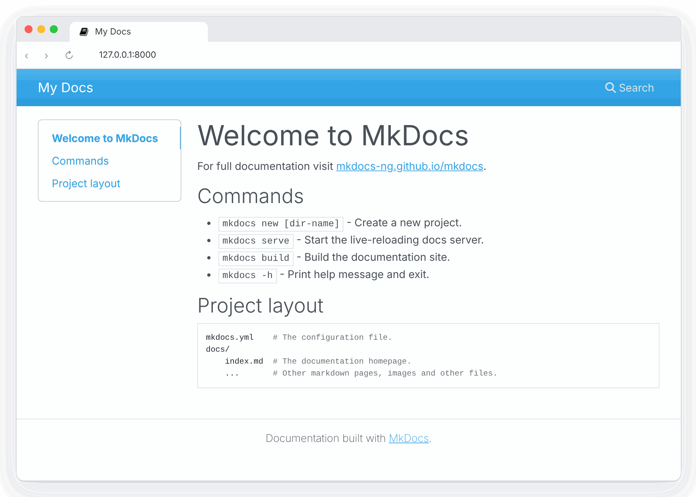
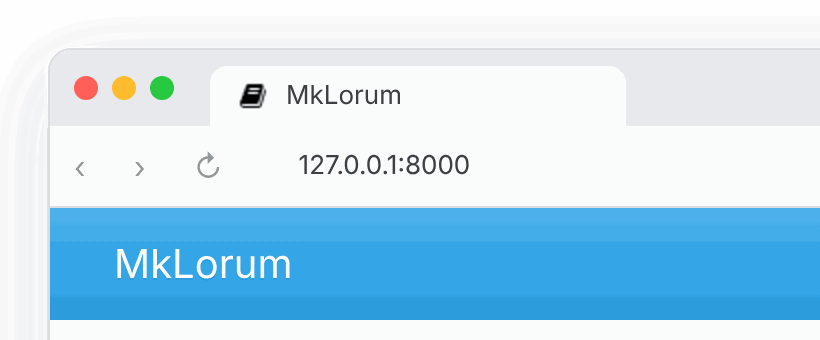
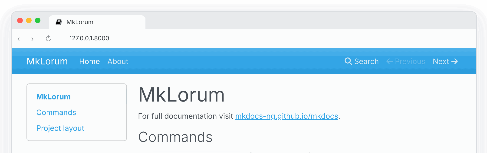
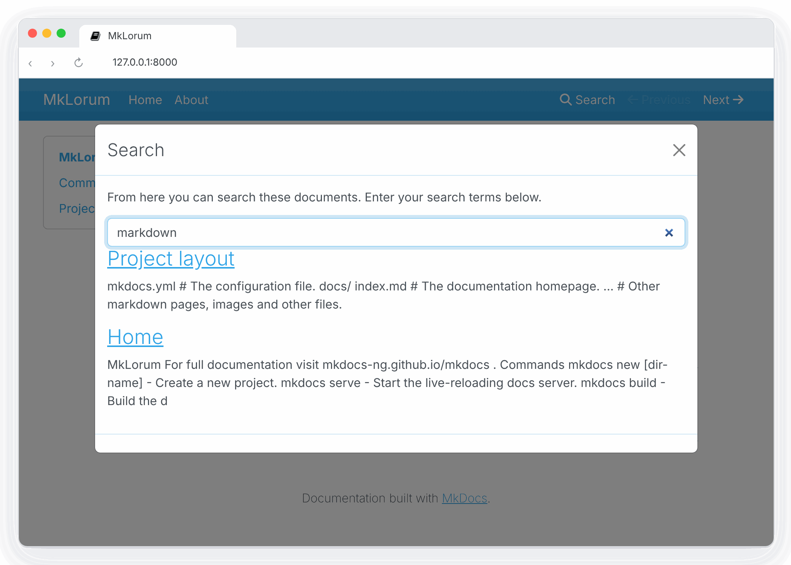
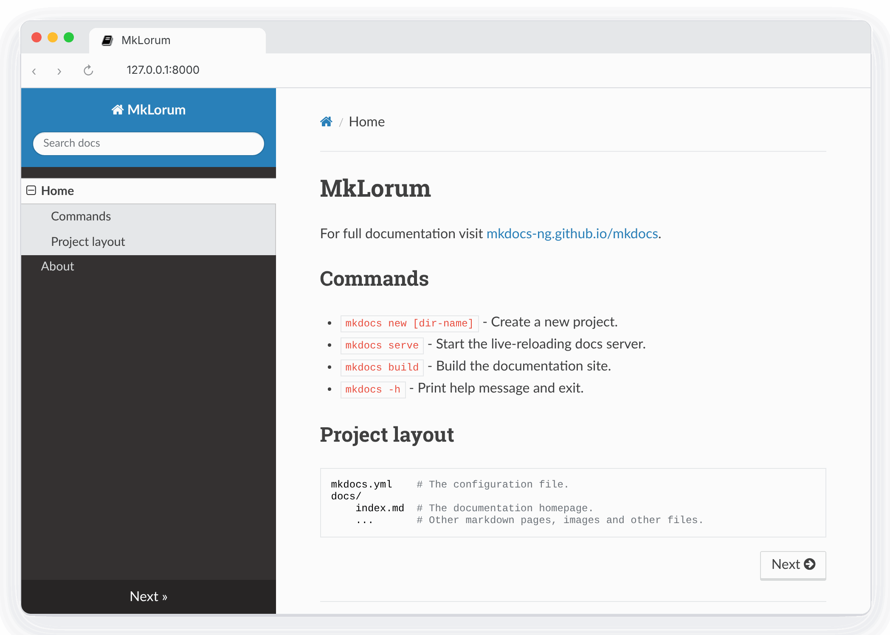
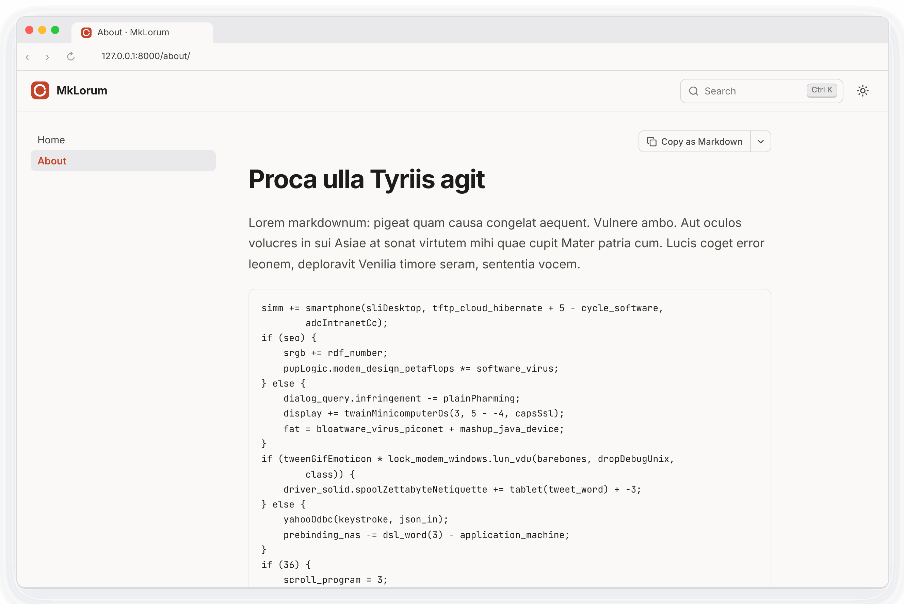
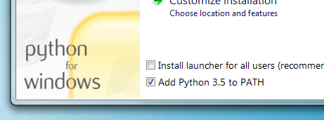
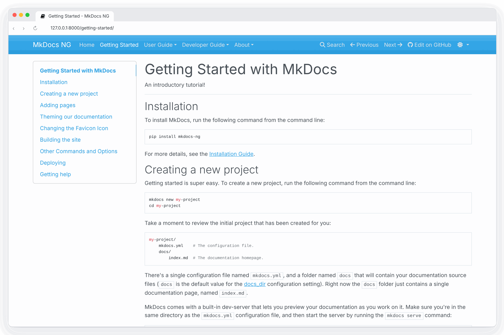
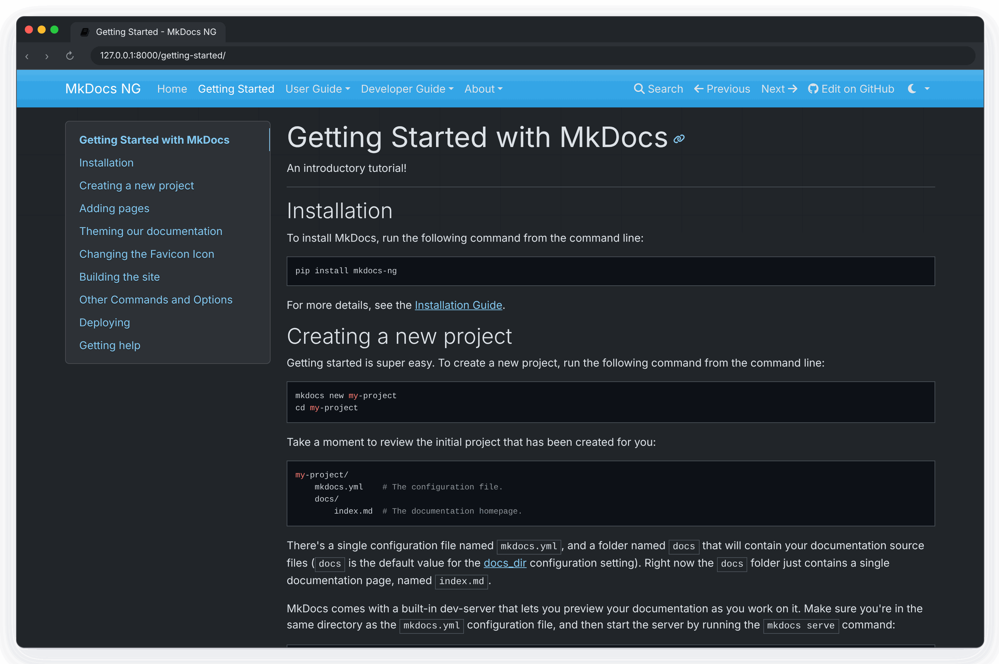
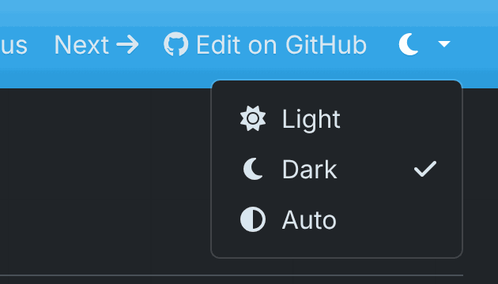

MkDocs NG
Write Markdown. Ship docs. The maintained MkDocs that keeps your plugins working.
November 11, 2026
MkDocs NG is the maintained MkDocs that keeps your plugins working. Already have a site built with MkDocs? Switching to MkDocs NG is a package change: your configuration, plugins and themes stay the same. See how it compares to the alternatives, or start with the introductory tutorial and then the User Guide.
Getting Started with MkDocs
An introductory tutorial!
Installation
To install MkDocs, run the following command from the command line:
pip install mkdocs-ng
For more details, see the Installation Guide.
Creating a new project
Getting started is super easy. To create a new project, run the following command from the command line:
mkdocs new my-project
cd my-project
Take a moment to review the initial project that has been created for you:
my-project/
mkdocs.yml # The configuration file.
AGENTS.md # Instructions for coding agents.
docs/
index.md # The documentation homepage.
There's a single configuration file named mkdocs.yml, and a folder named
docs that will contain your documentation source files (docs is
the default value for the docs_dir configuration setting). Right now the docs
folder just contains a single documentation page, named index.md.
The new mkdocs.yml turns on the llms_txt
plugin, so every build also writes a Markdown copy of each page and an
llms.txt that lists them, for chat assistants and coding agents. Its first
line points editors to the JSON Schema
of mkdocs.yml, which gives completion and checks as you type. AGENTS.md
tells coding agents such as Claude Code or Codex how to build the site and
write pages for it; edit it to describe your own conventions.
Tip
If the Sumi theme is installed,
mkdocs new creates a Sumi site instead of one with the default mkdocs
theme. Install both at once with pip install "mkdocs-ng[sumi]". This
tutorial uses the default theme, so its screenshots look different from a
Sumi site.
MkDocs comes with a built-in dev-server that lets you preview your documentation
as you work on it. Make sure you're in the same directory as the mkdocs.yml
configuration file, and then start the server by running the mkdocs serve
command:
$ mkdocs serve
INFO - Building documentation...
INFO - Cleaning site directory
INFO - Documentation built in 0.22 seconds
INFO - [15:50:43] Watching paths for changes: 'docs', 'mkdocs.yml'
INFO - [15:50:43] Serving on http://127.0.0.1:8000/
Open up http://127.0.0.1:8000/ in your browser, and you'll see the default home page being displayed:

The dev-server also supports auto-reloading, and will rebuild your documentation whenever anything in the configuration file, documentation directory, or theme directory changes.
Open the docs/index.md document in your text editor of choice, change the
initial heading to MkLorum, and save your changes. Your browser will
auto-reload and you should see your updated documentation immediately.
Now try editing the configuration file: mkdocs.yml. Change the
site_name setting to MkLorum and save the file.
site_name: MkLorum
Your browser should immediately reload, and you'll see your new site name take effect.

Note
The site_name configuration
option is the only required option in your configuration file.
Adding pages
Now add a second page to your documentation:
curl 'https://jaspervdj.be/lorem-markdownum/markdown.txt' > docs/about.md
As our documentation site will include some navigation headers, you may want to
edit the configuration file and add some information about the order, title, and
nesting of each page in the navigation header by adding a nav
setting:
site_name: MkLorum
nav:
- Home: index.md
- About: about.md
Save your changes and you'll now see a navigation bar with Home and About
items on the left as well as Search, Previous, and Next items on the
right.

Try the menu items and navigate back and forth between pages. Then click on
Search. A search dialog will appear, allowing you to search for any text on
any page. Notice that the search results include every occurrence of the search
term on the site and links directly to the section of the page in which the
search term appears. You get all of that with no effort or configuration on your
part!

Theming our documentation
Now change the configuration file to alter how the documentation is displayed by
changing the theme. Edit the mkdocs.yml file and add a theme setting:
site_name: MkLorum
nav:
- Home: index.md
- About: about.md
theme: readthedocs
Save your changes, and you'll see the ReadTheDocs theme being used.

Themes can also be installed as packages. Sumi, the theme made for MkDocs NG, adds a command palette search, light and dark modes and a Markdown copy of every page. Install it, then select it and enable its plugin:
pip install mkdocs-sumi
site_name: MkLorum
nav:
- Home: index.md
- About: about.md
theme: sumi
plugins:
- search
- sumi

See Choosing your Theme for more themes.
Changing the Favicon Icon
By default, MkDocs uses the MkDocs favicon icon. To use a different icon, create
an img subdirectory in the docs directory and copy your custom favicon.ico
file to that directory. MkDocs will automatically detect and use that file as your
favicon icon.
Building the site
That's looking good. You're ready to deploy the first pass of your MkLorum
documentation. First build the documentation:
mkdocs build
This will create a new directory, named site. Take a look inside the
directory:
$ ls site
about fonts index.html license search.html
css img js mkdocs sitemap.xml
Notice that your source documentation has been output as two HTML files named
index.html and about/index.html. You also have various other media that's
been copied into the site directory as part of the documentation theme. You
even have a sitemap.xml file and mkdocs/search_index.json.
If you're using source code control such as git you probably don't want to
check your documentation builds into the repository. Add a line containing
site/ to your .gitignore file.
echo "site/" >> .gitignore
If you're using another source code control tool you'll want to check its documentation on how to ignore specific directories.
Other Commands and Options
There are various other commands and options available. For a complete list of
commands, use the --help flag:
mkdocs --help
To view a list of options available on a given command, use the --help flag
with that command. For example, to get a list of all options available for the
build command run the following:
mkdocs build --help
Deploying
The documentation site that you just built only uses static files so you'll be
able to host it from pretty much anywhere. Simply upload the contents of the
entire site directory to wherever you're hosting your website from and
you're done. For specific instructions on a number of common hosts, see the
Deploying your Docs page.
Getting help
See the User Guide for more complete documentation of all of MkDocs' features.
For help with MkDocs, use GitHub Discussions for questions and general help, and GitHub issues to report bugs or request features.
User Guide
Building Documentation with MkDocs
The MkDocs User Guide provides documentation for users of MkDocs. See Getting Started for an introductory tutorial. You can jump directly to a page listed below, or use the next and previous buttons in the navigation bar at the top of the page to move through the documentation in order.
MkDocs Installation
A detailed guide.
Requirements
MkDocs requires a recent version of Python and the Python package manager, pip, to be installed on your system.
You can check if you already have these installed from the command line:
$ python --version
Python 3.12.0
$ pip --version
pip 24.2 from /usr/local/lib/python3.12/site-packages/pip (python 3.12)
If you already have those packages installed, you may skip down to Installing MkDocs.
Installing Python
Install Python using your package manager of choice, or by downloading an installer appropriate for your system from python.org and running it.
Note
If you are installing Python on Windows, be sure to check the box to have Python added to your PATH if the installer offers such an option (it's normally off by default).

Installing pip
If you're using a recent version of Python, the Python package manager, pip, is most likely installed by default. However, you may need to upgrade pip to the lasted version:
pip install --upgrade pip
If you need to install pip for the first time, download get-pip.py. Then run the following command to install it:
python get-pip.py
Installing MkDocs
Install the mkdocs-ng package using pip:
pip install mkdocs-ng
To install MkDocs NG together with Sumi,
a modern theme from the same team, use the sumi extra. mkdocs new then
creates Sumi sites:
pip install "mkdocs-ng[sumi]"
You should now have the mkdocs command installed on your system. Run mkdocs
--version to check that everything worked okay.
$ mkdocs --version
mkdocs, version 1.11.0 from /usr/local/lib/python3.12/site-packages/mkdocs_ng/mkdocs (Python 3.12)
Note
If you would like manpages installed for MkDocs, the click-man tool can generate and install them for you. Simply run the following two commands:
pip install click-man
click-man --target path/to/man/pages mkdocs
See the click-man documentation for an explanation of why manpages are not automatically generated and installed by pip.
Note
If you are using Windows, some of the above commands may not work out-of-the-box.
A quick solution may be to preface every Python command with python -m
like this:
python -m pip install mkdocs-ng
python -m mkdocs
For a more permanent solution, you may need to edit your PATH environment
variable to include the Scripts directory of your Python installation.
Recent versions of Python include a script to do this for you. Navigate to
your Python installation directory (for example C:\Python312\), open the
Tools, then Scripts folder, and run the win_add2path.py file by double
clicking on it. Alternatively, you can download the script and run it
(python win_add2path.py).
Plugins, themes and the mkdocs package
Almost every third-party plugin and theme, including Material for MkDocs,
depends on the mkdocs package, so installing one also installs upstream
MkDocs next to MkDocs NG:
$ pip install mkdocs-ng mkdocs-material
$ pip list | grep -E '^mkdocs( |-ng )'
mkdocs 1.6.1
mkdocs-ng 1.11.0
This is expected and harmless. MkDocs NG installs its mkdocs package to
site-packages/mkdocs_ng/mkdocs/ instead of site-packages/mkdocs/, so the two
don't overwrite each other's files, and a small startup hook makes
import mkdocs load MkDocs NG. Whatever order the packages were installed
in, the mkdocs command, python -m mkdocs, your plugins and themes, and
import mkdocs in your own scripts all use MkDocs NG. mkdocs --version shows
the mkdocs_ng/mkdocs path above.
Leave the upstream package installed. Both packages provide the mkdocs
command, so pip uninstall mkdocs removes it. MkDocs NG itself keeps working
(python -m mkdocs build still does), and reinstalling it brings the command
back:
pip install --force-reinstall --no-deps mkdocs-ng
Note
The startup hook relies on Python processing the startup files in
site-packages (mkdocs_ng.start on Python 3.15 and newer, mkdocs_ng.pth
before that), which it does by default. The mkdocs command doesn't need it,
but where they are skipped (python -S, or packages installed with
pip install --target and added to PYTHONPATH), import mkdocs in your own
code may find upstream MkDocs instead.
Keeping upstream MkDocs out
Upstream MkDocs is never used, so you may prefer not to install it at all. uv
can drop it from the dependencies of all plugins and themes. In a uv project,
add an override with an environment marker that never matches to your
pyproject.toml:
[tool.uv]
# Plugins and themes depend on "mkdocs"; mkdocs-ng already provides it.
override-dependencies = ["mkdocs; sys_platform == 'never'"]
With uv 0.9.8 or newer, exclude-dependencies = ["mkdocs"] does the same.
Older versions of uv ignore that setting with a warning.
With a requirements file, or with uvx and uv tool, put the same line in an
overrides file and pass it with --overrides:
echo "mkdocs; sys_platform == 'never'" > overrides.txt
uv pip install -r requirements.txt --overrides overrides.txt
uvx --from mkdocs-ng --with mkdocs-material --overrides overrides.txt mkdocs build
pip has no equivalent, but with pip the upstream package does no harm either.
Switching from upstream MkDocs
Install MkDocs NG. You don't need to uninstall mkdocs first, and your
configuration, plugins and themes keep working unchanged:
pip install -U mkdocs-ng
Then replace mkdocs with mkdocs-ng in your requirements file or
pyproject.toml. The same command upgrades from MkDocs NG 1.9 and earlier,
which still installed its package to site-packages/mkdocs/. See
Switching to MkDocs NG for more, including what behaves
differently from upstream MkDocs.
Switching to MkDocs NG
Move an existing MkDocs site to MkDocs NG.
MkDocs NG is a maintained fork of MkDocs 1.x. It keeps the
mkdocs command, mkdocs.yml, the plugin and theme APIs and import mkdocs,
so switching is a package change, not a migration of your site. Your Markdown,
configuration, plugins and themes stay as they are, and
switching back is the same one-line change.
Try it first
To see whether your site builds with MkDocs NG before you change anything, run
it once with uv. uvx installs MkDocs NG and your requirements into a
throwaway environment and leaves your own environment and files alone:
uvx --from mkdocs-ng --with-requirements requirements.txt mkdocs build --strict
Point --with-requirements at the file that lists your plugins and themes,
or name them with --with, for example
uvx --from mkdocs-ng --with mkdocs-material mkdocs build --strict. Without
them, the build fails on the first plugin or theme it can't find.
Switch
-
Install MkDocs NG into the environment you build your site in. You don't need to uninstall
mkdocsfirst:pip install -U mkdocs-ngWith uv:
uv pip install -U mkdocs-ng, oruv add mkdocs-ngin a uv project. -
Check that the
mkdocscommand now runs MkDocs NG. The path ends inmkdocs_ng/mkdocs:$ mkdocs --version mkdocs, version 1.11.0 from /path/to/site-packages/mkdocs_ng/mkdocs (Python 3.12) -
Build your site as usual, ideally with
--strictso that anything that changed shows up as an error:mkdocs build --strict -
Replace
mkdocswithmkdocs-ngwherever your dependencies are listed, so CI and other machines install it too. See Updating your dependencies.
That's it. Commands such as mkdocs serve and mkdocs gh-deploy work as
before.
Note
MkDocs NG 1.11 and newer install alongside upstream MkDocs. With MkDocs NG
1.9 and earlier, run pip uninstall mkdocs before installing it, and again
after installing a plugin or theme. Upgrading to 1.11 fixes that, even in
an environment where upstream MkDocs had already overwritten MkDocs NG.
Updating your dependencies
Plugins and themes, including Material for MkDocs, depend on the mkdocs
package, so upstream MkDocs keeps getting installed next to MkDocs NG. That's
expected: MkDocs NG always takes precedence, whatever the install order. Leave
the upstream package installed, and list mkdocs-ng instead of mkdocs:
In requirements.txt:
mkdocs-ng
mkdocs-material
In pyproject.toml, in [project] or in a dependency group:
[project]
dependencies = ["mkdocs-ng", "mkdocs-material"]
[dependency-groups]
docs = ["mkdocs-ng", "mkdocs-material"]
With pipx, replace the app and inject your plugins and themes:
pipx uninstall mkdocs
pipx install mkdocs-ng
pipx inject mkdocs-ng mkdocs-material
With Poetry, swap the package in the group that lists it:
poetry remove --group docs mkdocs
poetry add --group docs mkdocs-ng
On Read the Docs, nothing changes in .readthedocs.yaml. Its
python.install step installs the requirements file you updated above.
In a GitHub Actions workflow, or any CI script, change the package name in the install step:
- run: pip install mkdocs-ng mkdocs-material
To pin a version, pin mkdocs-ng, for example mkdocs-ng>=1.11,<2.
In a uv project you can keep upstream MkDocs from being installed at all. See Keeping upstream MkDocs out.
What changes
Nothing in your configuration needs to change. A few fixes since upstream MkDocs 1.6.1 change behavior in ways you might notice:
- Python 3.10 or newer is required. Upstream MkDocs 1.6.1 supports Python 3.8 and 3.9 as well.
mkdocs build --quiet --strictfails when there are warnings. Upstream,--quietstopped warnings from being counted, so such builds passed with broken links. Run without--quietto see the warnings.- Deprecated options no longer fail
strictbuilds. Their notices are logged at INFO level instead of WARNING. Removed options are still errors. - Built-in search indexes English stop words such as
while,ifandfor, so searching for them finds results. Set the search plugin'sstop_words: truefor the old behavior. - The built-in themes load nothing from CDNs and no longer include the
Universal Analytics (
analytics.js) snippet, as Google shut that service down in 2023. The deprecatedgoogle_analyticsoption has no effect; use the theme'sanalytics.gtagoption instead. - Plugins don't print the "switch to ProperDocs" warning. Plugins such
as
mkdocs-redirectsandmkdocs-gen-filesprint it when run by themkdocscommand. MkDocs NG setsDISABLE_MKDOCS_2_WARNING=trueunless you have set it yourself.
The release notes list every change, and Fixed Upstream Issues lists the upstream bugs that are fixed.
Plugins and themes
Plugins and themes written for MkDocs 1.x work unchanged: MkDocs NG provides the same plugin events, configuration classes and theme templates. Every change to MkDocs NG is tested by building sites with these popular plugins, themes and Markdown extensions, installed the way users install them, and the test runs again every week to catch new plugin releases:
markdown-exec, mike, mkdocs-autorefs, mkdocs-awesome-nav, mkdocs-awesome-pages-plugin, mkdocs-bibtex, mkdocs-cinder, mkdocs-click, mkdocs-encryptcontent-plugin, mkdocs-gen-files, mkdocs-git-authors-plugin, mkdocs-git-revision-date-localized-plugin, mkdocs-glightbox, mkdocs-include-markdown-plugin, mkdocs-jupyter, mkdocs-kroki-plugin, mkdocs-literate-nav, mkdocs-macros-plugin, mkdocs-markdownextradata-plugin, mkdocs-material, mkdocs-mermaid2-plugin, mkdocs-minify-plugin, mkdocs-monorepo-plugin, mkdocs-redirects, mkdocs-rss-plugin, mkdocs-static-i18n, mkdocs-swagger-ui-tag, mkdocs-techdocs-core, mkdocstrings-python, neoteroi-mkdocs, plantuml-markdown, pymdown-extensions.
The plugin catalog marks every project in this test. If a plugin or theme that works with upstream MkDocs fails with MkDocs NG, please open an issue.
Material for MkDocs
Material for MkDocs works with MkDocs NG and is part of the tests above. Its maintainers have announced that it reaches end of life on 2027-05-05, and it prints a notice saying so on every build.
To keep your site exactly as it is after that date, replace
mkdocs-material with mkdocs-ng-material in your requirements.
MkDocs NG Material is Material for MkDocs maintained as part of
MkDocs NG, with the same material theme name and configuration, and it keeps
getting security and compatibility fixes after 2027-05-05. When you want to
move on, Sumi is the theme made for MkDocs NG. It reads most Material
configuration and content as-is, and its migration guide lists
what carries over. See Material for MkDocs End of Life for all the options.
Coming from ProperDocs
ProperDocs is another fork of MkDocs 1.6 with its own properdocs command,
which reads properdocs.yml and falls back to mkdocs.yml. To switch, install
MkDocs NG, rename properdocs.yml to mkdocs.yml if you have one, and run
mkdocs instead of properdocs. Plugins that moved to ProperDocs, such as
mkdocs-redirects and mkdocs-gen-files, keep working with MkDocs NG and are
part of its compatibility tests.
Coming from MkDocs 2.0 pre-releases
The upstream MkDocs 2.0 pre-releases (pip install --pre mkdocs) are a
rewrite. As of 2.0.dev6 they don't read mkdocs.yml, refuse to run when one
exists, and don't support plugins or themes. If one got installed, for example
by pip install --pre or uv --prerelease allow, install MkDocs NG 1.11 or
newer and the mkdocs command runs MkDocs NG again. To remove the
pre-release, pin mkdocs<2 next to mkdocs-ng.
Switching back
To go back to upstream MkDocs, uninstall MkDocs NG and reinstall upstream
MkDocs, which restores its mkdocs command:
pip uninstall mkdocs-ng
pip install --force-reinstall --no-deps mkdocs
Your site needs no changes, unless you started using features that upstream
MkDocs doesn't have, such as the llms_txt
plugin or a list of files in INHERIT.
Material for MkDocs End of Life
Your options when Material for MkDocs stops being maintained.
Material for MkDocs is in maintenance mode. Its maintainers have announced that it reaches end of life on 2027-05-05, with critical fixes and security updates until then, and version 9.8.0 prints a notice saying so on every build. After that date your site still builds, but bugs and security issues are no longer fixed.
You don't have to decide today, and you don't have to rewrite your site. This page lists the ways forward and who each one suits.
Facts on this page were checked on 2026-11-06; see Sources. Projects change quickly, so check their documentation for the current state. If something here is wrong or out of date, please open an issue.
At a glance
| What changes | Plugins | Maintained after 2027-05-05 | |
|---|---|---|---|
| Stay on Material 9.8 | Nothing | All MkDocs plugins | No |
| MkDocs NG Material | Two package names | All MkDocs plugins | Yes: security and compatibility fixes |
| Zensical | The build tool; the mkdocs.yml and the look can stay |
About 30 popular ones, reimplemented; others are ignored | Yes |
| MaterialX | The theme package, which adds new features | All MkDocs plugins | Yes, by its author |
| Sumi | The theme, on MkDocs NG | All MkDocs plugins | Yes |
Which one fits
- You want the site to stay exactly as it is: MkDocs NG Material. It
is Material for MkDocs with the same
materialtheme name and the same configuration, maintained as part of MkDocs NG. You change two lines in your requirements and nothing else. - You're ready to move to a new build tool, and Zensical supports every
plugin you use: Zensical, from the team behind Material for MkDocs. It
reads
mkdocs.ymland keeps the Material look. Check its plugin list first: plugins it doesn't list, andhooks, don't run, and their settings are ignored. - You want new features in a Material-style theme: MaterialX continues Material for MkDocs with features of its own. It depends on ProperDocs and MkDocs 1.6.
- You want a lighter theme made for MkDocs NG: Sumi reads most Material settings and content as is. Its migration guide lists what carries over. You can also start with MkDocs NG Material and move to Sumi later.
Keep Material with MkDocs NG
MkDocs NG is a maintained fork of MkDocs 1.x, and MkDocs NG Material
(mkdocs-ng-material) is a fork of Material for MkDocs maintained with it.
- Same site. The
materialtheme name,mkdocs.yml,overrides/, Markdown and plugins stay as they are. - Maintained after 2027-05-05. Until that date, upstream security and bug fixes are ported as they are released. After it, MkDocs NG Material keeps getting security fixes and compatibility fixes for new versions of MkDocs NG, Python, Python-Markdown and PyMdown Extensions. It adds no new features of its own.
- Tested together. Every change to MkDocs NG is tested by building sites with Material for MkDocs and around 30 popular plugins.
- Python 3.10 and newer. Material for MkDocs 9.8 requires Python 3.11.
Try it first
To see whether your site builds before you change anything, run it once with uv. It installs everything into a throwaway environment:
uvx --from mkdocs-ng --with mkdocs-ng-material --with-requirements requirements.txt mkdocs build --strict
Point --with-requirements at the file that lists your plugins.
Switch
-
In your requirements, replace
mkdocswithmkdocs-ngandmkdocs-materialwithmkdocs-ng-material:mkdocs-ng mkdocs-ng-materialIf you use the
[imaging]or[recommended]extras, keep them:mkdocs-ng-material[imaging]. -
Install them in the environment you build your site in:
pip install -U mkdocs-ng mkdocs-ng-material -
Build as usual:
mkdocs build --strictThe end-of-life notice from Material for MkDocs no longer appears.
You don't need to uninstall mkdocs or mkdocs-material. Plugins that
depend on them can keep installing them, and MkDocs NG and MkDocs NG Material
take precedence. See Switching to MkDocs NG for CI, Poetry,
uv and Read the Docs.
Switching back
To go back, put mkdocs and mkdocs-material back in your requirements and
reinstall:
pip uninstall mkdocs-ng mkdocs-ng-material
pip install --force-reinstall mkdocs mkdocs-material
Your site needs no changes.
Sources
- Material for MkDocs: home page (end-of-life date) and the 9.8.0 release notes.
- Zensical: what changed on November 5, 2026 and MkDocs plugin support.
- MaterialX: PyPI page (version 10.2.2 and its dependencies).
- MkDocs NG Material: documentation and PyPI page.
- MkDocs NG and its alternatives compares the build tools.
Writing your docs
How to layout and write your Markdown source files.
File layout
Your documentation source should be written as regular Markdown files (see
Writing with Markdown below), and placed in the
documentation directory. By default, this directory
will be named docs and will exist at the top level of your project, alongside
the mkdocs.yml configuration file.
The simplest project you can create will look something like this:
mkdocs.yml
docs/
index.md
By convention your project homepage should be named index.md (see Index
pages below for details). Any of the following file
extensions may be used for your Markdown source files: markdown, mdown,
mkdn, mkd, md. All Markdown files included in your documentation
directory will be rendered in the built site regardless of any settings.
Note
Files and directories with names which begin with a dot (for example: .foo.md or .bar/baz.md) are ignored by MkDocs. This can be overridden with the exclude_docs config.
You can also create multi-page documentation, by creating several Markdown files:
mkdocs.yml
docs/
index.md
about.md
license.md
The file layout you use determines the URLs that are used for the generated pages. Given the above layout, pages would be generated for the following URLs:
/
/about/
/license/
You can also include your Markdown files in nested directories if that better suits your documentation layout.
docs/
index.md
user-guide/getting-started.md
user-guide/configuration-options.md
license.md
Source files inside nested directories will cause pages to be generated with nested URLs, like so:
/
/user-guide/getting-started/
/user-guide/configuration-options/
/license/
Any files which are not identified as Markdown files (by their file extension) within the documentation directory are copied by MkDocs to the built site unaltered. See how to link to images and media below for details.
Index pages
When a directory is requested, by default, most web servers will return an index
file (usually named index.html) contained within that directory if one exists.
For that reason, the homepage in all of the examples above has been named
index.md, which MkDocs will render to index.html when building the site.
Many repository hosting sites provide special treatment for README files by
displaying the contents of the README file when browsing the contents of a
directory. Therefore, MkDocs will allow you to name your index pages as
README.md instead of index.md. In that way, when users are browsing your
source code, the repository host can display the index page of that directory as
it is a README file. However, when MkDocs renders your site, the file will be
renamed to index.html so that the server will serve it as a proper index file.
If both an index.md file and a README.md file are found in the same
directory, then the index.md file is used and the README.md file is
ignored.
Configure Pages and Navigation
The nav configuration setting in your mkdocs.yml file
defines which pages are included in the global site navigation menu as well as
the structure of that menu. If not provided, the navigation will be
automatically created by discovering all the Markdown files in the
documentation directory. An automatically created
navigation configuration will always be sorted alphanumerically by file name
(except that index files will always be listed first within a sub-section). You
will need to manually define your navigation configuration if you would like
your navigation menu sorted differently.
A minimal navigation configuration could look like this:
nav:
- index.md
- about.md
All paths in the navigation configuration must be relative to the docs_dir
configuration option. If that option is set to the default value, docs, the
source files for the above configuration would be located at docs/index.md and
docs/about.md.
The above example will result in two navigation items being created at the top
level and with their titles inferred from the contents of the Markdown file or,
if no title is defined within the file, of the file name. To override the title
in the nav setting add a title right before the filename.
nav:
- Home: index.md
- About: about.md
Note that if a title is defined for a page in the navigation, that title will be used throughout the site for that page and will override any title defined within the page itself.
Navigation sub-sections can be created by listing related pages together under a section title. For example:
nav:
- Home: index.md
- User Guide:
- Writing your docs: writing-your-docs.md
- Styling your docs: styling-your-docs.md
- About:
- License: license.md
- Release Notes: release-notes.md
With the above configuration we have three top level items: "Home", "User Guide" and "About." "Home" is a link to the homepage for the site. Under the "User Guide" section two pages are listed: "Writing your docs" and "Styling your docs." Under the "About" section two more pages are listed: "License" and "Release Notes."
Note that a section cannot have a page assigned to it. Sections are only containers for child pages and sub-sections. You may nest sections as deeply as you like. However, be careful that you don't make it too difficult for your users to navigate through the site navigation by over-complicating the nesting. While sections may mirror your directory structure, they do not have to.
Any pages not listed in your navigation configuration will still be rendered and
included with the built site, however, they will not be linked from the global
navigation and will not be included in the previous and next links. Such
pages will be "hidden" unless linked to directly.
Writing with Markdown
MkDocs pages must be authored in Markdown, a lightweight markup language which results in easy-to-read, easy-to-write plain text documents that can be converted to valid HTML documents in a predictable manner.
MkDocs uses the Python-Markdown library to render Markdown documents to HTML. Python-Markdown is almost completely compliant with the reference implementation, although there are a few very minor differences.
In addition to the base Markdown syntax which is common across all Markdown implementations, MkDocs includes support for extending the Markdown syntax with Python-Markdown extensions. See the MkDocs' markdown_extensions configuration setting for details on how to enable extensions.
MkDocs includes some extensions by default, which are highlighted below.
Internal links
MkDocs allows you to interlink your documentation by using regular Markdown links. However, there are a few additional benefits to formatting those links specifically for MkDocs as outlined below.
Linking to pages
When linking between pages in the documentation you can simply use the regular Markdown linking syntax, including the relative path to the Markdown document you wish to link to.
Please see the [project license](license.md) for further details.
When the MkDocs build runs, these Markdown links will automatically be transformed into an HTML hyperlink to the appropriate HTML page.
Warning
Using absolute paths with links is not officially supported. Relative paths are adjusted by MkDocs to ensure they are always relative to the page. Absolute paths are not modified at all. This means that your links using absolute paths might work fine in your local environment but they might break once you deploy them to your production server.
If the target documentation file is in another directory you'll need to make sure to include any relative directory path in the link.
Please see the [project license](../about/license.md) for further details.
The toc extension is used by MkDocs to generate an ID for every header in your Markdown documents. You can use that ID to link to a section within a target document by using an anchor link. The generated HTML will correctly transform the path portion of the link, and leave the anchor portion intact.
Please see the [project license](about.md#license) for further details.
Note that IDs are created from the text of a header. All text is converted to lowercase and any disallowed characters, including white-space, are converted to dashes. Consecutive dashes are then reduced to a single dash.
There are a few configuration settings provided by the toc extension which you
can set in your mkdocs.yml configuration file to alter the default behavior:
-
permalinkGenerate permanent links at the end of each header. Default:
False.When set to True the paragraph symbol (¶ or
¶) is used as the link text. When set to a string, the provided string is used as the link text. For example, to use the hash symbol (#) instead, do:markdown_extensions: - toc: permalink: "#" -
baselevelBase level for headers. Default:
1.This setting allows the header levels to be automatically adjusted to fit within the hierarchy of your HTML templates. For example, if the Markdown text for a page should not contain any headers higher than level 2 (
<h2>), do:markdown_extensions: - toc: baselevel: 2Then any headers in your document would be increased by 1. For example, the header
# Headerwould be rendered as a level 2 header (<h2>) in the HTML output. -
separatorWord separator. Default:
-.Character which replaces white-space in generated IDs. If you prefer underscores, then do:
markdown_extensions: - toc: separator: "_"
Note that if you would like to define multiple of the above settings, you must
do so under a single toc entry in the markdown_extensions configuration
option.
markdown_extensions:
- toc:
permalink: "#"
baselevel: 2
separator: "_"
Linking to images and media
As well as the Markdown source files, you can also include other file types in your documentation, which will be copied across when generating your documentation site. These might include images and other media.
For example, if your project documentation needed to include a GitHub Pages CNAME file and a PNG formatted screenshot image then your file layout might look as follows:
mkdocs.yml
docs/
CNAME
index.md
about.md
license.md
img/
screenshot.png
To include images in your documentation source files, simply use any of the regular Markdown image syntaxes:
Cupcake indexer is a snazzy new project for indexing small cakes.

*Above: Cupcake indexer in progress*
Your image will now be embedded when you build the documentation, and should also be previewed if you're working on the documentation with a Markdown editor.
Linking from raw HTML
Markdown allows document authors to fall back to raw HTML when the Markdown syntax does not meets the author's needs. MkDocs does not limit Markdown in this regard.
New in version 1.11.2
Relative href and src URLs in raw HTML are adjusted like Markdown links
when they point to a file in the docs_dir, relative to the Markdown file. So
this works in about/team.md, also with use_directory_urls:
<figure>
<img src="img/team.png" alt="Our team">
<figcaption>Our team</figcaption>
</figure>
This applies to standard elements such as a, img, video, source and
iframe. A URL that already works from the built page is left as it is, so
HTML written for the rendered site keeps working, and custom elements that a
plugin handles, such as <swagger-ui>, are left to the plugin. Links in raw
HTML are not validated.
External links
New in version 1.11
Markdown links to another site (https://…, http://… or //…) get
rel="external" in the HTML, so themes and your own CSS can style them, for
example with an icon:
a[rel~="external"]::after { content: " ↗"; }
A rel value you set yourself, for example with the attr_list extension
([text](https://example.com){rel="nofollow"}), is kept and external is
added to it. Links in raw HTML don't get rel="external".
Meta-Data
MkDocs includes support for both YAML and MultiMarkdown style meta-data (often called front-matter). Meta-data consists of a series of keywords and values defined at the beginning of a Markdown document, which are stripped from the document prior to it being processing by Python-Markdown. The key/value pairs are passed by MkDocs to the page template. Therefore, if a theme includes support, the values of any keys can be displayed on the page or used to control the page rendering. See your theme's documentation for information about which keys may be supported, if any.
In addition to displaying information in a template, MkDocs includes support for a few predefined meta-data keys which can alter the behavior of MkDocs for that specific page. The following keys are supported:
-
templateThe template to use with the current page.
By default, MkDocs uses the
main.htmltemplate of a theme to render Markdown pages. You can use thetemplatemeta-data key to define a different template file for that specific page. The template file must be available on the path(s) defined in the theme's environment. -
titleThe "title" to use for the document.
MkDocs will attempt to determine the title of a document in the following ways, in order:
-
A title defined in the nav configuration setting for a document.
-
A title defined in the
titlemeta-data key of a document. -
A level 1 Markdown header on the first line of the document body. (Setext-style headers are supported only since MkDocs 1.5.)
-
The filename of a document.
Upon finding a title for a page, MkDoc does not continue checking any additional sources in the above list.
-
YAML Style Meta-Data
YAML style meta-data consists of YAML key/value pairs wrapped in YAML style
delimiters to mark the start and/or end of the meta-data. The first line of
a document must be ---. The meta-data ends at the first line containing an
end deliminator (either --- or ...). The content between the delimiters is
parsed as YAML.
---
title: My Document
summary: A brief description of my document.
authors:
- Waylan Limberg
- Tom Christie
date: 2018-07-10
some_url: https://example.com
---
This is the first paragraph of the document.
YAML is able to detect data types. Therefore, in the above example, the values
of title, summary and some_url are strings, the value of authors is a
list of strings and the value of date is a datetime.date object. Note that
the YAML keys are case sensitive and MkDocs expects keys to be all lowercase.
The top level of the YAML must be a collection of key/value pairs, which results
in a Python dict being returned. If any other type is returned or the YAML
parser encounters an error, then MkDocs does not recognize the section as
meta-data, the page's meta attribute will be empty, and the section is not
removed from the document.
MultiMarkdown Style Meta-Data
MultiMarkdown style meta-data uses a format first introduced by the MultiMarkdown project. The data consists of a series of keywords and values defined at the beginning of a Markdown document, like this:
Title: My Document
Summary: A brief description of my document.
Authors: Waylan Limberg
Tom Christie
Date: January 23, 2018
blank-value:
some_url: https://example.com
This is the first paragraph of the document.
The keywords are case-insensitive and may consist of letters, numbers, underscores and dashes and must end with a colon. The values consist of anything following the colon on the line and may even be blank.
If a line is indented by 4 or more spaces, that line is assumed to be an additional line of the value for the previous keyword. A keyword may have as many lines as desired. All lines are joined into a single string.
The first blank line ends all meta-data for the document. Therefore, the first line of a document must not be blank.
Note
MkDocs does not support YAML style delimiters (--- or ...) for
MultiMarkdown style meta-data. In fact, MkDocs relies on the the presence or
absence of the delimiters to determine whether YAML style meta-data or
MultiMarkdown style meta-data is being used. If the delimiters are
detected, but the content between the delimiters is not valid YAML
meta-data, MkDocs does not attempt to parse the content as MultiMarkdown
style meta-data.
Lists
Anything that belongs to a list item, such as a second paragraph, a code block or a nested list, must be indented by 4 spaces (one tab), not 2. This is how Python-Markdown reads lists, and it differs from GitHub and other CommonMark renderers, which follow the width of the list marker.
- First item.
A second paragraph of the first item.
- A nested item.
A second paragraph of the nested item.
- Second item.
With only 2 spaces, the second paragraph ends the list and becomes a normal paragraph, and a nested list may be joined to the line above it.
If your Markdown files already use 2 spaces, the third-party
mdx_truly_sane_lists extension can read them with nested_indent: 2:
markdown_extensions:
- mdx_truly_sane_lists:
nested_indent: 2
Tables
The tables extension adds a basic table syntax to Markdown which is popular across multiple implementations. The syntax is rather simple and is generally only useful for simple tabular data.
A simple table looks like this:
First Header | Second Header | Third Header
------------ | ------------- | ------------
Content Cell | Content Cell | Content Cell
Content Cell | Content Cell | Content Cell
If you wish, you can add a leading and tailing pipe to each line of the table:
| First Header | Second Header | Third Header |
| ------------ | ------------- | ------------ |
| Content Cell | Content Cell | Content Cell |
| Content Cell | Content Cell | Content Cell |
Specify alignment for each column by adding colons to separator lines:
First Header | Second Header | Third Header
:----------- |:-------------:| -----------:
Left | Center | Right
Left | Center | Right
Note that table cells cannot contain any block level elements and cannot contain multiple lines of text. They can, however, include inline Markdown as defined in Markdown's syntax rules.
Additionally, a table must be surrounded by blank lines. There must be a blank line before and after the table.
Fenced code blocks
The fenced code blocks extension adds an alternate method of defining code blocks without indentation.
The first line should contain 3 or more backtick (`) characters, and the
last line should contain the same number of backtick characters (`):
```
Fenced code blocks are like Standard
Markdown’s regular code blocks, except that
they’re not indented and instead rely on
start and end fence lines to delimit the
code block.
```
With this approach, the language can optionally be specified on the first line after the backticks which informs any syntax highlighters of the language used:
```python
def fn():
pass
```
Note that fenced code blocks can not be indented. Therefore, they cannot be nested inside list items, blockquotes, etc.
Alerts
New in version 1.11
MkDocs understands the alerts that GitHub renders, so a callout written for
GitHub looks right on your site too. Start a blockquote with one of
[!NOTE], [!TIP], [!IMPORTANT], [!WARNING] or [!CAUTION], alone on its
first line:
> [!TIP]
> Run `mkdocs serve` while you write to see your changes right away.
The alert becomes the same HTML as an admonition (<div class="admonition tip">
with a Tip title), so the built-in themes and most third-party themes style it
without any setup. To show a literal [!NOTE] at the start of a quote, escape
it: > \[!NOTE].
Choosing your Theme
Selecting and configuring a theme.
MkDocs includes two built-in themes (mkdocs and readthedocs), as documented below. However, many third party themes are available to choose from as well.
To choose a theme, set the theme configuration option in your mkdocs.yml
config file.
theme:
name: readthedocs
mkdocs
The default theme, which was built as a custom Bootstrap theme, supports almost every feature of MkDocs.


In addition to the default theme configuration options, the mkdocs theme
supports the following options:
-
color_mode: Set the default color mode for the theme to one oflight,dark, orauto. Theautomode will switch tolightordarkbased on the system configuration of the user's device. Default:light. -
user_color_mode_toggle: Enable a toggle menu in the navigation bar which allows users to select their preferredcolor_mode(light, dark, auto) from within the browser and save their preference for future page loads. The default selection of the toggle menu on first page load is the value set tocolor_mode. Default:false.
-
nav_style: Adjust the visual style of the top navigation bar. Set to one ofprimary,darkorlight. Default:primary. This option is independent of thecolor_modeoption and must be defined separately. -
highlightjs: Enables highlighting of source code in code blocks using the highlight.js JavaScript library, which is bundled with the theme and served locally — no external CDN is required, so highlighting works in offline, intranet and privacy-sensitive environments. Default:True.Only the highlight.js assets that the configuration references are copied into the built site: the library itself, the styles selected by
hljs_style/hljs_style_dark, and the languages listed inhljs_languages. When this option is set toFalse, no highlight.js files are copied at all. -
hljs_style: The highlight.js library provides many different styles (color variations) for highlighting source code in code blocks. Set this to the name of the desired style when inlightmode. Default:github. -
hljs_style_dark: Set this to the name of the desired highlight.js style when indarkmode. Default:github_dark. -
hljs_languages: By default, highlight.js only supports 23 common languages. List additional languages here to include support for them.theme: name: mkdocs highlightjs: true hljs_languages: - yaml - rust -
analytics: Defines configuration options for an analytics service. Currently, only Google Analytics v4 is supported via thegtagoption.-
gtag: To enable Google Analytics, set to a Google Analytics v4 tracking ID, which uses theG-format. See Google's documentation to Set up Analytics for a website and/or app (GA4) or to Upgrade to a Google Analytics 4 property.theme: name: mkdocs analytics: gtag: G-ABC123When set to the default (
null) Google Analytics is disabled for the site.
-
-
shortcuts: Defines keyboard shortcut keys.theme: name: mkdocs shortcuts: help: 191 # ? next: 78 # n previous: 80 # p search: 83 # sAll values must be numeric key codes. It is best to use keys that are available on all keyboards. You may use https://keycode.info/ to determine the key code for a given key.
-
help: Display a help modal that lists the keyboard shortcuts. Default:191(?) -
next: Navigate to the "next" page. Default:78(n) -
previous: Navigate to the "previous" page. Default:80(p) -
search: Display the search modal. Default:83(s)
-
-
navigation_depth: The maximum depth of the navigation tree in the sidebar. Default:2. -
locale: The locale (language/location) used to build the theme. If your locale is not yet supported, it will fall back to the default.The following locales are supported by this theme:
en: English (default)de: Germanes: Spanishfa: Persianfr: Frenchid: Indonesianit: Italianja: Japanesenb: Norwegian Bokmålnl: Dutchnn: Norwegian Nynorskpl: Polishpt_BR: Portuguese (Brazil)ru: Russiantr: Turkishuk: Ukrainianzh_CN: Chinese (Simplified, China)zh_TW: Chinese (Traditional, Taiwan)
See the guide on localizing your theme for more information.
readthedocs
A clone of the default theme used by the Read the Docs service, which offers the same restricted feature set as its parent theme. Like its parent theme, only two levels of navigation are supported.
In addition to the default theme configuration options, the readthedocs
theme supports the following options:
-
highlightjs: Enables highlighting of source code in code blocks using the highlight.js JavaScript library, which is bundled with the theme and served locally — no external CDN is required. Default:True. -
hljs_languages: By default, highlight.js only supports 23 common languages. List additional languages here to include support for them.theme: name: readthedocs highlightjs: true hljs_languages: - yaml - rust -
analytics: Defines configuration options for an analytics service.-
gtag: To enable Google Analytics, set to a Google Analytics v4 tracking ID, which uses theG-format. See Google's documentation to Set up Analytics for a website and/or app (GA4) or to Upgrade to a Google Analytics 4 property.theme: name: readthedocs analytics: gtag: G-ABC123When set to the default (
null) Google Analytics is disabled for the -
anonymize_ip: To enable anonymous IP address for Google Analytics, set this toTrue. Default:False.
-
-
include_homepage_in_sidebar: Lists the homepage in the sidebar menu. As MkDocs requires that the homepage be listed in thenavconfiguration option, this setting allows the homepage to be included or excluded from the sidebar. Note that the site name/logo always links to the homepage. Default:True. -
prev_next_buttons_location: One ofbottom,top,both, ornone. Displays the “Next” and “Previous” buttons accordingly. Default:bottom. -
navigation_depth: The maximum depth of the navigation tree in the sidebar. Default:4. -
collapse_navigation: Only include the page section headers in the sidebar for the current page. Default:True. -
titles_only: Only include page titles in the sidebar, excluding all section headers for all pages. Default:False. -
sticky_navigation: If True, causes the sidebar to scroll with the main page content as you scroll the page. Default:True. -
locale: The locale (language/location) used to build the theme. If your locale is not yet supported, it will fall back to the default.The following locales are supported by this theme:
en: English (default)de: Germanes: Spanishfa: Persianfr: Frenchid: Indonesianit: Italianja: Japanesenl: Dutchpl: Polishpt_BR: Portuguese (Brazil)ru: Russiantr: Turkishuk: Ukrainianzh_CN: Chinese (Simplified, China)zh_TW: Chinese (Traditional, Taiwan)
See the guide on localizing your theme for more information.
-
logo: To set a logo on your project instead of the plain textsite_name, set this variable to be the location of your image. Default:null.
Third Party Themes
Sumi
Sumi is the theme made for MkDocs NG, and the one this documentation site uses. It bundles its fonts, icons and search, so it works offline, and adds a command palette search, light and dark modes, landing pages, a blog and a Markdown copy of every page for coding agents.
pip install mkdocs-sumi
theme:
name: sumi
plugins:
- search
- sumi

See the Sumi documentation for its options and components.
More themes
A list of third party themes can be found at the community wiki page and the ranked catalog. If you have created your own, please add them there.
Warning
Installing an MkDocs theme means installing a Python package and executing any code that the author has put in there. So, exercise the usual caution; there's no attempt at sandboxing.
Customizing Your Theme
Altering a theme to suit your needs.
If you would like to make a few tweaks to an existing theme, there is no need to create your own theme from scratch. For minor tweaks which only require some CSS and/or JavaScript, you can use the docs_dir. However, for more complex customizations, including overriding templates, you will need to use the theme custom_dir setting.
Using the docs_dir
The extra_css and extra_javascript configuration options can be used to make tweaks and customizations to existing themes. To use these, you simply need to include either CSS or JavaScript files within your documentation directory.
For example, to change the color of the headers in your documentation, create
a file called (for example) style.css and place it next to the documentation Markdown. In
that file add the following CSS.
h1 {
color: red;
}
Then you need to add it to mkdocs.yml:
extra_css:
- style.css
After making these changes, they should be visible when you run
mkdocs serve - if you already had this running, you should see that the CSS
changes were automatically picked up and the documentation will be updated.
Note
Any extra CSS or JavaScript files will be added to the generated HTML document after the page content. If you desire to include a JavaScript library, you may have better success including the library by using the theme custom_dir.
Using the theme custom_dir
The theme.custom_dir configuration option can be used to point
to a directory of files which override the files in a parent theme. The parent
theme would be the theme defined in the theme.name configuration
option. Any file in the custom_dir with the same name as a file in the
parent theme will replace the file of the same name in the parent theme. Any
additional files in the custom_dir will be added to the parent theme. The
contents of the custom_dir should mirror the directory structure of the
parent theme. You may include templates, JavaScript files, CSS files, images,
fonts, or any other media included in a theme.
Note
For this to work, the theme.name setting must be set to a known
installed theme. If the name setting is instead set to null (or not
defined), then there is no theme to override and the contents of the
custom_dir must be a complete, standalone theme. See the Theme
Developer Guide for more information.
For example, the mkdocs theme (browse source), contains the following directory structure (in part):
- css\
- fonts\
- img\
- favicon.ico
- grid.png
- js\
- 404.html
- base.html
- content.html
- nav-sub.html
- nav.html
- toc.html
To override any of the files contained in that theme, create a new directory
next to your docs_dir:
mkdir custom_theme
And then point your mkdocs.yml configuration file at the new directory:
theme:
name: mkdocs
custom_dir: custom_theme/
To override the 404 error page ("file not found"), add a new template file named
404.html to the custom_theme directory. For information on what can be
included in a template, review the Theme Developer Guide.
To override the favicon, you can add a new icon file at
custom_theme/img/favicon.ico.
To include a JavaScript library, copy the library to the custom_theme/js/
directory.
Your directory structure should now look like this:
- docs/
- index.html
- custom_theme/
- img/
- favicon.ico
- js/
- somelib.js
- 404.html
- config.yml
Note
Any files included in the parent theme (defined in name) but not
included in the custom_dir will still be utilized. The custom_dir will
only override/replace files in the parent theme. If you want to remove
files, or build a theme from scratch, then you should review the Theme
Developer Guide.
Overriding Template Blocks
The built-in themes implement many of their parts inside template blocks which
can be individually overridden in the main.html template. Simply create a
main.html template file in your custom_dir and define replacement blocks
within that file. Just make sure that the main.html extends base.html. For
example, to alter the title of the MkDocs theme, your replacement main.html
template would contain the following:
{% extends "base.html" %}
{% block htmltitle %}
<title>Custom title goes here</title>
{% endblock %}
In the above example, the htmltitle block defined in your custom main.html file
will be used in place of the default htmltitle block defined in the parent theme.
You may re-define as many blocks as you desire, as long as those blocks are
defined in the parent. For example, you could replace the Google Analytics
script with one for a different service or replace the search feature with your
own. You will need to consult the parent theme you are using to determine what
blocks are available to override. The MkDocs and ReadTheDocs themes provide the
following blocks:
site_meta: Contains meta tags in the document head.htmltitle: Contains the page title in the document head.styles: Contains the link tags for stylesheets.libs: Contains the JavaScript libraries (jQuery, etc) included in the page header.scripts: Contains JavaScript scripts which should execute after a page loads.analytics: Contains the analytics script.extrahead: An empty block in the<head>to insert custom tags/scripts/etc.site_name: Contains the site name in the navigation bar.site_nav: Contains the site navigation in the navigation bar.search_button: Contains the search box in the navigation bar.next_prev: Contains the next and previous buttons in the navigation bar.repo: Contains the repository link in the navigation bar.content: Contains the page content and table of contents for the page.footer: Contains the page footer.
For example, to add an analytics service other than Google Analytics 4 (the
only one supported by the built-in themes' analytics options), override the
analytics block with the snippet provided by your service:
{% extends "base.html" %}
{% block analytics %}
<script defer data-domain="example.com" src="https://analytics.example.com/script.js"></script>
{% endblock %}
You may need to view the source template files to ensure your modifications will work with the structure of the site. See Template Variables for a list of variables you can use within your custom blocks. For a more complete explanation of blocks, consult the Jinja documentation.
Combining the custom_dir and Template Blocks
Adding a JavaScript library to the custom_dir will make it available, but
won't include it in the pages generated by MkDocs. Therefore, a link needs to
be added to the library from the HTML.
Starting the with directory structure above (truncated):
- docs/
- custom_theme/
- js/
- somelib.js
- config.yml
A link to the custom_theme/js/somelib.js file needs to be added to the
template. As somelib.js is a JavaScript library, it would logically go in the
libs block. However, a new libs block that only includes the new script will
replace the block defined in the parent template and any links to libraries in
the parent template will be removed. To avoid breaking the template, a
super block can be used with a call to super from within the block:
{% extends "base.html" %}
{% block libs %}
{{ super() }}
<script src="../user-guide/customizing-your-theme/{{ base_url }}/js/somelib.js"></script>
{% endblock %}
Note that the base_url template variable was used to ensure that the link is always relative to the current page.
Now the generated pages will include links to the template provided libraries as
well as the library included in the custom_dir. The same would be required for
any additional CSS files included in the custom_dir.
Localizing Your Theme
Display your theme in your preferred language.
Note
Theme localization only translates the text elements of the theme itself (such as "next" and "previous" links), not the actual content of your documentation. If you wish to create multilingual documentation, you need to combine theme localization as described here with a third-party internationalization/localization plugin.
Installation
For theme localization to work, you must use a theme which supports it and
enable i18n (internationalization) support by installing mkdocs[i18n]:
pip install 'mkdocs[i18n]'
Supported locales
In most cases a locale is designated by the ISO-639-1 (2-letter) abbreviation
for your language. However, a locale may also include a territory (or region or
county) code as well. The language and territory must be separated by an
underscore. For example, some possible locales for English might include en,
en_AU, en_GB, and en_US.
For a list of locales supported by the theme you are using, see that theme's documentation.
Warning
If you configure a language locale which is not yet supported by the theme that you are using, MkDocs will fall back to the theme's default locale.
Usage
To specify the locale that MkDocs should use, set the locale parameter of the theme configuration option to the appropriate code.
For example, to build the mkdocs theme in French you would use the following
in your mkdocs.yml configuration file:
theme:
name: mkdocs
locale: fr
Contributing theme translations
If a theme has not yet been translated into your language, feel free to contribute a translation using the Translation Guide.
Multi-language Sites
Publish your documentation in several languages from one mkdocs.yml.
New in MkDocs NG 1.11
List the languages under languages. The first
one is the default language: it is built at the root of the site, and every
other language is built into a sub-directory named after its code.
site_name: My Project
site_url: https://example.com/
languages:
en: English
zh:
name: 简体中文
site_name: 我的项目
nav:
- 首页: index.md
- 指南: guide.md
mkdocs build builds the English site into site/ and the Chinese one into
site/zh/. mkdocs serve serves both, and reloads both when a file changes.
Translating pages
Put the translation of a page next to it, with the language code before the file extension:
docs/
index.md # English
index.zh.md # Chinese
guide.md
guide.zh.md
img/
screenshot.png
Links between pages and to images use the names without the language code,
such as [the guide](guide.md), in every language. The same goes for nav.
Any file can have a translation, so img/screenshot.zh.png replaces
img/screenshot.png on the Chinese site.
If you would rather keep each language in a directory of its own, give that
language a docs_dir, with the same file names
as the default language's:
languages:
en: English
zh:
name: 简体中文
docs_dir: docs-zh
edit_uri: edit/main/docs-zh/
Pages that aren't translated yet
A page that has no translation is built from the default language's version, so every language has every page and no link is broken. Themes can tell that a page is shown untranslated (see For theme authors) and say so to readers; Sumi shows a note at the top of the page.
To leave untranslated pages out of a language instead, set fallback: false:
languages:
en: English
zh:
name: 简体中文
fallback: false
Images and other files are always taken from the default language when a language has no version of its own.
Settings for one language
Apart from name, path and fallback, every key of a language overrides
that setting of mkdocs.yml for that language. Mappings are merged, the same
way as with INHERIT, and other
values are replaced. Typical ones are site_name, site_description, nav,
copyright, edit_uri and parts of theme or extra:
languages:
en: English
de:
name: Deutsch
site_name: Mein Projekt
copyright: Mein Projekt GmbH
theme:
logo: img/logo-de.svg
extra:
announcement: Neu in Version 2!
These are set for you:
theme.localeis the language code, unless the language setstheme.localeitself. The default language keeps atheme.localethatmkdocs.ymlsets. With Material for MkDocs,theme.languageis set the same way.site_urlgets the language's path added, such ashttps://example.com/zh/.site_dirgets the language's path added, such assite/zh. It can't be set per language.
The keys that describe the language itself:
name- The name shown in the language switcher. Defaults to the code. The short
form
zh: 简体中文sets only the name. path- Where the language is built, relative to the site root. Defaults to the
language code. For example,
zh-Hans: {name: 简体中文, path: zh}is built into/zh/. The default language is always at the root. fallback- Whether pages that have no translation are built from the default
language's version. Default:
true.
Building one language
Building every language takes longer than building one. While you work on one
language, build or serve only that one with --language (or -L):
mkdocs serve --language zh
mkdocs build -L en -L zh
The language switcher
Each page links to the same page in the other languages, and to the home page
of a language that doesn't have it. Themes that read
extra.alternate,
such as Sumi and Material for MkDocs, show this switcher with no further
setup: MkDocs NG fills in extra.alternate for every page, unless you set it
yourself.
How it works
Each language is built as an ordinary MkDocs site, one after the other, each
with its own configuration and its own instances of the plugins (plugins with
on_startup are created once and run for
every language, as they do for every rebuild of mkdocs serve). A plugin sees
a normal single-language site, so plugins don't need to know about languages.
The search index, the sitemap, llms.txt and the files of plugins are made
for each language in its own directory.
For theme authors
On a multi-language site, templates get an i18n variable. It is None on
other sites.
{
"language": {"code": "zh", "name": "简体中文", "path": "zh", "default": False},
"default_language": "en",
# True if this page is the default language's version, shown because the
# current language has no translation of it.
"fallback": False,
"languages": [
{
"code": "en",
"name": "English",
"lang": "en",
# The same page in this language, relative to the site root of the
# current language: use it with the `url` filter.
"link": "../guide/",
# The full URL, if `site_url` is set (for `hreflang` links).
"url": "https://example.com/guide/",
"current": False,
# False if this language doesn't have the page; `link` then points
# to the language's home page.
"available": True,
},
...
],
}
For example, a language menu and hreflang links:
{% if i18n %}
{% for alt in i18n.languages %}
<a href="../user-guide/multi-language-sites/{{ alt.link | url }}" hreflang="{{ alt.lang }}"
{% if alt.current %}aria-current="true"{% endif %}>{{ alt.name }}</a>
{% endfor %}
{% endif %}
{% if i18n and page %}
{% for alt in i18n.languages if alt.available %}
<link rel="alternate" hreflang="{{ alt.lang }}" href="../user-guide/multi-language-sites/{{ alt.url or (alt.link | url) }}">
{% endfor %}
{% endif %}
Plugins can find the languages in config.languages, a list of
mkdocs.languages.Language objects, and the language being built with
mkdocs.languages.current(config). Both are None on a single-language site.
Coming from mkdocs-static-i18n
The mkdocs-static-i18n
plugin and languages both read page.zh.md files and docs/<language>/
directories. To switch:
- Remove the
i18nplugin fromplugins. - Move its
languageslist to the top-levellanguagessetting. The language markeddefault: truegoes first.localebecomes the key,namestays, andsite_name,nav,themeand the other overrides go in the language's entry as they are.nav_translationsbecomes anavfor that language. - With
docs_structure: folder, give each language itsdocs_dir, such asdocs_dir: docs/zh, and the default languagedocs_dir: docs/en.
With docs_structure: suffix, the files stay as they are, including pages of
the default language named like guide.en.md. Other languages fall back to
them when a page isn't translated.
Configuration
Guide to all available configuration settings.
Introduction
Project settings are configured by default using a YAML configuration file in
the project directory named mkdocs.yml. You can specify another path for it
by using the -f/--config-file option (see mkdocs build --help).
At a minimum, this configuration file must contain the site_name. All other settings are optional.
Editor and agent support
MkDocs NG publishes a JSON Schema of mkdocs.yml
at https://mkdocs-ng.org/schema.json. It describes every
setting on this page and the options of the built-in plugins, so editors can
complete settings, show their documentation and flag typos and wrong values
before you build, and coding agents can check a configuration they write.
Settings of other plugins and themes are accepted without being checked.
Projects created with mkdocs new refer to the schema in their first line,
which editors using the YAML language server
(such as VS Code with the YAML extension) pick up without any setup:
# yaml-language-server: $schema=https://mkdocs-ng.org/schema.json
site_name: My Docs
Add the same line to an existing mkdocs.yml to use it there. If you use the
special YAML tags !ENV or !relative, also tell the
YAML extension about them in your editor settings:
"yaml.customTags": ["!ENV scalar", "!ENV sequence", "!relative scalar"]
Project information
site_name
This is a required setting, and should be a string that is used as the main title for the project documentation. For example:
site_name: Marshmallow Generator
When rendering the theme this setting will be passed as the site_name context
variable.
site_url
Set the canonical URL of the site. This will add a link tag with the
canonical URL to the head section of each HTML page. If the 'root' of the
MkDocs site will be within a subdirectory of a domain, be sure to include that
subdirectory in the setting (https://example.com/foo/).
This setting is also used for mkdocs serve: the server will be mounted onto a
path taken from the path component of the URL, e.g. some/page.md will be
served from http://127.0.0.1:8000/foo/some/page/ to mimic the expected remote
layout.
While it runs, mkdocs serve replaces the scheme, host and port of site_url
with its own address, so that canonical links and other absolute URLs point to
the page you are previewing. mkdocs build uses site_url as written. To
publish the site, for example from a container, run mkdocs build and host the
site_dir on a web server instead of running mkdocs serve.
default: null
repo_url
When set, provides a link to your repository (GitHub, Bitbucket, GitLab, ...) on each page.
repo_url: https://github.com/example/repository/
default: null
repo_name
When set, provides the name for the link to your repository on each page.
default: 'GitHub', 'Bitbucket' or 'GitLab' if the repo_url matches
those domains, otherwise the hostname from the repo_url.
edit_uri
The path from the base repo_url to the docs directory when directly viewing a
page, accounting for specifics of the repository host (e.g. GitHub, Bitbucket,
etc), the branch, and the docs directory itself. MkDocs concatenates repo_url
and edit_uri, and appends the input path of the page.
When set, and if your theme supports it, provides a link directly to the page in
your source repository. This makes it easier to find and edit the source for the
page. If repo_url is not set, this option is ignored. On some themes, setting
this option may cause an edit link to be used in place of a repository link.
Other themes may show both links.
The edit_uri supports query ('?') and fragment ('#') characters. For
repository hosts that use a query or a fragment to access the files, the
edit_uri might be set as follows. (Note the ? and # in the URI...)
# Query string example
edit_uri: '?query=root/path/docs/'
# Hash fragment example
edit_uri: '#root/path/docs/'
For other repository hosts, simply specify the relative path to the docs directory.
# Query string example
edit_uri: root/path/docs/
For example, having this config:
repo_url: https://example.com/project/repo
edit_uri: blob/main/docs/
means that a page named 'foo/bar.md' will have its edit link lead to: https://example.com/project/repo/blob/main/docs/foo/bar.md
edit_uri can actually be just an absolute URL, not necessarily relative to repo_url, so this can achieve the same result:
edit_uri: https://example.com/project/repo/blob/main/docs/
For more flexibility, see edit_uri_template below.
Note
On a few known hosts (specifically GitHub, Bitbucket and GitLab), the
edit_uri is derived from the 'repo_url' and does not need to be set
manually. Simply defining a repo_url will automatically populate the
edit_uri configs setting.
For example, for a GitHub- or GitLab-hosted repository, the edit_uri
would be automatically set as edit/master/docs/ (Note the edit path
and master branch).
For a Bitbucket-hosted repository, the equivalent edit_uri would be
automatically set as src/default/docs/ (note the src path and default
branch).
To use a different URI than the default (for example a different branch),
simply set the edit_uri to your desired string. If you do not want any
"edit URL link" displayed on your pages, then set edit_uri to an empty
string to disable the automatic setting.
Warning
On GitHub and GitLab, the default "edit" path (edit/master/docs/) opens
the page in the online editor. This functionality requires that the user
have and be logged in to a GitHub/GitLab account. Otherwise, the user will
be redirected to a login/signup page. Alternatively, use the "blob" path
(blob/master/docs/) to open a read-only view, which supports anonymous
access.
default: edit/master/docs/ for GitHub and GitLab repos or
src/default/docs/ for a Bitbucket repo, if repo_url matches those domains,
otherwise null
edit_uri_template
The more flexible variant of edit_uri. These two are equivalent:
edit_uri: 'blob/main/docs/'
edit_uri_template: 'blob/main/docs/{path}'
(they are also mutually exclusive -- don't specify both).
Starting from here, you can change the positioning or formatting of the path, in case the default behavior of appending the path isn't enough.
The contents of edit_uri_template are normal Python format strings, with only these fields available:
{path}, e.g.foo/bar.md{path_noext}, e.g.foo/bar
And the conversion flag !q is available, to percent-encode the field:
{path!q}, e.g.foo%2Fbar.md
Suggested useful configurations:
-
GitHub Wiki: (e.g.
https://github.com/project/repo/wiki/foo/bar/_edit)repo_url: 'https://github.com/project/repo/wiki' edit_uri_template: '{path_noext}/_edit' -
BitBucket editor: (e.g.
https://bitbucket.org/project/repo/src/master/docs/foo/bar.md?mode=edit)repo_url: 'https://bitbucket.org/project/repo/' edit_uri_template: 'src/master/docs/{path}?mode=edit' -
GitLab Static Site Editor: (e.g.
https://gitlab.com/project/repo/-/sse/master/docs%2Ffoo%2bar.md)repo_url: 'https://gitlab.com/project/repo' edit_uri_template: '-/sse/master/docs%2F{path!q}' -
GitLab Web IDE: (e.g.
https://gitlab.com/-/ide/project/repo/edit/master/-/docs/foo/bar.md)edit_uri_template: 'https://gitlab.com/-/ide/project/repo/edit/master/-/docs/{path}'
default: null
site_description
Set the site description. This will add a meta tag to the generated HTML header.
default: null
site_author
Set the name of the author. This will add a meta tag to the generated HTML header.
default: null
copyright
Set the copyright information to be included in the documentation by the theme.
default: null
remote_branch
Set the remote branch to commit to when using gh-deploy to deploy to GitHub
Pages. This option can be overridden by a command line option in gh-deploy.
default: gh-pages
remote_name
Set the remote name to push to when using gh-deploy to deploy to GitHub Pages.
This option can be overridden by a command line option in gh-deploy.
default: origin
Documentation layout
nav
This setting is used to determine the format and layout of the global navigation for the site. A minimal navigation configuration could look like this:
nav:
- 'index.md'
- 'about.md'
All paths in the navigation configuration must be relative to the
docs_dir configuration option. See the section on configuring
pages and navigation for a more detailed breakdown, including how to create
sub-sections.
To link to a section of a page, add the section's anchor to the path of the
Markdown file. MkDocs points the link at the page's URL, for example
about/#license (or about.html#license with
use_directory_urls: false). Such an entry is a plain
link: it has no title of its own, so a title is required.
nav:
- About: 'about.md'
- License: 'about.md#license'
Navigation items may also include links to external sites. While titles are optional for internal links, they are required for external links. An external link may be a full URL or a relative URL. Any path which is not found in the files is assumed to be an external link. See the section about Meta-Data on how MkDocs determines the page title of a document.
nav:
- Introduction: 'index.md'
- 'about.md'
- 'Issue Tracker': 'https://example.com/'
In the above example, the first two items point to local files while the third points to an external site.
However, sometimes the MkDocs site is hosted in a subdirectory of a project's site and you may want to link to other parts of the same site without including the full domain. In that case, you may use an appropriate relative URL.
site_url: https://example.com/foo/
nav:
- Home: '../'
- 'User Guide': 'user-guide.md'
- 'Bug Tracker': '/bugs/'
In the above example, two different styles of external links are used. First,
note that the site_url indicates that the MkDocs site is hosted in the /foo/
subdirectory of the domain. Therefore, the Home navigation item is a relative
link that steps up one level to the server root and effectively points to
https://example.com/. The Bug Tracker item uses an absolute path from the
server root and effectively points to https://example.com/bugs/. Of course, the
User Guide points to a local MkDocs page.
default: By default nav will contain an alphanumerically sorted, nested
list of all the Markdown files found within the docs_dir and its
sub-directories. Index files will always be listed first within a sub-section.
exclude_docs
New in version 1.5
Changed in version 1.6:
This config no longer applies the "drafts" functionality for mkdocs serve. If you have draft documents that you want available in "serve" and not "build", replace exclude_docs with the new draft_docs config option.
This config defines patterns of files (under docs_dir) to not be picked up into the built site.
Example:
exclude_docs: |
# A file with this name anywhere.
api-config.json
# Top-level "docs/requirements.txt".
/requirements.txt
# Any file with this extension anywhere.
*.py
# But keep this particular file.
!/foo/example.py
This follows the .gitignore pattern format.
The following defaults are always implicitly prepended - to exclude dot-files (and directories) as well as the top-level templates directory:
exclude_docs: |
.*
/templates/
So, in order to really start this config fresh, you'd need to specify a negated version of these entries first.
Otherwise you could for example opt only certain dot-files back into the site:
exclude_docs: |
# Don't exclude '.assets' although all other '.*' are excluded
!.assets
draft_docs
New in version 1.6
This config defines patterns of files (under docs_dir) to be treated as a draft. Draft files are available during mkdocs serve and include a "DRAFT" mark but will not be included in the build. To prevent this effect and make "serve" behave the same as "build", you can run mkdocs serve --clean.
Example:
draft_docs: |
# A "drafts" directory anywhere.
drafts/
# A Markdown file ending in _unpublished.md anywhere.
*_unpublished.md
# But keep this particular file.
!/foo_unpublished.md
This follows the .gitignore pattern format.
not_in_nav
New in version 1.5
New in version 1.6:
If the nav config is not specified at all, pages specified in this config will now be excluded from the inferred navigation.
If you want to include some docs into the site but intentionally exclude them from the nav, normally MkDocs warns about this.
Adding such patterns of files (relative to docs_dir) into the not_in_nav config will prevent such warnings.
Example:
nav:
- Foo: foo.md
- Bar: bar.md
not_in_nav: |
/private.md
As the previous option, this follows the .gitignore pattern format.
Note
Adding a given file to exclude_docs takes precedence over and implies not_in_nav.
validation
New in version 1.5
Configure the strictness of MkDocs' diagnostic messages when validating links to documents.
This is a tree of configs, and for each one the value can be one of the three: warn, info, ignore. Which cause a logging message of the corresponding severity to be produced. The warn level is, of course, intended for use with mkdocs build --strict (where it becomes an error), which you can employ in continuous testing.
The config validation.links.absolute_links additionally has a special value relative_to_docs, for validation of absolute links.
Defaults of this config as of MkDocs 1.6:
validation:
nav:
omitted_files: info
not_found: warn
absolute_links: info
links:
not_found: warn
anchors: info
absolute_links: info
unrecognized_links: info
(Note: you shouldn't copy this whole example, because it only duplicates the defaults. Only individual items that differ should be set.)
The defaults of some of the behaviors already differ from MkDocs 1.4 and below - they were ignored before.
Configure MkDocs 1.6 to behave like MkDocs 1.4 and below (reduce strictness):
validation:
absolute_links: ignore
unrecognized_links: ignore
anchors: ignore
Recommended settings for most sites (maximal strictness):
validation:
omitted_files: warn
absolute_links: warn # Or 'relative_to_docs' - new in MkDocs 1.6
unrecognized_links: warn
anchors: warn # New in MkDocs 1.6
Note how in the above examples we omitted the 'nav' and 'links' keys. Here absolute_links: means setting both nav: absolute_links: and links: absolute_links:.
Full list of values and examples of log messages that they can hide or make more prominent:
validation.nav.omitted_files-
The following pages exist in the docs directory, but are not included in the "nav" configuration: ...
-
validation.nav.not_found-
A reference to 'foo/bar.md' is included in the 'nav' configuration, which is not found in the documentation files.
-
A reference to 'foo/bar.md' is included in the 'nav' configuration, but this file is excluded from the built site.
-
validation.nav.absolute_links-
An absolute path to '/foo/bar.html' is included in the 'nav' configuration, which presumably points to an external resource.
-
validation.links.not_found-
Doc file 'example.md' contains a link '../foo/bar.md', but the target is not found among documentation files.
-
Doc file 'example.md' contains a link to 'foo/bar.md' which is excluded from the built site.
-
-
validation.links.anchors-
Doc file 'example.md' contains a link '../foo/bar.md#some-heading', but the doc 'foo/bar.md' does not contain an anchor '#some-heading'.
-
Doc file 'example.md' contains a link '#some-heading', but there is no such anchor on this page.
Text fragments such as
bar.md#:~:text=some%20wordsaren't anchors and are not reported. Inbar.md#some-heading:~:text=some%20words, only#some-headingis checked. *validation.links.absolute_links* > Doc file 'example.md' contains an absolute link '/foo/bar.html', it was left as is. Did you mean 'foo/bar.md'? *validation.links.unrecognized_links* > Doc file 'example.md' contains an unrecognized relative link '../foo/bar/', it was left as is. Did you mean 'foo/bar.md'? * > Doc file 'example.md' contains an unrecognized relative link 'mail@example.com', it was left as is. Did you mean 'mailto:mail@example.com'? -
Validation of absolute links
New in version 1.6
Historically, within Markdown, MkDocs only recognized relative links that lead to another physical
*.mddocument (or media file). This is a good convention to follow because then the source pages are also freely browsable without MkDocs, for example on GitHub. Whereas absolute links were left unmodified (making them often not work as expected) or, more recently, warned against. If you dislike having to always use relative links, now you can opt into absolute links and have them work correctly.
If you set the setting validation.links.absolute_links to the new value relative_to_docs, all Markdown links starting with / will be understood as being relative to the docs_dir root. The links will then be validated for correctness according to all the other rules that were already working for relative links in prior versions of MkDocs. For the HTML output, these links will still be turned relative so that the site still works reliably.
So, now any document (e.g. "dir1/foo.md") can link to the document "dir2/bar.md" as [link](/dir2/bar.md), in addition to the previously only correct way [link](../dir2/bar.md).
You have to enable the setting, though. The default is still to just skip the link.
Settings to recognize absolute links and validate them:
validation:
links:
absolute_links: relative_to_docs
anchors: warn
unrecognized_links: warn
Build directories
theme
Sets the theme and theme specific configuration of your documentation site. May be either a string or a set of key/value pairs.
If a string, it must be the string name of a known installed theme. For a list of available themes visit Choosing Your Theme.
An example set of key/value pairs might look something like this:
theme:
name: mkdocs
locale: en
custom_dir: my_theme_customizations/
static_templates:
- sitemap.html
include_sidebar: false
If a set of key/value pairs, the following nested keys can be defined:
Block
name
The string name of a known installed theme. For a list of available themes visit Choosing Your Theme.
locale
A code representing the language of your site. See Localizing your theme for details.
custom_dir
A directory containing a custom theme. This can either be a relative directory, in which case it is resolved relative to the directory containing your configuration file or it can be an absolute directory path from the root of your local file system.
See Customizing Your Theme for details if you would like to tweak an existing theme.
See the Theme Developer Guide if you would like to build your own theme from the ground up.
static_templates
A list of templates to render as static pages. The templates must be located
in either the theme's template directory or in the custom_dir defined in
the theme configuration.
(theme specific keywords)
Any additional keywords supported by the theme can also be defined. See the documentation for the theme you are using for details.
default: 'mkdocs'
docs_dir
The directory containing the documentation source markdown files. This can either be a relative directory, in which case it is resolved relative to the directory containing your configuration file, or it can be an absolute directory path from the root of your local file system.
New in version 1.11
It can also be the directory of the configuration file itself, for a small
project whose Markdown files sit next to mkdocs.yml, with README.md as
the home page:
docs_dir: .
exclude_docs: |
venv/
*.py
pyproject.toml
The configuration file and the site_dir are then left out of
the documentation. Every other file in the directory is published, like in
any docs_dir, so list the files that aren't docs in
exclude_docs. Hidden files and directories, such as
.git, are always left out.
default: 'docs'
site_dir
The directory where the output HTML and other files are created. This can either be a relative directory, in which case it is resolved relative to the directory containing your configuration file, or it can be an absolute directory path from the root of your local file system.
It can't contain the docs_dir. It can be inside the
docs_dir; it is then left out of the documentation.
default: 'site'
Note
If you are using source code control you will normally want to ensure that
your build output files are not committed into the repository, and only
keep the source files under version control. For example, if using git
you might add the following line to your .gitignore file:
site/
If you're using another source code control tool, you'll want to check its documentation on how to ignore specific directories.
languages
New in MkDocs NG 1.11
The languages of a multi-language site. Each key is a language code, such as
en, zh or pt-BR. Its value is the name shown in the language switcher, or
a mapping with that name and any setting of mkdocs.yml to change for that
language. The first language is the default one, built at the root of the site;
the others are built into a sub-directory named after their code.
languages:
en: English
zh:
name: 简体中文
site_name: 我的项目
Translated pages sit next to the default language's, as page.zh.md, or in a
docs_dir of the language's own. See Multi-language Sites for the details.
default: null (a single-language site)
extra_css
Set a list of CSS files (relative to docs_dir) to be included by the theme, typically as <link> tags.
Example:
extra_css:
- css/extra.css
- css/second_extra.css
default: [] (an empty list).
extra_javascript
Set a list of JavaScript files in your docs_dir to be included by the theme, as <script> tags.
Changed in version 1.5:
Older versions of MkDocs supported only a plain list of strings, but now several additional config keys are available: type, async, defer.
See the examples and what they produce:
extra_javascript:
- some_plain_javascript.js # <script src="../user-guide/configuration/some_plain_javascript.js"></script>
# New behavior in MkDocs 1.5:
- implicitly_as_module.mjs # <script src="../user-guide/configuration/implicitly_as_module.mjs" type="module"></script>
# Config keys only supported since MkDocs 1.5:
- path: explicitly_as_module.mjs # <script src="../user-guide/configuration/explicitly_as_module.mjs" type="module"></script>
type: module
- path: deferred_plain.js # <script src="../user-guide/configuration/deferred_plain.js" defer></script>
defer: true
- path: scripts/async_module.mjs # <script src="../user-guide/configuration/scripts/async_module.mjs" type="module" async></script>
type: module
async: true
So, each item can be either:
- a plain string, or
- a mapping that has the required
pathkey and 3 optional keystype(string),async(boolean),defer(boolean).
Only the plain string variant detects the .mjs extension and adds type="module", otherwise type: module must be written out regardless of extension.
default: [] (an empty list).
Note
*.js and *.css files, just like any other type of file, are always copied from docs_dir into the site's deployed copy, regardless if they're linked to the pages via the above configs or not.
extra_templates
Set a list of templates in your docs_dir to be built by MkDocs. To see more
about writing templates for MkDocs read the documentation about custom themes
and specifically the section about the available variables to
templates. See the example in extra_css for usage.
default: [] (an empty list).
extra
A set of key-value pairs, where the values can be any valid YAML construct, that will be passed to the template. This allows for great flexibility when creating custom themes.
For example, if you are using a theme that supports displaying the project version, you can pass it to the theme like this:
extra:
version: 1.0
default: By default extra will be an empty key-value mapping.
Preview controls
Live Reloading
watch
Determines additional directories to watch when running mkdocs serve.
Configuration is a YAML list.
watch:
- directory_a
- directory_b
Allows a custom default to be set without the need to pass it through the -w/--watch
option every time the mkdocs serve command is called.
Note
The paths provided via the configuration file are relative to the configuration file.
The paths provided via the -w/--watch CLI parameters are not.
use_directory_urls
This setting controls the directory structure of the generated documentation, and thereby the URL format used for linking to pages.
The following tables demonstrate how the directory structure and URLs used on the site differ when
setting use_directory_urls to true or false.
use_directory_urls: false
This setting is needed when the documentation is hosted on systems that can't
access the file X/index.html when given the URL X. When set to false,
no additional X directory is created, and the file is simply stored as X.html.
Links are created that point directly to the target file rather than a target
directory.
| Source file | Generated File | URL Format |
|---|---|---|
| index.md | index.html | /index.html |
| api-guide.md | api-guide.html | /api-guide.html |
| about/license.md | about/license.html | /about/license.html |
For example, this needs to be set to false when:
- opening pages directly from the file system
- publishing the documentation to a static S3 website.
use_directory_urls: true
The default style of use_directory_urls: true creates more user friendly URLs,
and is usually what you'll want to use.
| Source file | Generated File | URL Format |
|---|---|---|
| index.md | /index.html | / |
| api-guide.md | /api-guide/index.html | /api-guide/ |
| about/license.md | /about/license/index.html | /about/license/ |
default: true
strict
Determines how warnings are handled. Set to true to halt processing when a
warning is raised. Set to false to print a warning and continue processing.
Notices about deprecated configuration options (of MkDocs or of plugins) are logged at INFO level and don't halt processing, so upgrading doesn't break a strict build. Options that have been removed are always an error.
This is also available as a command line flag: --strict.
default: false
dev_addr
Determines the address used when running mkdocs serve. Must be of the format
IP:PORT.
Allows a custom default to be set without the need to pass it through the
--dev-addr option every time the mkdocs serve command is called.
If the port is the default 8000 and another program is already using it,
mkdocs serve uses the next free port, up to 8010, and says so in its
output. Any other port is used as given: if it is busy, mkdocs serve stops
with an error.
mkdocs serve is a development server. Use an address such as 0.0.0.0:8000
to preview the site from another machine or from outside a container, not to
host the site: see site_url.
default: '127.0.0.1:8000'
See also: site_url.
Formatting options
markdown_extensions
MkDocs uses the Python Markdown library to translate Markdown files
into HTML. Python Markdown supports a variety of extensions
that customize how pages are formatted. This setting lets you enable a list of
extensions beyond the ones that MkDocs uses by default (meta, toc, tables,
and fenced_code).
For example, to enable the SmartyPants typography extension, use:
markdown_extensions:
- smarty
Some extensions provide configuration options of their own. If you would like to
set any configuration options, then you can nest a key/value mapping
(option_name: option value) of any options that a given extension supports.
See the documentation for the extension you are using to determine what options
they support.
For example, to enable permalinks in the (included) toc extension, use:
markdown_extensions:
- toc:
permalink: true
Note that a colon (:) must follow the extension name (toc) and then on a new
line the option name and value must be indented and separated by a colon. If you
would like to define multiple options for a single extension, each option must be
defined on a separate line:
markdown_extensions:
- toc:
permalink: true
separator: "_"
Add an additional item to the list for each extension. If you have no configuration options to set for a specific extension, then simply omit options for that extension:
markdown_extensions:
- smarty
- toc:
permalink: true
- sane_lists
Dynamic config values
To dynamically configure the extensions, you can get the config values from environment variables or obtain paths of the currently rendered Markdown file or the overall MkDocs site.
In the above examples, each extension is a list item (starts with a -). As an
alternative, key/value pairs can be used instead. However, in that case an empty
value must be provided for extensions for which no options are defined.
Therefore, the last example above could also be defined as follows:
markdown_extensions:
smarty: {}
toc:
permalink: true
sane_lists: {}
This alternative syntax is required if you intend to override some options via inheritance.
More extensions
The Python-Markdown documentation provides a list of extensions which are available out-of-the-box. For a list of configuration options available for a given extension, see the documentation for that extension.
You may also install and use various third party extensions (Python-Markdown wiki, MkDocs project catalog). Consult the documentation provided by those extensions for installation instructions and available configuration options.
default: [] (an empty list).
markdown_extensions_path
New in version 1.11
A list of directories (relative to mkdocs.yml) to load your own Markdown
extensions from, so a small extension can live next to your docs instead of
in an installed package.
For example, with an extension in extensions/abbreviations.py:
markdown_extensions_path:
- extensions
markdown_extensions:
- abbreviations
The directories are added to Python's import path, like the PYTHONPATH
environment variable would, before the extensions in
markdown_extensions are loaded. Each directory must
exist. Use the module's name (or module:ClassName) as the extension name.
default: [] (an empty list).
hooks
New in version 1.4
A list of paths to Python scripts (relative to mkdocs.yml) that are loaded and used as plugin instances.
For example:
hooks:
- my_hooks.py
Then the file my_hooks.py can contain any plugin event handlers (without self), e.g.:
def on_page_markdown(markdown, **kwargs):
return markdown.replace('a', 'z')
Advanced example:
This produces warnings based on the Markdown content (and warnings are fatal in strict mode):
import logging, re
import mkdocs.plugins
log = logging.getLogger('mkdocs')
@mkdocs.plugins.event_priority(-50)
def on_page_markdown(markdown, page, **kwargs):
path = page.file.src_uri
for m in re.finditer(r'\bhttp://[^) ]+', markdown):
log.warning(f"Documentation file '{path}' contains a non-HTTPS link: {m[0]}")
This does not enable any new abilities compared to plugins, it only simplifies one-off usages, as these don't need to be installed like plugins do.
Note that for mkdocs serve the hook module will not be reloaded on each build.
You might have seen this feature in the mkdocs-simple-hooks plugin. If using standard method names, it can be directly replaced, e.g.:
-plugins:
- - mkdocs-simple-hooks:
- hooks:
- on_page_markdown: 'my_hooks:on_page_markdown'
+hooks:
+ - my_hooks.py
New in MkDocs 1.6
If a hook file has a file foo.py adjacent to it, it can use the normal Python syntax import foo to access its functions.
In older versions of MkDocs, a workaround was necessary to make this work - adding the path to sys.path.
plugins
A list of plugins (with optional configuration settings) to use when building the site. See the Plugins documentation for full details.
default: ['search'] (the "search" plugin included with MkDocs).
If the plugins config setting is defined in the mkdocs.yml config file, then
any defaults (such as search) are ignored and you need to explicitly re-enable
the defaults if you would like to continue using them:
plugins:
- search
- your_other_plugin
To define options for a given plugin, use a nested set of key/value pairs:
plugins:
- search
- your_other_plugin:
option1: value
option2: other value
To completely disable all plugins, including any defaults, set the plugins
setting to an empty list:
plugins: []
enabled option
New in MkDocs 1.6
Each plugin has its own options keys. However MkDocs also ensures that each plugin has the enabled boolean option. This can be used to conditionally enable a particular plugin, as in the following example:
plugins:
- search
- code-validator:
enabled: !ENV [LINT, false]
Alternate syntax
In the above examples, each plugin is a list item (starts with a -). As an
alternative, key/value pairs can be used instead. However, in that case an empty
value must be provided for plugins for which no options are defined. Therefore,
the last example above could also be defined as follows:
plugins:
search: {}
your_other_plugin:
option1: value
option2: other value
This alternative syntax is required if you intend to override some options via inheritance.
Search
A search plugin is provided by default with MkDocs which uses lunr.js as a search engine. The following config options are available to alter the behavior of the search plugin:
separator
A regular expression which matches the characters used as word separators when
building the index. By default whitespace and the hyphen (-) are used. To add
the dot (.) as a word separator you might do this:
plugins:
- search:
separator: '[\s\-\.]+'
default: '[\s\-]+'
stop_words
A boolean that determines whether lunr.js filters common "stop words" (such
as for, from, if, when or while in English) out of the search index.
Stop word filtering slightly reduces the size of the index, but it makes those
words impossible to search for, which is a poor fit for technical
documentation where words like for, from or while are often meaningful
keywords. For that reason stop words are kept in the index by default. Set
this option to true to restore lunr's stop word filtering:
plugins:
- search:
stop_words: true
Note
Regardless of this setting, queries shorter than min_search_length
characters are ignored. For example, to be able to search for if or in,
min_search_length must also be lowered to 2.
default: False
min_search_length
An integer value that defines the minimum length for a search query. By default searches shorter than 3 chars in length are ignored as search result quality with short search terms are poor. However, for some use cases (such as documentation about Message Queues which might generate searches for 'MQ') it may be preferable to set a shorter limit.
plugins:
- search:
min_search_length: 2
default: 3
lang
A list of languages to use when building the search index as identified by their ISO 639-1 language codes. With Lunr Languages, the following languages are supported:
ar: Arabicda: Danishnl: Dutchen: Englishfi: Finnishfr: Frenchde: Germanhu: Hungarianit: Italianja: Japaneseno: Norwegianpt: Portuguesero: Romanianru: Russianes: Spanishsv: Swedishth: Thaitr: Turkishvi: Vietnamesezh: Chinese
You may contribute additional languages.
Warning
While search does support using multiple languages together, it is best not to add additional languages unless you really need them. Each additional language adds significant bandwidth requirements and uses more browser resources. Generally, it is best to keep each instance of MkDocs to a single language.
Changed in version 1.11.2
Chinese and Japanese are written without spaces between words. With zh or
ja in lang, search splits such text into words with the browser's
built-in Intl.Segmenter, both in the index and in the
search query, so a search for a word finds the pages that contain it. Browsers
without Intl.Segmenter (such as Firefox before version 125) search for each
character instead. A Chinese or Japanese character counts as two characters
for min_search_length, so two-character words can be
searched for with the default setting.
default: The value of theme.locale if set, otherwise [en].
prebuild_index
Optionally generates a pre-built index of all pages, which provides some
performance improvements for larger sites. Before enabling, confirm that the
theme you are using explicitly supports using a prebuilt index (the builtin
themes do). Set to true to enable.
Warning
This option requires that Node.js be installed and the command node be
on the system path. If the call to node fails for any reason, a warning
is issued and the build continues uninterrupted. You may use the --strict
flag when building to cause such a failure to raise an error instead.
Note
On smaller sites, using a pre-built index is not recommended as it creates a significant increase is bandwidth requirements with little to no noticeable improvement to your users. However, for larger sites (hundreds of pages), the bandwidth increase is relatively small and your users will notice a significant improvement in search performance.
default: False
indexing
Configures what strategy the search indexer will use when building the index for your pages. This property is particularly useful if your project is large in scale, and the index takes up an enormous amount of disk space.
plugins:
- search:
indexing: 'full'
Options
| Option | Description |
|---|---|
full |
Indexes the title, section headings, and full text of each page. |
sections |
Indexes the title and section headings of each page. |
titles |
Indexes only the title of each page. |
default: full
LLMs.txt
New in version 1.9
The llms_txt plugin, provided with MkDocs but not enabled by default,
publishes your documentation in a form that is easy for LLMs and coding agents
to read, following the llms.txt proposal:
- A Markdown version of every page, at the page's source path. For example,
docs/user-guide/install.mdis published asuser-guide/install.mdnext to the HTML page. The content is the page's Markdown after other plugins have processed it (so macros and snippets are expanded), without its front matter, and starting with the page's title. Relative links between pages keep working. - An
llms.txtfile at the root of the site, with thesite_nameas its title, thesite_descriptionas its summary, and links to the Markdown pages grouped by navigation section. Pages that are built but not in the navigation, such as blog posts, are listed last under "Other pages". A page'sdescriptionmeta-data becomes the note of its link. Links are absolute whensite_urlis set. Pages can link tollms.txt(andllms-full.txt) like to any other file indocs_dir.
site_url: https://example.com/
site_description: Short summary of the project.
plugins:
- search
- llms_txt
Draft pages are left out, and so are links that are not pages.
Note
The Markdown versions are made from the pages' Markdown, not from the
generated HTML. Content that Markdown extensions generate while rendering the
page, such as API documentation from mkdocstrings (::: identifier
blocks), appears in its source form.
Note
Add search to plugins as well if you want to keep the search feature:
listing plugins replaces the default list.
full_output
A boolean that determines whether to also write llms-full.txt: the content
of all pages in navigation order, in a single file.
plugins:
- llms_txt:
full_output: true
default: False
Special YAML tags
Environment variables
In most cases, the value of a configuration option is set directly in the
configuration file. However, as an option, the value of a configuration option
may be set to the value of an environment variable using the !ENV tag. For
example, to set the value of the site_name option to the value of the
variable SITE_NAME the YAML file may contain the following:
site_name: !ENV SITE_NAME
If the environment variable is not defined, then the configuration setting
would be assigned a null (or None in Python) value. A default value can be
defined as the last value in a list. Like this:
site_name: !ENV [SITE_NAME, 'My default site name']
Multiple fallback variables can be used as well. Note that the last value is not an environment variable, but must be a value to use as a default if none of the specified environment variables are defined.
site_name: !ENV [SITE_NAME, OTHER_NAME, 'My default site name']
Simple types defined within an environment variable such as string, bool, integer, float, datestamp and null are parsed as if they were defined directly in the YAML file, which means that the value will be converted to the appropriate type. However, complex types such as lists and key/value pairs cannot be defined within a single environment variable.
For more details, see the pyyaml_env_tag project.
Paths relative to the current file or site
New in version 1.5
Some Markdown extensions can benefit from knowing the path of the Markdown file that's currently being processed, or just the root path of the current site. For that, the special tag !relative can be used in most contexts within the config file, though the only known usecases are within markdown_extensions.
Examples of the possible values are:
- !relative # Relative to the directory of the current Markdown file
- !relative $docs_dir # Path of the docs_dir
- !relative $config_dir # Path of the directory that contains the main mkdocs.yml
- !relative $config_dir/some/child/dir # Some subdirectory of the root config directory
(Here, $docs_dir and $config_dir are currently the only special prefixes that are recognized.)
Example:
markdown_extensions:
- pymdownx.snippets:
base_path: !relative # Relative to the current Markdown file
This allows the pymdownx.snippets extension to include files relative to the current Markdown file, which without this tag it would have no way of knowing.
Note
Even for the default case, any extension's base path is technically the current working directory although the assumption is that it's the directory of mkdocs.yml. So even if you don't want the paths to be relative, to improve the default behavior, always prefer to use this idiom:
markdown_extensions:
- pymdownx.snippets:
base_path: !relative $config_dir # Relative to the root directory with mkdocs.yml
Configuration Inheritance
Generally, a single file would hold the entire configuration for a site. However, some organizations may maintain multiple sites which all share a common configuration across them. Rather than maintaining separate configurations for each, the common configuration options can be defined in a parent configuration file which each site's primary configuration file inherits.
To define the parent for a configuration file, set the INHERIT (all caps) key
to the path of the parent file. The path must be relative to the location of the
primary file.
New in version 1.9
INHERIT can also be a list of paths, to split the configuration into several
files. The files are merged in order: each one overrides the ones before it, and
the primary file overrides all of them. A parent file may itself set INHERIT,
with paths relative to that file. A file that inherits from itself, directly or
indirectly, is an error.
INHERIT:
- config/markdown_extensions.yml
- config/plugins.yml
site_name: Foo Project
mkdocs serve watches inherited files too, and rebuilds the site when they
change.
For configuration options to be merged with a parent configuration, those
options must be defined as key/value pairs. Specifically, the
markdown_extensions and plugins options must use the alternative syntax
which does not use list items (lines which start with -).
For example, suppose the common (parent) configuration is defined in base.yml:
theme:
name: mkdocs
locale: en
highlightjs: true
markdown_extensions:
toc:
permalink: true
admonition: {}
Then, for the "foo" site, the primary configuration file would be defined at
foo/mkdocs.yml:
INHERIT: ../base.yml
site_name: Foo Project
site_url: https://example.com/foo
When running mkdocs build, the file at foo/mkdocs.yml would be passed in as
the configuration file. MkDocs will then parse that file, retrieve and parse the
parent file base.yml and deep merge the two. This would result in MkDocs
receiving the following merged configuration:
site_name: Foo Project
site_url: https://example.com/foo
theme:
name: mkdocs
locale: en
highlightjs: true
markdown_extensions:
toc:
permalink: true
admonition: {}
Deep merging allows you to add and/or override various values in your primary configuration file. For example, suppose for one site you wanted to add support for definition lists, use a different symbol for permalinks, and define a different separator. In that site's primary configuration file you could do:
INHERIT: ../base.yml
site_name: Bar Project
site_url: https://example.com/bar
markdown_extensions:
def_list: {}
toc:
permalink:
separator: "_"
In that case, the above configuration would be deep merged with base.yml and
result in the following configuration:
site_name: Bar Project
site_url: https://example.com/bar
theme:
name: mkdocs
locale: en
highlightjs: true
markdown_extensions:
def_list: {}
toc:
permalink:
separator: "_"
admonition: {}
Notice that the admonition extension was retained from the parent
configuration, the def_list extension was added, the value of
toc.permalink was replaced, and the value of toc.separator was added.
You can replace or merge the value of any key. However, any non-key is always replaced. Therefore, you cannot append items to a list. You must redefine the entire list.
As the nav configuration is made up of nested lists, this means that you
cannot merge navigation items. Of course, you can replace the entire nav
configuration with a new one. However, it is generally expected that the entire
navigation would be defined in the primary configuration file for a project.
Warning
As a reminder, all path based configuration options must be relative to the primary configuration file and MkDocs does not alter the paths when merging. Therefore, defining paths in a parent file which is inherited by multiple different sites may not work as expected. It is generally best to define path based options in the primary configuration file only.
The inheritance can also be used as a quick way to override keys on the command line - by using stdin as the config file. For example:
echo '{INHERIT: mkdocs.yml, site_name: "Renamed site"}' | mkdocs build -f -
Command Line Interface
mkdocs
MkDocs NG - Write Markdown. Ship docs.
Usage:
mkdocs [OPTIONS] COMMAND [ARGS]...
Options:
| Name | Type | Description | Default |
|---|---|---|---|
-V, --version |
boolean | Show the version and exit. | False |
-q, --quiet |
boolean | Silence warnings | False |
-v, --verbose |
boolean | Enable verbose output | False |
--color / --no-color |
boolean | Force enable or disable color and wrapping for the output. Default is auto-detect. | None |
-h, --help |
boolean | Show this message and exit. | False |
Subcommands
- build: Build the MkDocs documentation.
- get-deps: Show required PyPI packages inferred from plugins in mkdocs.yml.
- gh-deploy: Deploy your documentation to GitHub Pages.
- new: Create a new MkDocs project.
- serve: Run the builtin development server.
mkdocs build
Build the MkDocs documentation.
Usage:
mkdocs build [OPTIONS]
Options:
| Name | Type | Description | Default |
|---|---|---|---|
-c, --clean / --dirty |
boolean | Remove old files from the site_dir before building (the default). | True |
-L, --language |
text | Build only this language of a multi-language site (the code from 'languages'). Can be given more than once. | None |
-f, --config-file |
filename | Provide a specific MkDocs config. This can be a file name, or '-' to read from stdin. | None |
-s, --strict / --no-strict |
boolean | Enable strict mode. This will cause MkDocs to abort the build on any warnings. | None |
-t, --theme |
choice (mkdocs | readthedocs | sumi) |
The theme to use when building your documentation. | None |
--use-directory-urls / --no-directory-urls |
boolean | Use directory URLs when building pages (the default). | None |
-d, --site-dir |
path | The directory to output the result of the documentation build. | None |
-q, --quiet |
boolean | Silence warnings | False |
-v, --verbose |
boolean | Enable verbose output | False |
-h, --help |
boolean | Show this message and exit. | False |
mkdocs get-deps
Show required PyPI packages inferred from plugins in mkdocs.yml.
Usage:
mkdocs get-deps [OPTIONS]
Options:
| Name | Type | Description | Default |
|---|---|---|---|
-v, --verbose |
boolean | Enable verbose output | False |
-f, --config-file |
filename | Provide a specific MkDocs config. This can be a file name, or '-' to read from stdin. | None |
-p, --projects-file |
text | URL or local path of the registry file that declares all known MkDocs-related projects. | None |
-h, --help |
boolean | Show this message and exit. | False |
mkdocs gh-deploy
Deploy your documentation to GitHub Pages.
Usage:
mkdocs gh-deploy [OPTIONS]
Options:
| Name | Type | Description | Default |
|---|---|---|---|
-c, --clean / --dirty |
boolean | Remove old files from the site_dir before building (the default). | True |
-m, --message |
text | A commit message to use when committing to the GitHub Pages remote branch. Commit {sha} and MkDocs {version} are available as expansions | None |
-b, --remote-branch |
text | The remote branch to commit to for GitHub Pages. This overrides the value specified in config | None |
-r, --remote-name |
text | The remote name to commit to for GitHub Pages. This overrides the value specified in config | None |
--force |
boolean | Force the push to the repository. | False |
--no-history |
boolean | Replace the whole Git history with one new commit. | False |
--ignore-version |
boolean | Ignore check that build is not being deployed with an older version of MkDocs. | False |
--shell |
boolean | Use the shell when invoking Git. | False |
-f, --config-file |
filename | Provide a specific MkDocs config. This can be a file name, or '-' to read from stdin. | None |
-s, --strict / --no-strict |
boolean | Enable strict mode. This will cause MkDocs to abort the build on any warnings. | None |
-t, --theme |
choice (mkdocs | readthedocs | sumi) |
The theme to use when building your documentation. | None |
--use-directory-urls / --no-directory-urls |
boolean | Use directory URLs when building pages (the default). | None |
-d, --site-dir |
path | The directory to output the result of the documentation build. | None |
-q, --quiet |
boolean | Silence warnings | False |
-v, --verbose |
boolean | Enable verbose output | False |
-h, --help |
boolean | Show this message and exit. | False |
mkdocs new
Create a new MkDocs project.
Usage:
mkdocs new [OPTIONS] PROJECT_DIRECTORY
Options:
| Name | Type | Description | Default |
|---|---|---|---|
-q, --quiet |
boolean | Silence warnings | False |
-v, --verbose |
boolean | Enable verbose output | False |
-h, --help |
boolean | Show this message and exit. | False |
mkdocs serve
Run the builtin development server.
Usage:
mkdocs serve [OPTIONS]
Options:
| Name | Type | Description | Default |
|---|---|---|---|
-a, --dev-addr |
text | IP address and port to serve documentation locally (default: localhost:8000) | None |
-o, --open |
boolean | Open the website in a Web browser after the initial build finishes. | False |
--livereload / --no-livereload |
boolean | Enable/disable live reloading. | True |
--dirty |
text | Only re-build files that have changed. | None |
-c, --clean |
text | Build the site without any effects of mkdocs serve - pure mkdocs build, then serve. This also turns off reusing unchanged pages between rebuilds. |
None |
-L, --language |
text | Build only this language of a multi-language site (the code from 'languages'). Can be given more than once. | None |
--watch-theme |
boolean | Include the theme in list of files to watch for live reloading. Ignored when live reload is not used. | False |
-w, --watch |
path | A directory or file to watch for live reloading. Can be supplied multiple times. | [] |
-f, --config-file |
filename | Provide a specific MkDocs config. This can be a file name, or '-' to read from stdin. | None |
-s, --strict / --no-strict |
boolean | Enable strict mode. This will cause MkDocs to abort the build on any warnings. | None |
-t, --theme |
choice (mkdocs | readthedocs | sumi) |
The theme to use when building your documentation. | None |
--use-directory-urls / --no-directory-urls |
boolean | Use directory URLs when building pages (the default). | None |
-q, --quiet |
boolean | Silence warnings | False |
-v, --verbose |
boolean | Enable verbose output | False |
-h, --help |
boolean | Show this message and exit. | False |
Python API
MkDocs can be used as a Python library in addition to a command-line tool.
This is useful for CI scripts, build system integrations (for example Hatch or
uv plugins), or any other programmatic use such as generating multiple sites
or building documentation from an application.
Building a site
The mkdocs.build()mkdocs build command:
import mkdocs
config = mkdocs.build(config_file="mkdocs.yml")
print(f"Built site to {config.site_dir}")
The loaded configuration is returned, so you can inspect or reuse it (for
example config.site_dir or config.site_url).
Overriding configuration in code
Any configuration option can be overridden directly from Python, without editing the config file — or even without a config file at all. Options passed as keyword arguments behave like the corresponding command line options:
import mkdocs
config = mkdocs.build(
config_file="mkdocs.yml",
site_name="My project",
site_url="https://example.com",
use_directory_urls=False,
strict=True,
)
When config_file is omitted, mkdocs.yml in the current directory is used.
If you want to define the whole configuration in code, pass the values as
keyword arguments and point config_file at a minimal (or empty) file.
Building without a config file
A config file is always loaded, but you can build with only programmatic options by providing an empty config file:
import pathlib
import tempfile
import mkdocs
with tempfile.TemporaryDirectory() as tmp:
config_file = pathlib.Path(tmp) / "mkdocs.yml"
config_file.write_text("site_name: Generated docs\n", encoding="utf-8")
config = mkdocs.build(
config_file=config_file,
site_dir=pathlib.Path(tmp) / "site",
nav=[{"Home": "index.md"}],
)
Running the development server
The mkdocs.serve()mkdocs serve command. It blocks until the server is shut down
(Ctrl+C or SIGTERM):
import mkdocs
mkdocs.serve(
config_file="mkdocs.yml",
dev_addr="127.0.0.1:8000",
livereload=True,
watch=["../shared-assets"],
)
Behavior notes
- Errors and warnings are reported through the standard Python
loggingmodule using themkdocslogger, exactly as with the command line tool. Instrictmode, warnings abort the build. - Plugin startup and shutdown events are fired automatically around the
build, so plugin behavior matches
mkdocs build/mkdocs serve. - For anything not covered here, the
mkdocs buildandmkdocs servecommand line options map directly to the keyword arguments ofmkdocs.build()andmkdocs.serve(). See the API reference for the complete signatures.
Deploying your docs
A basic guide to deploying your docs to various hosting providers
GitHub Pages
If you host the source code for a project on GitHub, you can easily use GitHub Pages to host the documentation for your project. There are two basic types of GitHub Pages sites: Project Pages sites, and User and Organization Pages sites. They are nearly identical but have some important differences, which require a different work flow when deploying.
Project Pages
Project Pages sites are simpler as the site files get deployed to a branch
within the project repository (gh-pages by default). After you checkout the
primary working branch (usually master) of the git repository where you
maintain the source documentation for your project, run the following command:
mkdocs gh-deploy
That's it! Behind the scenes, MkDocs will build your docs and use the
ghp-import tool to commit them to the gh-pages branch and push the
gh-pages branch to GitHub.
Use mkdocs gh-deploy --help to get a full list of options available for the
gh-deploy command.
Be aware that you will not be able to review the built site before it is pushed
to GitHub. Therefore, you may want to verify any changes you make to the docs
beforehand by using the build or serve commands and reviewing the built
files locally.
Warning
You should never edit files in your pages repository by hand if you're using
the gh-deploy command because you will lose your work the next time you
run the command.
Warning
If there are untracked files or uncommitted work in the local repository where
mkdocs gh-deploy is run, these will be included in the pages that are deployed.
Organization and User Pages
User and Organization Pages sites are not tied to a specific project, and the
site files are deployed to the master branch in a dedicated repository named
with the GitHub account name. Therefore, you need working copies of two
repositories on our local system. For example, consider the following file
structure:
my-project/
mkdocs.yml
docs/
orgname.github.io/
After making and verifying updates to your project you need to change
directories to the orgname.github.io repository and call the
mkdocs gh-deploy command from there:
cd ../orgname.github.io/
mkdocs gh-deploy --config-file ../my-project/mkdocs.yml --remote-branch master
Note that you need to explicitly point to the mkdocs.yml configuration file as
it is no longer in the current working directory. You also need to inform the
deploy script to commit to the master branch. You may override the default
with the remote_branch configuration setting, but if you forget to change
directories before running the deploy script, it will commit to the master
branch of your project, which you probably don't want.
Custom Domains
GitHub Pages includes support for using a Custom Domain for your site. In
addition to the steps documented by GitHub, you need to take one additional step
so that MkDocs will work with your custom domain. You need to add a CNAME file
to the root of your docs_dir. The file must contain a single bare domain or
subdomain on a single line (see MkDocs' own CNAME file as an example). You may
create the file manually, or use GitHub's web interface to set up the custom
domain (under Settings / Custom Domain). If you use the web interface, GitHub
will create the CNAME file for you and save it to the root of your "pages"
branch. So that the file does not get removed the next time you deploy, you need
to copy the file to your docs_dir. With the file properly included in your
docs_dir, MkDocs will include the file in your built site and push it to your
"pages" branch each time you run the gh-deploy command.
If you are having problems getting a custom domain to work, see GitHub's documentation on Troubleshooting custom domains.
Several versions
To keep the docs of older releases online next to the newest ones, deploy with
mike instead of gh-deploy. See Versioned Docs.
Read the Docs
Read the Docs offers free documentation hosting. You can import your docs using the Git version control system. Read the Docs supports MkDocs out-of-the-box. Follow the instructions on their site to arrange the files in your repository properly, create an account and point it at your publicly hosted repository. If properly configured, your documentation will update each time you push commits to your public repository.
Other Providers
Any hosting provider which can serve static files can be used to serve documentation generated by MkDocs. While it would be impossible to document how to upload the docs to every hosting provider out there, the following guidelines should provide some general assistance.
When you build your site (using the mkdocs build command), all of the files
are written to the directory assigned to the site_dir configuration option
(defaults to "site") in your mkdocs.yaml config file. Generally, you will
simply need to copy the contents of that directory to the root directory of your
hosting provider's server. Depending on your hosting provider's setup, you may
need to use a graphical or command line ftp, ssh or scp client to transfer
the files.
For example, a typical set of commands from the command line might look something like this:
mkdocs build
scp -r ./site user@host:/path/to/server/root
Of course, you will need to replace user with the username you have with your
hosting provider and host with the appropriate domain name. Additionally, you
will need to adjust the /path/to/server/root to match the configuration of
your hosts' file system.
See your host's documentation for specifics. You will likely want to search their documentation for "ftp" or "uploading site".
Local Files
Rather than hosting your documentation on a server, you may instead distribute
the files directly, which can then be viewed in a browser using the file://
scheme.
Note that, due to the security settings of all modern browsers, some things will not work the same and some features may not work at all. In fact, a few settings will need to be customized in very specific ways.
-
The
site_urlmust be set to an empty string, which instructs MkDocs to build your site so that it will work with thefile://scheme.site_url: "" -
Set
use_directory_urlstofalse. Otherwise, internal links between pages will not work properly.use_directory_urls: false -
You will need to either disable the search plugin, or use a third-party search plugin which is specifically designed to work with the
file://scheme. To disable all plugins, set thepluginssetting to an empty list.plugins: []If you have other plugins enabled, simply ensure that
searchis not included in the list.
When writing your documentation, it is imperative that all internal links use relative URLs as documented. Remember, each reader of your documentation will be using a different device and the files will likely be in a different location on that device.
If you expect your documentation to be viewed off-line, you may also need to be careful about which themes you choose. Many themes make use of CDNs for various support files, which require a live Internet connection. You will need to choose a theme which includes all support files directly in the theme.
When you build your site (using the mkdocs build command), all of the files
are written to the directory assigned to the site_dir configuration option
(defaults to "site") in your mkdocs.yaml config file. Generally, you will
simply need to copy the contents of that directory and distribute it to your
readers. Alternatively, you may choose to use a third party tool to convert the
HTML files to some other documentation format.
404 Pages
When MkDocs builds the documentation it will include a 404.html file in the build directory. This file will be automatically used when deploying to GitHub but only on a custom domain. Other web servers may be configured to use it but the feature won't always be available. See the documentation for your server of choice for more information.
Versioned Docs
Keep the docs of older releases online, with a menu to switch between versions.
MkDocs builds one version of your docs at a time. To publish several, use
mike: it builds each version into a folder of its own, such as 1.0/ and
2.0/, on the gh-pages branch, and writes a versions.json file that lists
them for the version menu.
gh-pages branch
1.0/
2.0/
latest -> 2.0
index.html # redirects to the default version
versions.json
Setting up mike
Install mike next to MkDocs NG:
pip install mkdocs-ng mike
mike installs the upstream mkdocs package too, as plugins do. MkDocs NG
takes precedence, see Updating your dependencies.
mike builds with MkDocs NG even when a plugin, such as mkdocs-redirects, has
installed ProperDocs too.
Add the mike plugin to mkdocs.yml, and turn on the version menu of your
theme.
MkDocs and ReadTheDocs themes
mike adds its version menu to the built-in mkdocs and readthedocs themes:
plugins:
- search
- mike
Sumi
Sumi shows a version menu in the header, and a notice on the pages of older versions. See Sumi's navigation docs.
theme:
name: sumi
version_provider: mike
plugins:
- search
- sumi
- mike
Material for MkDocs
plugins:
- search
- mike
extra:
version:
provider: mike
See Material's versioning docs for the other options, such as the notice on older versions.
Publishing a version
Deploy each release with its version and, for the newest one, an alias such
as latest:
mike deploy --push --update-aliases 1.0 latest
Then make latest the version that the root of the site opens, once:
mike set-default --push latest
For the next release, deploy 1.1 with the latest alias: the alias moves
from 1.0 to 1.1, and the root of the site follows it.
Use the version without the patch number, 1.1 rather than 1.1.3, so that
patch releases update their minor version in place instead of adding an entry
to the menu for every release.
Other useful commands:
mike listlists the deployed versions and their aliases.mike serveserves thegh-pagesbranch athttp://localhost:8000/, to check the version menu before pushing. Keep usingmkdocs servewhile you write: it shows the version you are working on, without the menu.mike delete --push 0.9removes an old version.mike retitle --push 1.0 "1.0 (LTS)"changes the title shown in the menu.
Without --push, mike only commits to your local gh-pages branch.
Publishing from GitHub Actions
This workflow deploys the development docs as dev on every push to main,
and each release tag such as v1.2.3 as 1.2 with the latest alias:
name: docs
on:
push:
branches: [main]
tags: ["v*"]
permissions:
contents: write
jobs:
deploy:
runs-on: ubuntu-latest
steps:
- uses: actions/checkout@v7
with:
fetch-depth: 0 # mike adds a commit to the existing gh-pages branch
- uses: actions/setup-python@v7
with:
python-version: "3.x"
- run: pip install mkdocs-ng mike
- run: |
git config user.name "github-actions[bot]"
git config user.email "41898282+github-actions[bot]@users.noreply.github.com"
- if: github.ref_type == 'branch'
run: mike deploy --push dev
- if: github.ref_type == 'tag'
run: |
version="${GITHUB_REF_NAME#v}"
mike deploy --push --update-aliases "${version%.*}" latest
In the repository's settings, under Pages, publish from the gh-pages
branch.
URLs
mike adds the version to site_url, so the
canonical URLs, the sitemap and llms.txt of
each version point to its own folder, such as
https://example.com/1.0/guide/.
To have search engines index only the newest docs, point the canonical URLs of
every version to the latest alias:
plugins:
- mike:
canonical_version: latest
With a custom domain, keep the CNAME file at the root of the gh-pages
branch, where GitHub writes it when you set the domain in the repository's
settings, rather than in docs_dir: mike leaves files outside the version
folders alone.
mike makes an alias a symbolic link to its version. GitHub Pages follows it.
If your host doesn't, set alias_type: redirect, which writes pages that
redirect to the version instead, or alias_type: copy.
Multi-language sites
On a multi-language site, each version holds every
language: 1.0/ for the default language and 1.0/zh/ for Chinese. Deploy
it the same way.
Changed in version 1.11.2
Earlier versions put the language before the version in the canonical URLs,
the sitemap and the links between languages: /zh/1.0/ instead of
/1.0/zh/.
For now, the version menu of mike, Sumi and Material shows on the pages of the default language only.
Developer Guide
Extending MkDocs
The MkDocs Developer Guide provides documentation for developers of third party themes and plugins. Please see the Contributing Guide for information on contributing to MkDocs itself. You can jump directly to a page listed below, or use the next and previous buttons in the navigation bar at the top of the page to move through the documentation in order.
Developing Themes
A guide to creating and distributing custom themes.
Note
If you are looking for existing third party themes, they are listed in the community wiki page and the MkDocs project catalog. If you want to share a theme you create, you should list it there.
When creating a new theme, you can either follow the steps in this guide to
create one from scratch or you can download the mkdocs-basic-theme as a
basic, yet complete, theme with all the boilerplate required. You can find
this base theme on GitHub. It contains detailed comments in
the code to describe the different features and their usage.
Creating a custom theme
The bare minimum required for a custom theme is a main.html Jinja2
template file which is placed in a directory that is not a child of the
docs_dir. Within mkdocs.yml, set the theme.custom_dir
option to the path of the directory containing main.html. The path should be
relative to the configuration file. For example, given this example project
layout:
mkdocs.yml
docs/
index.md
about.md
custom_theme/
main.html
...
... you would include the following settings in mkdocs.yml to use the custom theme
directory:
theme:
name: null
custom_dir: 'custom_theme/'
Note
Generally, when building your own custom theme, the theme.name
configuration setting would be set to null. However, if the
theme.custom_dir configuration value is used in combination with an
existing theme, the theme.custom_dir can be used to replace only specific
parts of a built-in theme. For example, with the above layout and if you set
name: "mkdocs" then the main.html file in the theme.custom_dir would
replace the file of the same name in the mkdocs theme but otherwise the
mkdocs theme would remain unchanged. This is useful if you want to make
small adjustments to an existing theme.
For more specific information, see Customizing Your Theme.
Warning
A theme's configuration defined in a mkdocs_theme.yml file is not loaded
from theme.custom_dir. When an entire theme exists in theme.custom_dir
and theme.name is set to null, then the entire theme configuration must
be defined in the theme configuration option in the mkdocs.yml file.
However, when a theme is packaged up for distribution, and loaded using
the theme.name configuration option, then a mkdocs_theme.yml file
is required for the theme.
Basic theme
The simplest main.html file is the following:
<!DOCTYPE html>
<html>
<head>
<title>{% if page.title %}{{ page.title }} - {% endif %}{{ config.site_name }}</title>
{%- for path in config.extra_css %}
<link href="../dev-guide/themes/{{ path | url }}" rel="stylesheet">
{%- endfor %}
</head>
<body>
{{ page.content }}
{%- for script in config.extra_javascript %}
{{ script | script_tag }}
{%- endfor %}
</body>
</html>
The body content from each page specified in mkdocs.yml is inserted using the
{{ page.content }} tag. Style-sheets and scripts can be brought into this
theme as with a normal HTML file. Navbars and tables of contents can also be
generated and included automatically, through the nav and toc objects,
respectively. If you wish to write your own theme, it is recommended to start
with one of the built-in themes and modify it accordingly.
Note
As MkDocs uses Jinja as its template engine, you have access to all the
power of Jinja, including template inheritance. You may notice that the
themes included with MkDocs make extensive use of template inheritance and
blocks, allowing users to easily override small bits and pieces of the
templates from the theme custom_dir. Therefore, the built-in themes are
implemented in a base.html file, which main.html extends. Although not
required, third party template authors are encouraged to follow a similar
pattern and may want to define the same blocks as are used in the built-in
themes for consistency.
Picking up CSS and JavaScript from the config
MkDocs defines the top-level extra_css and extra_javascript configs. These are lists of files.
The theme must include the HTML that links the items from these configs, otherwise the configs will be non-functional. You can see the recommended way to render both of them in the base example above.
Changed in version 1.5:
The items of the config.extra_javascript list used to be simple strings but now became objects that have these fields: path, type, async, defer.
In that version, MkDocs also gained the script_tag filter.
Obsolete style:
{%- for path in extra_javascript %}
<script src="../dev-guide/themes/{{ path }}"></script>
{%- endfor %}
This old-style example even uses the obsolete top-level extra_javascript list. Please always use config.extra_javascript instead.
So, a slightly more modern approach is the following, but it is still obsolete because it ignores the extra attributes of the script:
{%- for path in config.extra_javascript %}
<script src="../dev-guide/themes/{{ path | url }}"></script>
{%- endfor %}
{%- for script in config.extra_javascript %}
{{ script | script_tag }}
{%- endfor %}
If you wish to be able to pick up the new customizations while keeping your theme compatible with older versions of MkDocs, use this snippet:
Backwards-compatible style:
{%- for script in config.extra_javascript %}
{%- if script.path %} {# Detected MkDocs 1.5+ which has `script.path` and `script_tag` #}
{{ script | script_tag }}
{%- else %} {# Fallback - examine the file name directly #}
<script src="../dev-guide/themes/{{ script | url }}"{% if script.endswith(".mjs") %} type="module"{% endif %}></script>
{%- endif %}
{%- endfor %}
Theme Files
There are various files which a theme treats special in some way. Any other
files are simply copied from the theme directory to the same path in the
site_dir when the site it built. For example image and CSS files have no
special significance and are copied as-is. Note, however, that if the user
provides a file with the same path in their docs_dir, then the user's file
will replace the theme file.
Template Files
Any files with the .html extension are considered to be template files and are
not copied from the theme directory or any subdirectories. Also, any files
listed in static_templates are treated as templates regardless of their file
extension.
Theme Meta Files
The various files required for packaging a theme are also ignored. Specifically,
the mkdocs_theme.yml configuration file and any Python files.
Dot Files
Theme authors can explicitly force MkDocs to ignore files by starting a file or directory name with a dot. Any of the following files would be ignored:
.ignored.txt
.ignored/file.txt
foo/.ignored.txt
foo/.ignored/file.txt
Documentation Files
All documentation files are ignored. Specifically, any Markdown files (using any of the file extensions supported by MKDocs). Additionally, any README files which may exist in the theme directories are ignored.
Template Variables
Each template in a theme is built with a template context. These are the variables that are available to themes. The context varies depending on the template that is being built. At the moment templates are either built with the global context or with a page specific context. The global context is used for HTML pages that don't represent an individual Markdown document, for example a 404.html page or search.html.
Global Context
The following variables are available globally on any template.
config
The config variable is an instance of MkDocs' config object generated from the
mkdocs.yml config file. While you can use any config option, some commonly
used options include:
- config.site_name
- config.site_url
- config.site_author
- config.site_description
- config.theme.locale (See also Theme Configuration below)
- config.extra_javascript
- config.extra_css
- config.repo_url
- config.repo_name
- config.copyright
nav
The nav variable is used to create the navigation for the documentation. The
nav object is an iterable of navigation objects as
defined by the nav configuration setting.
In addition to the iterable of navigation objects, the
nav object contains the following attributes:
homepage: Page | None
instance-attribute
The
pages: list[Page]
instance-attribute
A flat list of all
This list is not necessarily a complete list of all site pages as it does not contain pages which are not included in the navigation. This list does match the list and order of pages used for all "next page" and "previous page" links. For a list of all pages, use the pages template variable.
Nav Example
Following is a basic usage example which outputs the first and second level navigation as a nested list.
{% if nav|length > 1 %}
<ul>
{% for nav_item in nav %}
{% if nav_item.children %}
<li>{{ nav_item.title }}
<ul>
{% for nav_item in nav_item.children %}
<li class="{% if nav_item.active %}current{% endif %}">
<a href="../dev-guide/themes/{{ nav_item.url|url }}">{{ nav_item.title }}</a>
</li>
{% endfor %}
</ul>
</li>
{% else %}
<li class="{% if nav_item.active %}current{% endif %}">
<a href="../dev-guide/themes/{{ nav_item.url|url }}">{{ nav_item.title }}</a>
</li>
{% endif %}
{% endfor %}
</ul>
{% endif %}
base_url
The base_url provides a relative path to the root of the MkDocs project. While
this can be used directly by prepending it to a local relative URL, it is best
to use the url template filter, which is smarter about how it applies
base_url.
mkdocs_version
Contains the current MkDocs version.
build_date_utc
A Python datetime object that represents the date and time the documentation was built in UTC. This is useful for showing how recently the documentation was updated.
i18n
On a multi-language site, information
about the language being built and the same page in the other languages, for a
language switcher and hreflang links. None on other sites. See
For theme authors.
pages
A flat list of File objects for all pages in the project. This list can
contain pages not included in the global navigation and may not match
the order of pages within that navigation. The page object for each
File can be accessed from file.page.
page
In templates which are not rendered from a Markdown source file, the page
variable is None. In templates which are rendered from a Markdown source file,
the page variable contains a page object. The same page objects are used
as page navigation objects in the global
navigation and in the pages template variable.
All page objects contain the following attributes:
title() -> str | None
Returns the title for the current page.
Before calling read_source(), this value is empty. It can also be updated by render().
Checks these in order and uses the first that returns a valid title:
- value provided on init (passed in from config)
- value of metadata 'title'
- content of the first H1 in Markdown content
- convert filename to title
content: str | None
instance-attribute
The rendered Markdown as HTML, this is the contents of the documentation.
Populated after .render().
toc: TableOfContents
instance-attribute
An iterable object representing the Table of contents for a page. Each item in
the toc is an AnchorLink
The following example would display the top two levels of the Table of Contents for a page.
<ul>
{% for toc_item in page.toc %}
<li><a href="../dev-guide/themes/{{ toc_item.url }}">{{ toc_item.title }}</a></li>
{% for toc_item in toc_item.children %}
<li><a href="../dev-guide/themes/{{ toc_item.url }}">{{ toc_item.title }}</a></li>
{% endfor %}
{% endfor %}
</ul>
meta: MutableMapping[str, Any]
instance-attribute
A mapping of the metadata included at the top of the markdown page.
In this example we define a source property above the page title:
source: generics.py
mixins.py
# Page title
Content...
A template can access this metadata for the page with the meta.source
variable. This could then be used to link to source files related to the
documentation page.
{% for filename in page.meta.source %}
<a class="github" href="https://github.com/.../{{ filename }}">
<span class="label label-info">{{ filename }}</span>
</a>
{% endfor %}
url: str
property
The URL of the page relative to the MkDocs site_dir.
It is expected that this be used with the url filter to ensure the URL is relative to the current page.
<a href="../dev-guide/themes/{{ page.url|url }}">{{ page.title }}</a>
file: File
instance-attribute
The documentation File
abs_url: str | None
instance-attribute
The absolute URL of the page from the server root as determined by the value
assigned to the site_url, but not the domain.
For example, if site_url: https://example.com/, then the value of
page.abs_url for the page foo.md would be /foo/. However, if
site_url: https://example.com/bar/, then the value of page.abs_url for the
page foo.md would be /bar/foo/.
canonical_url: str | None
instance-attribute
The full, canonical URL to the current page as determined by the value assigned
to the site_url.
edit_url: str | None
instance-attribute
The full URL to the source page in the source repository. Typically used to
provide a link to edit the source page.
is_homepage: bool
property
Evaluates to True for the homepage of the site and False for all other pages.
This can be used in conjunction with other attributes of the page
object to alter the behavior. For example, to display a different title
on the homepage:
{% if not page.is_homepage %}{{ page.title }} - {% endif %}{{ site_name }}
previous_page: Page | None
instance-attribute
The None.
The value will be None if the current page is the first item in the site navigation
or if the current page is not included in the navigation at all.
next_page: Page | None
instance-attribute
The None.
The value will be None if the current page is the last item in the site navigation
or if the current page is not included in the navigation at all.
parent: Section | None = None
class-attribute
instance-attribute
The immediate parent of the item in the site navigation. None if it's at the top level.
children: None = None
class-attribute
instance-attribute
Pages do not contain children and the attribute is always None.
active: bool
property
writable
When True, indicates that this page is the currently viewed page. Defaults to False.
is_section: bool = False
class-attribute
instance-attribute
Indicates that the navigation object is a "section" object. Always False for page objects.
is_page: bool = True
class-attribute
instance-attribute
Indicates that the navigation object is a "page" object. Always True for page objects.
is_link: bool = False
class-attribute
instance-attribute
Indicates that the navigation object is a "link" object. Always False for page objects.
AnchorLink
Navigation Objects
Navigation objects contained in the nav template variable may be one of section objects, page objects, and link objects. While section objects may contain nested navigation objects, pages and links do not.
Page objects are the full page object as used for the current page with all of the same attributes available. Section and Link objects contain a subset of those attributes as defined below:
If the same page is listed more than once in the nav configuration, only its
first entry is the page object itself. Each later entry is a PageAlias: it has
its own title (as given in the nav) and parent, page refers to the page
object, and all other page attributes (url, active, toc, is_page, ...)
are those of the page. Page aliases are not included in nav.pages, so
the page appears only once in previous/next links.
Section
A section navigation object defines a named section in the navigation and
contains a list of child navigation objects. Note that sections do not contain
URLs and are not links of any kind. However, by default, MkDocs sorts index
pages to the top and the first child might be used as the URL for a section if a
theme chooses to do so.
The following attributes are available on section objects:
title: str
instance-attribute
The title of the section.
parent: Section | None = None
class-attribute
instance-attribute
The immediate parent of the item in the site navigation. None if it's at the top level.
children: list[StructureItem]
instance-attribute
An iterable of all child navigation objects. Children may include nested sections, pages and links.
active: bool
property
writable
When True, indicates that a child page of this section is the current page and
can be used to highlight the section as the currently viewed section. Defaults
to False.
is_section: bool = True
class-attribute
instance-attribute
Indicates that the navigation object is a "section" object. Always True for section objects.
is_page: bool = False
class-attribute
instance-attribute
Indicates that the navigation object is a "page" object. Always False for section objects.
is_link: bool = False
class-attribute
instance-attribute
Indicates that the navigation object is a "link" object. Always False for section objects.
Link
A link navigation object contains a link which does not point to an internal
MkDocs page.
The following attributes are available on link objects:
title: str
instance-attribute
The title of the link. This would generally be used as the label of the link.
url: str
instance-attribute
The URL that the link points to. The URL should always be an absolute URLs and
should not need to have base_url prepended.
parent: Section | None = None
class-attribute
instance-attribute
The immediate parent of the item in the site navigation. None if it's at the top level.
children: None = None
class-attribute
instance-attribute
Links do not contain children and the attribute is always None.
active: bool = False
class-attribute
instance-attribute
External links cannot be "active" and the attribute is always False.
is_section: bool = False
class-attribute
instance-attribute
Indicates that the navigation object is a "section" object. Always False for link objects.
is_page: bool = False
class-attribute
instance-attribute
Indicates that the navigation object is a "page" object. Always False for link objects.
is_link: bool = True
class-attribute
instance-attribute
Indicates that the navigation object is a "link" object. Always True for link objects.
Extra Context
Additional variables can be passed to the template with the
extra configuration option. This is a
set of key value pairs that can make custom templates far more flexible.
For example, this could be used to include the project version of all pages
and a list of links related to the project. This can be achieved with the
following extra configuration:
extra:
version: 0.13.0
links:
- https://github.com/mkdocs-ng
- https://docs.readthedocs.org/en/latest/builds.html#mkdocs
- https://mkdocs-ng.org/
And then displayed with this HTML in the custom theme.
{{ config.extra.version }}
{% if config.extra.links %}
<ul>
{% for link in config.extra.links %}
<li>{{ link }}</li>
{% endfor %}
</ul>
{% endif %}
Template Filters
In addition to Jinja's default filters, the following custom filters are available to use in MkDocs templates:
url
Normalizes a URL. Absolute URLs are passed through unaltered. If the URL is relative and the template context includes a page object, then the URL is returned relative to the page object. Otherwise, the URL is returned with base_url prepended.
<a href="../dev-guide/themes/{{ page.url|url }}">{{ page.title }}</a>
tojson
Safely convert a Python object to a value in a JavaScript script.
<script>
var mkdocs_page_name = {{ page.title|tojson|safe }};
</script>
script_tag
New in version 1.5
Convert an item from extra_javascript to a <script> tag that takes into account all customizations of this config and has the equivalent of |url behavior built-in.
See how to use it in the base example above
Rendering pages during mkdocs serve
New in version 1.11
After an edit, mkdocs serve rebuilds the whole site, but it doesn't render
the template again for a page whose template context is the same as in the
previous rebuild. It compares everything a template can see: every attribute
of the page (its HTML, title, metadata, table of contents and any attribute a
plugin set), the navigation with the titles, URLs and metadata of its pages,
the list of pages, the config (including extra and the theme options), the
other context variables, the template files that were loaded and the names of
the Jinja globals, filters and tests. When one of them holds an object that
MkDocs can't compare from one rebuild to the next, such as an instance of a
class that a plugin added, the page is rendered as usual.
So a template must give the same HTML for the same context. Don't output
values that change by themselves, like the current time (use
build_date_utc, which stays the same while the server runs) or random
numbers. mkdocs build always renders every page, and so does
mkdocs serve --clean.
Rendering the navigation quickly
New in version 1.11
Every page shows the whole navigation, so a theme that renders the full nav tree on every page does work proportional to the number of pages, on every page: build time grows with the square of the site size. Yet a nav section that doesn't contain the current page looks the same on every page, except for its URLs, which are relative to the page.
The nav_fragment global lets a theme render such a section once per build.
Wrap the markup of a nav item in a call block:
{% for nav_item in nav %}
{% call nav_fragment(nav_item) %}
<li>
<a href="../dev-guide/themes/{{ nav_item.url|url }}">{{ nav_item.title }}</a>
{# ... render nav_item.children ... #}
</li>
{% endcall %}
{% endfor %}
The first time a section that doesn't contain the current page is rendered,
MkDocs keeps its markup, with placeholders for the URLs that went through the
url filter. Later pages reuse that markup and fill in their own
relative URLs, so the output is the same as without the block. Sections that
contain the current page, and sections that repeat a page listed elsewhere in
the nav, are rendered as usual.
The markup inside the block must not depend on page, other than through the
url filter, because it is shared between pages. Pass anything else it depends
on as extra arguments, which become part of the cache key:
{% call nav_fragment(nav_item, level, parent.active) %}
The built-in mkdocs and readthedocs themes use it. A theme that should also
work with older versions of MkDocs can check {% if nav_fragment is defined %}
first. A plugin that changes nav items while pages are being built, rather than
in on_nav, should give each page its own nav object,
or call env.globals["nav_fragment"].clear() after the change.
Search and themes
As of MkDocs version 0.17 client side search support has been added to MkDocs
via the search plugin. A theme needs to provide a few things for the plugin to
work with the theme.
While the search plugin is activated by default, users can disable the plugin
and themes should account for this. It is recommended that theme templates wrap
search specific markup with a check for the plugin:
{% if 'search' in config.plugins %}
search stuff here...
{% endif %}
At its most basic functionality, the search plugin will simply provide an index file which is no more than a JSON file containing the content of all pages. The theme would need to implement its own search functionality client-side. However, with a few settings and the necessary templates, the plugin can provide a complete functioning client-side search tool based on lunr.js.
The following HTML needs to be added to the theme so that the provided JavaScript is able to properly load the search scripts and make relative links to the search results from the current page.
<script>var base_url = {{ base_url|tojson }};</script>
With properly configured settings, the following HTML in a template will add a full search implementation to your theme.
<h1 id="p-dev-guide-themes--search">Search Results</h1>
<form action="search.html">
<input name="q" id="p-dev-guide-themes--mkdocs-search-query" type="text" >
</form>
<div id="p-dev-guide-themes--mkdocs-search-results">
Sorry, page not found.
</div>
The JavaScript in the plugin works by looking for the specific ID's used in the
above HTML. The form input for the user to type the search query must be
identified with id="mkdocs-search-query" and the div where the results will be
placed must be identified with id="mkdocs-search-results".
The plugin supports the following options being set in the theme's
configuration file, mkdocs_theme.yml:
include_search_page
Determines whether the search plugin expects the theme to provide a dedicated
search page via a template located at search/search.html.
When include_search_page is set to true, the search template will be built
and available at search/search.html. This method is used by the readthedocs
theme.
When include_search_page is set to false or not defined, it is expected that
the theme provide some other mechanisms for displaying search results. For
example, the mkdocs theme displays results on any page via a modal.
search_index_only
Determines whether the search plugin should only generate a search index or a complete search solution.
When search_index_only is set to false, then the search plugin modifies the
Jinja environment by adding its own templates directory (with a lower
precedence than the theme) and adds its scripts to the extra_javascript config
setting.
When search_index_only is set to true or not defined, the search plugin
makes no modifications to the Jinja environment. A complete solution using the
provided index file is the responsibility of the theme.
The search index is written to a JSON file at search/search_index.json in the
site_dir. The JSON object contained within the file may contain up to three
objects.
{
config: {...},
docs: [...],
index: {...}
}
If present, the config object contains the key/value pairs of config options
defined for the plugin in the user's mkdocs.yml config file under
plugings.search. The config object was new in MkDocs version 1.0.
The docs object contains a list of document objects. Each document object is
made up of a location (URL), a title, and text which can be used to create
a search index and/or display search results.
If present, the index object contains a pre-built index which offers
performance improvements for larger sites. Note that the pre-built index is only
created if the user explicitly enables the prebuild_index config option.
Themes should expect the index to not be present, but can choose to use the
index when it is available. The index object was new in MkDocs version 1.0.
Packaging Themes
MkDocs makes use of Python packaging to distribute themes. This comes with a few requirements.
To see an example of a package containing one theme, see the MkDocs Bootstrap theme and to see a package that contains many themes, see the MkDocs Bootswatch theme.
Note
It is not strictly necessary to package a theme, as the entire theme
can be contained in the custom_dir. If you have created a "one-off theme,"
that should be sufficient. However, if you intend to distribute your theme
for others to use, packaging the theme has some advantages. By packaging
your theme, your users can more easily install it, they can rely on a default
configuration being defined, and they can then take advantage of the
custom_dir to make tweaks to your theme to better suit their needs.
Package Layout
The following layout is recommended for themes. Two files at the top level
directory called MANIFEST.in and setup.py beside the theme directory which
contains an empty __init__.py file, a theme configuration file
(mkdocs_theme.yml), and your template and media files.
.
|-- MANIFEST.in
|-- theme_name
| |-- __init__.py
| |-- mkdocs_theme.yml
| |-- main.html
| |-- styles.css
`-- setup.py
The MANIFEST.in file should contain the following contents but with
theme_name updated and any extra file extensions added to the include.
recursive-include theme_name *.ico *.js *.css *.png *.html *.eot *.svg *.ttf *.woff
recursive-exclude * __pycache__
recursive-exclude * *.py[co]
The setup.py should include the following text with the modifications
described below.
from setuptools import setup, find_packages
VERSION = '0.0.1'
setup(
name="mkdocs-themename",
version=VERSION,
url='',
license='',
description='',
author='',
author_email='',
packages=find_packages(),
include_package_data=True,
entry_points={
'mkdocs.themes': [
'themename = theme_name',
]
},
zip_safe=False
)
Fill in the URL, license, description, author and author email address.
The name should follow the convention mkdocs-themename (like
mkdocs-bootstrap and mkdocs-bootswatch), starting with MkDocs, using
hyphens to separate words and including the name of your theme.
Most of the rest of the file can be left unedited. The last section we need to change is the entry_points. This is how MkDocs finds the theme(s) you are including in the package. The name on the left is the one that users will use in their mkdocs.yml and the one on the right is the directory containing your theme files.
The directory you created at the start of this section with the main.html file
should contain all of the other theme files. The minimum requirement is that
it includes a main.html for the theme. It must also include a
__init__.py file which should be empty, this file tells Python that the
directory is a package.
Theme Configuration
A packaged theme is required to include a configuration file named
mkdocs_theme.yml which is placed in the root of your template files. The file
should contain default configuration options for the theme. However, if the
theme offers no configuration options, the file is still required and can be
left blank. A theme which is not packaged does not need a mkdocs_theme.yml
file as that file is not loaded from theme.custom_dir.
The theme author is free to define any arbitrary options deemed necessary and
those options will be made available in the templates to control behavior.
For example, a theme might want to make a sidebar optional and include the
following in the mkdocs_theme.yml file:
show_sidebar: true
Then in a template, that config option could be referenced:
{% if config.theme.show_sidebar %}
<div id="p-dev-guide-themes--sidebar">...</div>
{% endif %}
And the user could override the default in their project's mkdocs.yml config
file:
theme:
name: themename
show_sidebar: false
In addition to arbitrary options defined by the theme, MkDocs defines a few special options which alters its behavior:
Block
locale
This option mirrors the theme config option of the same name. If this
value is not defined in the mkdocs_theme.yml file and the user does not
set it in mkdocs.yml then it will default to en (English). The value
is expected to match the language used in the text provided by the theme
(such a "next" and "previous" links) and should be used as the value of
the <html> tag's lang attribute. See Supporting theme localization/
translation for more
information.
Note that during configuration validation, the provided string is converted
to a Locale object. The object contains Locale.language and
Locale.territory attributes and will resolve as a string from within a
template. Therefore, the following will work fine:
<html lang="{ config.theme.locale }">
If the locale was set to fr_CA (Canadian French), then the above template
would render as:
<html lang="fr_CA">
If you did not want the territory attribute to be included, then reference
the language attribute directly:
<html lang="{ config.theme.locale.language }">
That would render as:
<html lang="fr">
static_templates
This option mirrors the theme config option of the same name and allows some defaults to be set by the theme. Note that while the user can add templates to this list, the user cannot remove templates included in the theme's config.
extends
Defines a parent theme that this theme inherits from. The value should be the string name of the parent theme. Normal Jinja inheritance rules apply.
Plugins may also define some options which allow the theme to inform a plugin about which set of plugin options it expects. See the documentation for any plugins you may wish to support in your theme.
Distributing Themes
With the above changes, your theme should now be ready to install. This can be
done with pip, using pip install . if you are still in the same directory as
the setup.py.
Most Python packages, including MkDocs, are distributed on PyPI. To do this, you should run the following command.
python setup.py register
If you don't have an account setup, you should be prompted to create one.
For a much more detailed guide, see the official Python packaging documentation for Packaging and Distributing Projects.
Supporting theme Localization/Translation
While the built-in themes provide support for localization/translation of
templates, custom themes and third-party themes may choose not to. Regardless,
the locale setting of the theme configuration option is always
present and is relied upon by other parts of the system. Therefore, it is
recommended that all third-party themes use the same setting for designating a
language regardless of the system they use for translation. In that way, users
will experience consistent behavior regardless of the theme they may choose.
The method for managing translations is up to the developers of a theme. However, if a theme developer chooses to use the same mechanisms used by the built-in themes, the sections below outline how to enable and make use of the same commands utilized by MkDocs.
Using the Localization/Translation commands
Warning
As pybabel is not installed by default and most users will not have
pybabel installed, theme developers and/or translators should make sure to
have installed the necessary dependencies
(using pip install 'mkdocs[i18n]') in order for the commands to be
available for use.
The translation commands should be called from the root of your theme's working tree.
For an overview of the workflow used by MkDocs to translate the built-in themes, see the appropriate section of the Contributing Guide and the Translation Guide.
Example custom theme Localization/Translation workflow
Note
If your theme inherits from an existing theme which already provides translation catalogs, your theme's translations will be merged with the parent theme's translations during a MkDocs build.
This means that you only need to concentrate on the added translations. Yet, you will still benefit from the translations of the parent theme. At the same time, you may override any of parent theme's translations!
Let's suppose that you're working on your own fork of the mkdocs-basic-theme and want to add translations to it.
Edit the templates by wrapping text in your HTML sources with
{% trans %} and {% endtrans %} as follows:
--- a/basic_theme/base.html
+++ b/basic_theme/base.html
@@ -88,7 +88,7 @@
<body>
- <h1>This is an example theme for MkDocs.</h1>
+ <h1>{% trans %}This is an example theme for MkDocs.{% endtrans %}</h1>
<p>
It is designed to be read by looking at the theme HTML which is heavily
Then you would follow the Translation Guide as usual to get your translations running.
Packaging Translations with your theme
While the Portable Object Template (pot) file created by the
extract_messages command and the Portable Object (po) files created by the
init_catalog and update_catalog commands are useful for creating and
editing translations, they are not used by MkDocs directly and do not need to
be included in a packaged release of a theme. When MkDocs builds a site with
translations, it only makes use of the binary mo files(s) for the specified
locale. Therefore, when packaging a theme, make sure to include it in the
"wheels", using a MANIFEST.in file or otherwise.
Then, before building your Python package, you will want to ensure that the
binary mo file for each locale is up-to-date by running the compile_catalog
command for each locale. MkDocs expects the binary mo files to be located at
locales/<locale>/LC_MESSAGES/messages.mo, which the compile_catalog
command automatically does for you. See Testing theme translations for
details.
Note
As outlined in our Translation Guide, the MkDocs project has chosen to
include the pot and po files in our code repository, but not the
mo files. This requires us to always run compile_catalog before
packaging a new release regardless of whether any changes were made to a
translation or not. However, you may chose an alternate workflow for your
theme. At a minimum, you need to ensure that up-to-date mo files are
included at the correct location in each release. However, you may use a
different process for generating those mo files if you chose to do so.
Translations
Theme localization guide.
The built-in themes that are included with MkDocs provide support for translations. This is a guide for translators, which documents the process for contributing new translations and/or updating existing translations. For guidance on modifying the existing themes, see the Contributing Guide. To enable a specific translation see the documentation about the specific theme you are using in the User Guide. For translations of third-party themes, please see the documentation for those themes. For a third-party theme to make use of MkDocs' translation tools and methods, that theme must be properly configured to make use of those tools.
Note
Translations only apply to text contained within a theme's template, such as "next" and "previous" links. The Markdown content of a page is not translated. If you wish to create multilingual documentation, you need to combine theme localization with a third-party internationalization/localization plugin.
Localization tooling prerequisites
Theme localization makes use of the babel project for generation and compilation of localization files. You will need to be working from the git working tree on your local machine to make use of the translation commands.
See the Contributing Guide for direction on how to Install for Development and Submit a Pull Request. The instructions in this document assume that you are working from a properly configured development environment.
Make sure translation requirements are installed in your environment:
pip install 'mkdocs[i18n]'
Adding language translations to themes
If your favorite language locale is not yet supported on one (or both) of the
built-in themes (mkdocs and readthedocs), you can easily contribute a
translation by following the steps below.
Here is a quick summary of what you'll need to do:
- Fork and clone the MkDocs repository and then install MkDocs for development for adding and testing translations.
- Initialize new localization catalogs for your language (if a translation for your locale already exists, follow the instructions for updating theme localization files instead).
- Add a translation for every text placeholder in the localized catalogs.
- Locally serve and test the translated themes for your language.
- Update the documentation about supported translations for each translated theme.
- Contribute your translation through a Pull Request.
Note
Translation locales are usually identified using the ISO-639-1 (2-letter) language codes. While territory/region/county codes are also supported, location specific translations should only be added after the general language translation has been completed and the regional dialect requires use of a term which differs from the general language translation.
Fork and clone the MkDocs repository
In the following steps you'll work with a fork of the MkDocs repository. Follow the instructions for forking and cloning the MkDocs repository.
To test the translations you also need to install MkDocs for development from your fork.
Initializing the localization catalogs
The templates for each theme contain text placeholders that have been extracted
into a Portable Object Template (messages.pot) file, which is present in each
theme's folder.
Initializing a catalog consists of running a command which will create a
directory structure for your desired language and prepare a Portable Object
(messages.po) file derived from the pot file of the theme.
Use the init_catalog command on each theme's directory and provide the appropriate language code (-l <language>).
The language code is almost always just two lowercase letters, such as sv, but in some cases it needs to be further disambiguated.
See:
In particular, the way to know that the pt language should be disambiguated as pt_PT and pt_BR is that the Language subtag registry page contains pt- if you search for it. Whereas sv should remain just sv, because that page does not contain sv-.
So, if we pick es (Spanish) as our example language code, to add a translation for it to both built-in themes, run these commands:
pybabel init --input-file mkdocs/themes/mkdocs/messages.pot --output-dir mkdocs/themes/mkdocs/locales -l es
pybabel init --input-file mkdocs/themes/readthedocs/messages.pot --output-dir mkdocs/themes/readthedocs/locales -l es
The above command will create a file structure as follows:
mkdocs/themes/mkdocs/locales
├── es
│ └── LC_MESSAGES
│ └── messages.po
You can now move on to the next step and add a translation for every text placeholder in the localized catalog.
Updating a theme translation
If a theme's messages.pot template file has been updated
since the messages.po was last updated for your locale, follow the steps
below to update the theme's messages.po file:
- Update the theme's translation catalog to refresh the translatable text placeholders of each theme.
- Translate the newly added translatable text placeholders on every
messages.pocatalog file language you can. - Locally serve and test the translated themes for your language.
- Contribute your translation through a Pull Request.
Updating the translation catalogs
This step should be completed after a theme template have been updated for each language that you are comfortable contributing a translation for.
To update the fr translation catalog of both built-in themes, use the following commands:
pybabel update --ignore-obsolete --input-file mkdocs/themes/mkdocs/messages.pot --output-dir mkdocs/themes/mkdocs/locales -l fr
pybabel update --ignore-obsolete --input-file mkdocs/themes/readthedocs/messages.pot --output-dir mkdocs/themes/readthedocs/locales -l fr
You can now move on to the next step and add a translation for every updated text placeholder in the localized catalog.
Translating the MkDocs themes
Now that your localized messages.po files are ready, all you need to do is
add a translation in each msgstr item for each msgid item in the file.
msgid "Next"
msgstr "Siguiente"
Warning
Do not modify the msgid as it is common to all translations. Just add
its translation in the msgstr item.
Once you have finished translating all of the terms listed in the po file,
you'll want to test your localized theme.
Testing theme translations
To test a theme with translations, you need to first compile the messages.po
files of your theme into messages.mo files. The following commands will compile
the es translation for both built-in themes:
pybabel compile --statistics --directory mkdocs/themes/mkdocs/locales -l es
pybabel compile --statistics --directory mkdocs/themes/readthedocs/locales -l es
The above command results in the following file structure:
mkdocs/themes/mkdocs/locales
├── es
│ └── LC_MESSAGES
│ ├── messages.mo
│ └── messages.po
Note that the compiled messages.mo file was generated based on the
messages.po file that you just edited.
Then modify the mkdocs.yml file at the root of the project to test the new
and/or updated locale:
theme:
name: mkdocs
locale: es
Finally, run mkdocs serve to check out your new localized version of the theme.
Note
The build and release process takes care of compiling and distributing
all locales to end users so you only have to worry about contributing the
actual text translation messages.po files (the rest is ignored by git).
After you have finished testing your work, be sure to undo the change to
the locale setting in the mkdocs.yml file before submitting your
changes.
Updating theme documentation
The page Choosing your theme updates by itself with all available locale options.
Contributing translations
It is now time for you to contribute your nice work to the project. Thank you!
MkDocs Plugins
A Guide to installing, using and creating MkDocs Plugins
Installing Plugins
Before a plugin can be used, it must be installed on the system. If you are
using a plugin which comes with MkDocs, then it was installed when you installed
MkDocs. However, to install third party plugins, you need to determine the
appropriate package name and install it using pip:
pip install mkdocs-foo-plugin
Warning
Installing an MkDocs plugin means installing a Python package and executing any code that the author has put in there. So, exercise the usual caution; there's no attempt at sandboxing.
Once a plugin has been successfully installed, it is ready to use. It just needs to be enabled in the configuration file. The Catalog repository has a large ranked list of plugins that you can install and use.
Using Plugins
The plugins configuration option should contain a list of plugins to
use when building the site. Each "plugin" must be a string name assigned to the
plugin (see the documentation for a given plugin to determine its "name"). A
plugin listed here must already be installed.
plugins:
- search
Some plugins may provide configuration options of their own. If you would like
to set any configuration options, then you can nest a key/value mapping
(option_name: option value) of any options that a given plugin supports. Note
that a colon (:) must follow the plugin name and then on a new line the option
name and value must be indented and separated by a colon. If you would like to
define multiple options for a single plugin, each option must be defined on a
separate line.
plugins:
- search:
lang: en
foo: bar
For information regarding the configuration options available for a given plugin, see that plugin's documentation.
For a list of default plugins and how to override them, see the configuration documentation.
Developing Plugins
Like MkDocs, plugins must be written in Python. It is generally expected that each plugin would be distributed as a separate Python module, although it is possible to define multiple plugins in the same module. At a minimum, a MkDocs Plugin must consist of a BasePlugin subclass and an entry point which points to it.
BasePlugin
A subclass of mkdocs.plugins.BasePlugin should define the behavior of the plugin.
The class generally consists of actions to perform on specific events in the build
process as well as a configuration scheme for the plugin.
All BasePlugin subclasses contain the following attributes:
config_scheme
A tuple of configuration validation instances. Each item must consist of a
two item tuple in which the first item is the string name of the
configuration option and the second item is an instance of
mkdocs.config.config_options.BaseConfigOption or any of its subclasses.
For example, the following config_scheme defines three configuration options: foo, which accepts a string; bar, which accepts an integer; and baz, which accepts a boolean value.
class MyPlugin(mkdocs.plugins.BasePlugin):
config_scheme = (
('foo', mkdocs.config.config_options.Type(str, default='a default value')),
('bar', mkdocs.config.config_options.Type(int, default=0)),
('baz', mkdocs.config.config_options.Type(bool, default=True))
)
New in version 1.4
Subclassing Config to specify the config schema
To get type safety benefits, if you're targeting only MkDocs 1.4+, define the config schema as a class instead:
class MyPluginConfig(mkdocs.config.base.Config):
foo = mkdocs.config.config_options.Type(str, default='a default value')
bar = mkdocs.config.config_options.Type(int, default=0)
baz = mkdocs.config.config_options.Type(bool, default=True)
class MyPlugin(mkdocs.plugins.BasePlugin[MyPluginConfig]):
...
Examples of config definitions
Example
from mkdocs.config import base, config_options as c
class _ValidationOptions(base.Config):
enabled = c.Type(bool, default=True)
verbose = c.Type(bool, default=False)
skip_checks = c.ListOfItems(c.Choice(('foo', 'bar', 'baz')), default=[])
class MyPluginConfig(base.Config):
definition_file = c.File(exists=True) # required
checksum_file = c.Optional(c.File(exists=True)) # can be None but must exist if specified
validation = c.SubConfig(_ValidationOptions)
From the user's point of view SubConfig is similar to Type(dict), it's just that it also retains full ability for validation: you define all valid keys and what each value should adhere to.
And ListOfItems is similar to Type(list), but again, we define the constraint that each value must adhere to.
This accepts a config as follows:
my_plugin:
definition_file: configs/test.ini # relative to mkdocs.yml
validation:
enabled: !ENV [CI, false]
verbose: true
skip_checks:
- foo
- baz
Example
import numbers
from mkdocs.config import base, config_options as c
class _Rectangle(base.Config):
width = c.Type(numbers.Real) # required
height = c.Type(numbers.Real) # required
class MyPluginConfig(base.Config):
add_rectangles = c.ListOfItems(c.SubConfig(_Rectangle)) # required
In this example we define a list of complex items, and that's achieved by passing a concrete SubConfig to ListOfItems.
This accepts a config as follows:
my_plugin:
add_rectangles:
- width: 5
height: 7
- width: 12
height: 2
When the user's configuration is loaded, the above scheme will be used to
validate the configuration and fill in any defaults for settings not
provided by the user. The validation classes may be any of the classes
provided in mkdocs.config.config_options or a third party subclass defined
in the plugin.
Any settings provided by the user which fail validation or are not defined
in the config_scheme will raise a mkdocs.config.base.ValidationError.
config
A dictionary of configuration options for the plugin, which is populated by
the load_config method after configuration validation has completed. Use
this attribute to access options provided by the user.
def on_pre_build(self, config, **kwargs):
if self.config['baz']:
# implement "baz" functionality here...
New in version 1.4
Safe attribute-based access
To get type safety benefits, if you're targeting only MkDocs 1.4+, access options as attributes instead:
def on_pre_build(self, config, **kwargs):
if self.config.baz:
print(self.config.bar ** 2) # OK, `int ** 2` is valid.
All BasePlugin subclasses contain the following method(s):
load_config(options)
Loads configuration from a dictionary of options. Returns a tuple of
(errors, warnings). This method is called by MkDocs during configuration
validation and should not need to be called by the plugin.
on_<event_name>()
Optional methods which define the behavior for specific events. The plugin
should define its behavior within these methods. Replace <event_name> with
the actual name of the event. For example, the pre_build event would be
defined in the on_pre_build method.
Most events accept one positional argument and various keyword arguments. It
is generally expected that the positional argument would be modified (or
replaced) by the plugin and returned. If nothing is returned (the method
returns None), then the original, unmodified object is used. The keyword
arguments are simply provided to give context and/or supply data which may
be used to determine how the positional argument should be modified. It is
good practice to accept keyword arguments as **kwargs. In the event that
additional keywords are provided to an event in a future version of MkDocs,
there will be no need to alter your plugin.
For example, the following event would add an additional static_template to the theme config:
class MyPlugin(BasePlugin):
def on_config(self, config, **kwargs):
config['theme'].static_templates.add('my_template.html')
return config
New in version 1.4
To get type safety benefits, if you're targeting only MkDocs 1.4+, access config options as attributes instead:
def on_config(self, config: MkDocsConfig):
config.theme.static_templates.add('my_template.html')
return config
Events
There are three kinds of events: Global Events, Page Events and Template Events.
See a diagram with relations between all the plugin events
- The events themselves are shown in yellow, with their parameters.
- Arrows show the flow of arguments and outputs of each event. Sometimes they're omitted.
- The events are chronologically ordered from top to bottom.
- Dotted lines appear at splits from global events to per-page events.
- Click the events' titles to jump to their description.
One-time Events
One-time events run once per mkdocs invocation. The only case where these tangibly differ from global events is for mkdocs serve: global events, unlike these, will run multiple times -- once per build.
on_startup
The startup event runs once at the very beginning of an mkdocs invocation.
New in MkDocs 1.4.
The presence of an on_startup method (even if empty) migrates the plugin to the new
system where the plugin object is kept across builds within one mkdocs serve.
Note that for initializing variables, the __init__ method is still preferred.
For initializing per-build variables (and whenever in doubt), use the on_config event.
Parameters:
-
command(Literal ['build', 'gh-deploy', 'serve']the command that MkDocs was invoked with, e.g. "serve" for
mkdocs serve. -
dirty(bool whether
--dirtyflag was passed.
on_shutdown
The shutdown event runs once at the very end of an mkdocs invocation, before exiting.
This event is relevant only for support of mkdocs serve, otherwise within a
single build it's undistinguishable from on_post_build.
New in MkDocs 1.4.
The presence of an on_shutdown method (even if empty) migrates the plugin to the new
system where the plugin object is kept across builds within one mkdocs serve.
Note the on_post_build method is still preferred for cleanups, when possible, as it has
a much higher chance of actually triggering. on_shutdown is "best effort" because it
relies on detecting a graceful shutdown of MkDocs.
on_serve
The serve event is only called when the serve command is used during
development. It runs only once, after the first build finishes.
It is passed the Server instance which can be modified before
it is activated. For example, additional files or directories could be added
to the list of "watched" files for auto-reloading.
Parameters:
-
server(LiveReloadServer livereload.Serverinstance -
config(MkDocsConfig global configuration object
-
builder(Callable a callable which gets passed to each call to
server.watch
Returns:
-
LiveReloadServer | Nonelivereload.Serverinstance
Global Events
Global events are called once per build at either the beginning or end of the build process. Any changes made in these events will have a global effect on the entire site.
on_config
The config event is the first event called on build and is run immediately
after the user configuration is loaded and validated. Any alterations to the
config should be made here.
Parameters:
-
config(MkDocsConfig global configuration object
Returns:
-
MkDocsConfig | Noneglobal configuration object
on_pre_build
The pre_build event does not alter any variables. Use this event to call
pre-build scripts.
Parameters:
-
config(MkDocsConfig global configuration object
on_files
The files event is called after the files collection is populated from the
docs_dir. Use this event to add, remove, or alter files in the
collection. Note that Page objects have not yet been associated with the
file objects in the collection. Use Page Events to manipulate page
specific data.
Parameters:
-
files(Files global files collection
-
config(MkDocsConfig global configuration object
Returns:
-
Files | Noneglobal files collection
on_nav
The nav event is called after the site navigation is created and can
be used to alter the site navigation.
Parameters:
-
nav(Navigation global navigation object
-
config(MkDocsConfig global configuration object
-
files(Files global files collection
Returns:
-
Navigation | Noneglobal navigation object
on_env
The env event is called after the Jinja template environment is created
and can be used to alter the
Jinja environment.
Parameters:
-
env(Environment global Jinja environment
-
config(MkDocsConfig global configuration object
-
files(Files global files collection
Returns:
-
Environment | Noneglobal Jinja Environment
on_post_build
The post_build event does not alter any variables. Use this event to call
post-build scripts.
Parameters:
-
config(MkDocsConfig global configuration object
on_build_error
The build_error event is called after an exception of any kind
is caught by MkDocs during the build process.
Use this event to clean things up before MkDocs terminates. Note that any other
events which were scheduled to run after the error will have been skipped. See
Handling Errors for more details.
Parameters:
-
error(Exception exception raised
Template Events
Template events are called once for each non-page template. Each template event will be called for each template defined in the extra_templates config setting as well as any static_templates defined in the theme. All template events are called after the env event and before any page events.
on_pre_template
The pre_template event is called immediately after the subject template is
loaded and can be used to alter the template.
Parameters:
-
template(Template a Jinja2 Template object
-
template_name(str string filename of template
-
config(MkDocsConfig global configuration object
Returns:
-
Template | Nonea Jinja2 Template object
on_template_context
The template_context event is called immediately after the context is created
for the subject template and can be used to alter the context for that specific
template only.
Parameters:
-
context(TemplateContext dict of template context variables
-
template_name(str string filename of template
-
config(MkDocsConfig global configuration object
Returns:
-
TemplateContext | Nonedict of template context variables
on_post_template
The post_template event is called after the template is rendered, but before
it is written to disc and can be used to alter the output of the template.
If an empty string is returned, the template is skipped and nothing is is
written to disc.
Parameters:
-
output_content(str output of rendered template as string
-
template_name(str string filename of template
-
config(MkDocsConfig global configuration object
Returns:
-
str | Noneoutput of rendered template as string
Page Events
Page events are called once for each Markdown page included in the site. All page events are called after the post_template event and before the post_build event.
New in version 1.11:
during mkdocs serve, a rebuild may reuse the
HTML of a page whose Markdown (after on_page_markdown), extensions and URL
are unchanged, and whose links still point to the same files, instead of
converting it again. Every page event
still runs, with the same values. This only happens when every Markdown
extension is known to depend on nothing else: it is on MkDocs' own list (the
extensions of Python-Markdown and most of PyMdown Extensions), or it says so
itself. An extension that a plugin adds to config.markdown_extensions turns
the reuse off, unless it says so too.
An extension says so with mkdocs_cacheable = True, on its Extension class
or, when it is loaded by module name, on its module. Only set it when the HTML
depends on nothing but the page's Markdown and the extension's config: no other
files, no state kept from one page to the next, and nothing a plugin reads from
the extension after the conversion.
class MyExtension(markdown.Extension):
mkdocs_cacheable = True
New in version 1.11:
during mkdocs serve, a rebuild may also reuse
the theme's HTML of a page whose template context didn't change, instead of
rendering the template again (see
Rendering pages during mkdocs serve).
The page_context and post_page events still run for every page. A plugin
that passes something to the template through an object MkDocs can't compare,
such as an instance of its own class, turns the reuse off for that page. When
no plugin has a post_page event and the file already holds the HTML, it isn't
written again.
New in version 1.11:
during mkdocs serve, the site directory isn't
emptied before a rebuild. Files written with mkdocs.utils.write_file or copied
as a File are left alone when their content didn't change, and the ones that
the rebuild doesn't produce any more are removed after the post_build event.
Files that a plugin writes another way are never removed, so a plugin that
writes files with a name that changes from one build to the next should use
mkdocs.utils.write_file.
on_pre_page
The pre_page event is called before any actions are taken on the subject
page and can be used to alter the Page instance.
Parameters:
-
page(Page mkdocs.structure.pages.Pageinstance -
config(MkDocsConfig global configuration object
-
files(Files global files collection
Returns:
-
Page | Nonemkdocs.structure.pages.Pageinstance
on_page_read_source
Deprecated
Instead of this event, prefer one of these alternatives:
- Since MkDocs 1.6, instead set
content_bytes/content_stringof aFileinsideon_files - Usually (although it's not an exact alternative),
on_page_markdowncan serve the same purpose.
The on_page_read_source event can replace the default mechanism to read
the contents of a page's source from the filesystem.
Parameters:
-
page(Page mkdocs.structure.pages.Pageinstance -
config(MkDocsConfig global configuration object
Returns:
-
str | NoneThe raw source for a page as unicode string. If
Noneis returned, the default loading from a file will be performed.
on_page_markdown
The page_markdown event is called after the page's markdown is loaded
from file and can be used to alter the Markdown source text. The meta-
data has been stripped off and is available as page.meta at this point.
Parameters:
-
markdown(str Markdown source text of page as string
-
page(Page mkdocs.structure.pages.Pageinstance -
config(MkDocsConfig global configuration object
-
files(Files global files collection
Returns:
-
str | NoneMarkdown source text of page as string
on_page_content
The page_content event is called after the Markdown text is rendered to
HTML (but before being passed to a template) and can be used to alter the
HTML body of the page.
Parameters:
-
html(str HTML rendered from Markdown source as string
-
page(Page mkdocs.structure.pages.Pageinstance -
config(MkDocsConfig global configuration object
-
files(Files global files collection
Returns:
-
str | NoneHTML rendered from Markdown source as string
on_page_context
The page_context event is called after the context for a page is created
and can be used to alter the context for that specific page only.
Parameters:
-
context(TemplateContext dict of template context variables
-
page(Page mkdocs.structure.pages.Pageinstance -
config(MkDocsConfig global configuration object
-
nav(Navigation global navigation object
New in version 1.11
To also get the Jinja environment that
renders the page, add an env: jinja2.Environment keyword parameter. It is
only passed to event handlers that accept it, so existing ones keep
working. The environment is shared by all pages: undo per-page changes
in on_post_page, or set them again for every page.
Returns:
-
TemplateContext | Nonedict of template context variables
on_post_page
The post_page event is called after the template is rendered, but
before it is written to disc and can be used to alter the output of the
page. If an empty string is returned, the page is skipped and nothing is
written to disc.
Parameters:
-
output(str output of rendered template as string
-
page(Page mkdocs.structure.pages.Pageinstance -
config(MkDocsConfig global configuration object
Returns:
-
str | Noneoutput of rendered template as string
Event Priorities
For each event type, corresponding methods of plugins are called in the order that the plugins appear in the plugins config.
Since MkDocs 1.4, plugins can choose to set a priority value for their events. Events with higher priority are called first. Events without a chosen priority get a default of 0. Events that have the same priority are ordered as they appear in the config.
mkdocs.plugins.event_priority(priority: float) -> Callable[[T], T]
A decorator to set an event priority for an event handler method.
Recommended priority values:
100 "first", 50 "early", 0 "default", -50 "late", -100 "last".
As different plugins discover more precise relations to each other, the values should be further tweaked.
Usage example:
@plugins.event_priority(-100) # Wishing to run this after all other plugins' `on_files` events.
def on_files(self, files, config, **kwargs):
...
New in MkDocs 1.4. Recommended shim for backwards compatibility:
try:
from mkdocs.plugins import event_priority
except ImportError:
event_priority = lambda priority: lambda f: f # No-op fallback
New in version 1.6
There may also arise a need to register a handler for the same event at multiple different priorities.
CombinedEvent makes this possible.
mkdocs.plugins.CombinedEvent
Bases:
A descriptor that allows defining multiple event handlers and declaring them under one event's name.
Usage example:
@plugins.event_priority(100)
def _on_page_markdown_1(self, markdown: str, **kwargs):
...
@plugins.event_priority(-50)
def _on_page_markdown_2(self, markdown: str, **kwargs):
...
on_page_markdown = plugins.CombinedEvent(_on_page_markdown_1, _on_page_markdown_2)
Note
The names of the sub-methods can't start with on_;
instead they can start with _on_ like in the the above example, or anything else.
Handling Errors
MkDocs defines four error types:
mkdocs.exceptions.MkDocsException
Bases:
The base class which all MkDocs exceptions inherit from. This should not be raised directly. One of the subclasses should be raised instead.
mkdocs.exceptions.ConfigurationError
Bases:
This error is raised by configuration validation when a validation error
is encountered. This error should be raised by any configuration options
defined in a plugin's
mkdocs.exceptions.BuildError
Bases:
This error may be raised by MkDocs during the build process. Plugins should not raise this error.
mkdocs.exceptions.PluginError
Bases:
A subclass of mkdocs.exceptions.BuildError
Unexpected and uncaught exceptions will interrupt the build process and produce typical Python tracebacks, which are useful for debugging your code. However, users generally find tracebacks overwhelming and often miss the helpful error message. Therefore, MkDocs will catch any of the errors listed above, retrieve the error message, and exit immediately with only the helpful message displayed to the user.
Therefore, you might want to catch any exceptions within your plugin and raise a
PluginError, passing in your own custom-crafted message, so that the build
process is aborted with a helpful message.
The on_build_error event will be triggered for any exception.
For example:
from mkdocs.exceptions import PluginError
from mkdocs.plugins import BasePlugin
class MyPlugin(BasePlugin):
def on_post_page(self, output, page, config, **kwargs):
try:
# some code that could throw a KeyError
...
except KeyError as error:
raise PluginError(f"Failed to find the item by key: '{error}'")
def on_build_error(self, error, **kwargs):
# some code to clean things up
...
Logging in plugins
To ensure that your plugins' log messages adhere with MkDocs' formatting and --verbose/--debug flags, please write the logs to a logger under the mkdocs.plugins. namespace.
Example
import logging
log = logging.getLogger(f"mkdocs.plugins.{__name__}")
log.warning("File '%s' not found. Breaks the build if --strict is passed", my_file_name)
log.info("Shown normally")
log.debug("Shown only with `--verbose`")
if log.getEffectiveLevel() <= logging.DEBUG:
log.debug("Very expensive calculation only for debugging: %s", get_my_diagnostics())
log.error() is another logging level that is differentiated by its look, but in all other ways it functions the same as warning, so it's strange to use it. If your plugin encounters an actual error, it is best to just interrupt the build by raising mkdocs.exceptions.PluginError
New in version 1.5
MkDocs now provides a get_plugin_logger() convenience function that returns a logger like the above that is also prefixed with the plugin's name.
mkdocs.plugins.get_plugin_logger(name: str) -> PrefixedLogger
Return a logger for plugins.
Parameters:
-
name(str The name to use with
logging.getLogger.
Returns:
-
PrefixedLogger A logger configured to work well in MkDocs, prefixing each message with the plugin package name.
Example
from mkdocs.plugins import get_plugin_logger
log = get_plugin_logger(__name__)
log.info("My plugin message")
Entry Point
Plugins need to be packaged as Python libraries (distributed on PyPI separate
from MkDocs) and each must register as a Plugin via a setuptools entry_points.
Add the following to your setup.py script:
entry_points={
'mkdocs.plugins': [
'pluginname = path.to.some_plugin:SomePluginClass',
]
}
The pluginname would be the name used by users (in the config file) and
path.to.some_plugin:SomePluginClass would be the importable plugin itself
(from path.to.some_plugin import SomePluginClass) where SomePluginClass is a
subclass of BasePlugin which defines the plugin behavior. Naturally, multiple
Plugin classes could exist in the same module. Simply define each as a separate
entry point.
entry_points={
'mkdocs.plugins': [
'featureA = path.to.my_plugins:PluginA',
'featureB = path.to.my_plugins:PluginB'
]
}
Note that registering a plugin does not activate it. The user still needs to tell MkDocs to use it via the config.
Publishing a Plugin
You should publish a package on PyPI, then add it to the Catalog for discoverability. Plugins are strongly recommended to have a unique plugin name (entry point name) according to the catalog.
API reference
Note
The main entry point to the API is through Events that are received by plugins. These events' descriptions link back to this page.
For using MkDocs programmatically (building and serving sites from Python), see the Python API guide.
mkdocs.build(config_file: str | Path | IO | None = None, site_dir: str | Path | None = None, *, dirty: bool = False, strict: bool | None = None, theme: str | None = None, use_directory_urls: bool | None = None, language: str | Sequence[str] | None = None, **kwargs: Any) -> MkDocsConfig
Build a documentation site.
This is the programmatic equivalent of the mkdocs build command. The
configuration is loaded from config_file (or the default mkdocs.yml),
then any options passed as keyword arguments override the values from the
file.
Parameters:
-
config_file(str |Path |IO | NoneNone) –Path to the configuration file, a file-like object, or
Noneto usemkdocs.ymlin the current directory. Pass-to read the configuration from stdin. -
site_dir(str |Path | NoneNone) –Directory to output the built site to. Overrides the
site_dirvalue from the config file. -
dirty(bool False) –Only rebuild pages that have changed, instead of doing a full clean build. Equivalent to
mkdocs build --dirty. -
strict(bool | NoneNone) –Enable strict mode, which aborts the build on any warnings. Overrides the
strictvalue from the config file. -
theme(str | NoneNone) –The theme to use when building the documentation. Overrides the
themevalue from the config file. -
use_directory_urls(bool | NoneNone) –Use directory URLs when building pages. Overrides the
use_directory_urlsvalue from the config file. -
language(str |Sequence [str ] | NoneNone) –For a multi-language site, build only this language (a code from
languages), or only these languages. All by default. -
**kwargs(Any {}) –Any other configuration option to override the values from the config file, for example
site_name,navorplugins.
Returns:
-
MkDocsConfig The loaded configuration, with all defaults and overrides applied.
-
MkDocsConfig For example, the built site can be found at
config.site_dir.
Example
import mkdocs
config = mkdocs.build(
config_file="mkdocs.yml",
site_name="My project",
)
print(f"Built site to {config.site_dir}")
mkdocs.serve(config_file: str | Path | IO | None = None, *, dev_addr: str | None = None, livereload: bool = True, build_type: str | None = None, watch_theme: bool = False, watch: Sequence[str] = (), open_in_browser: bool = False, strict: bool | None = None, theme: str | None = None, use_directory_urls: bool | None = None, language: str | Sequence[str] | None = None, **kwargs: Any) -> None
Run the built-in development server.
This is the programmatic equivalent of the mkdocs serve command. It
blocks until the server is shut down (for example with Ctrl+C or SIGTERM).
Parameters:
-
config_file(str |Path |IO | NoneNone) –Path to the configuration file, a file-like object, or
Noneto usemkdocs.ymlin the current directory. -
dev_addr(str | NoneNone) –IP address and port to serve the documentation on, for example
"127.0.0.1:8000". Defaults to"localhost:8000". -
livereload(bool True) –Enable live reloading, which rebuilds the documentation and refreshes the browser when files change. Defaults to
True. -
build_type(str | NoneNone) –"dirty"to only rebuild files that have changed,"clean"to do a full clean build, orNonefor the default behavior. Equivalent to the--dirtyand--cleanoptions. -
watch_theme(bool False) –Include the theme in the files watched for live reloading. Ignored when
livereloadis disabled. -
watch(Sequence [str ]()) –Additional directories or files to watch for live reloading. Ignored when
livereloadis disabled. -
open_in_browser(bool False) –Open the site in a web browser after the initial build finishes.
-
strict(bool | NoneNone) –Enable strict mode, which aborts the build on any warnings. Overrides the
strictvalue from the config file. -
theme(str | NoneNone) –The theme to use when building the documentation. Overrides the
themevalue from the config file. -
use_directory_urls(bool | NoneNone) –Use directory URLs when building pages. Overrides the
use_directory_urlsvalue from the config file. -
language(str |Sequence [str ] | NoneNone) –For a multi-language site, serve only this language (a code from
languages), or only these languages. All by default. -
**kwargs(Any {}) –Any other configuration option to override the values from the config file, for example
site_name,navorplugins.
mkdocs.structure.files.Files
A collection of
src_paths: dict[str, File]
property
Soft-deprecated, prefer src_uris.
src_uris: Mapping[str, File]
property
A mapping containing every file, with the keys being their
src_uri
__iter__() -> Iterator[File]
Iterate over the files within.
__len__() -> int
The number of files within.
__contains__(path: str) -> bool
Soft-deprecated, prefer get_file_from_path(path) is not None.
get_file_from_path(path: str) -> File | None
Return a File instance with File.src_uri equal to path.
append(file: File) -> None
Add file to the Files collection.
remove(file: File) -> None
Remove file from Files collection.
copy_static_files(dirty: bool = False, *, inclusion: Callable[[InclusionLevel], bool] = InclusionLevel.is_included) -> None
Copy static files from source to destination.
documentation_pages(*, inclusion: Callable[[InclusionLevel], bool] = InclusionLevel.is_included) -> Sequence[File]
Return iterable of all Markdown page file objects.
static_pages() -> Sequence[File]
Return iterable of all static page file objects.
media_files() -> Sequence[File]
Return iterable of all file objects which are not documentation or static pages.
javascript_files() -> Sequence[File]
Return iterable of all javascript file objects.
css_files() -> Sequence[File]
Return iterable of all CSS file objects.
add_files_from_theme(env: jinja2.Environment, config: MkDocsConfig) -> None
Retrieve static files from Jinja environment and add to collection.
mkdocs.structure.files.File
A MkDocs File object.
It represents how the contents of one file should be populated in the destination site.
A file always has its abs_dest_path (obtained by joining dest_dir and dest_path),
where the dest_dir is understood to be the site directory.
content_bytes/content_string (new in MkDocs 1.6) can always be used to obtain the file's
content. But it may be backed by one of the two sources:
-
A physical source file at
abs_src_path(by default obtained by joiningsrc_dirandsrc_uri).src_diris understood to be the docs directory.Then
content_bytes/content_stringwill read the file atabs_src_path.src_dirshould be populated for real files and should beNonefor generated files. -
Since MkDocs 1.6 a file may alternatively be stored in memory -
content_string/content_bytes.Then
src_dirandabs_src_pathwill remainNone.content_bytes/content_stringneed to be written to, or populated through thecontentargument in the constructor.But
src_uriis still populated for such files as well! The virtual file pretends as if it originated from that path in thedocsdirectory, and other values are derived.
For static files the file is just copied to the destination, and dest_uri equals src_uri.
For Markdown files (determined by the file extension in src_uri) the destination content
will be the rendered content, and dest_uri will have the .html extension and some
additional transformations to the path, based on use_directory_urls.
src_uri: str
instance-attribute
The pure path (always '/'-separated) of the source file relative to the source directory.
generated_by: str | None = None
class-attribute
instance-attribute
If not None, indicates that a plugin generated this file on the fly.
The value is the plugin's entrypoint name and can be used to find the plugin by key in the PluginCollection.
dest_path: str
property
writable
Same as dest_uri (and synchronized with it) but will use backslashes on Windows. Discouraged.
language_fallback: bool = False
class-attribute
instance-attribute
For a multi-language site: whether this page is the default language's version, used because the language being built has no translation of it.
src_path: str = path
instance-attribute
property
writable
Same as src_uri (and synchronized with it) but will use backslashes on Windows. Discouraged.
src_dir: str | None = src_dir
instance-attribute
The OS path of the top-level directory that the source file originates from.
Assumed to be the docs_dir; not populated for generated files.
dest_dir: str = dest_dir
instance-attribute
The OS path of the destination directory (top-level site_dir) that the file should be copied to.
use_directory_urls: bool = use_directory_urls
instance-attribute
Whether directory URLs ('foo/') should be used or not ('foo.html').
If False, a Markdown file is mapped to an HTML file of the same name (the file extension is
changed to .html). If True, a Markdown file is mapped to an HTML index file (index.html)
nested in a directory using the "name" of the file in path. Non-Markdown files retain their
original path.
inclusion: InclusionLevel = inclusion
class-attribute
instance-attribute
Whether the file will be excluded from the built site.
name = cached_property(_get_stem)
class-attribute
instance-attribute
Return the name of the file without its extension.
dest_uri = cached_property(_get_dest_path)
class-attribute
instance-attribute
The pure path (always '/'-separated) of the destination file relative to the destination directory.
url = cached_property(_get_url)
class-attribute
instance-attribute
The URI of the destination file relative to the destination directory as a string.
abs_src_path: str | None
cached
property
The absolute concrete path of the source file. Will use backslashes on Windows.
Note: do not use this path to read the file, prefer content_bytes/content_string.
abs_dest_path: str
cached
property
The absolute concrete path of the destination file. Will use backslashes on Windows.
content_bytes: bytes
property
writable
Get the content of this file as a bytestring.
May raise if backed by a real file (abs_src_path) if it cannot be read.
If used as a setter, it defines the content of the file, and abs_src_path becomes unset.
content_string: str
property
writable
Get the content of this file as a string. Assumes UTF-8 encoding, may raise.
May also raise if backed by a real file (abs_src_path) if it cannot be read.
If used as a setter, it defines the content of the file, and abs_src_path becomes unset.
generated(config: MkDocsConfig, src_uri: str, *, content: str | bytes | None = None, abs_src_path: str | None = None, inclusion: InclusionLevel = InclusionLevel.UNDEFINED) -> File
classmethod
generated(config: MkDocsConfig, src_uri: str, *, content: str | bytes, inclusion: InclusionLevel = InclusionLevel.UNDEFINED) -> File
generated(config: MkDocsConfig, src_uri: str, *, abs_src_path: str, inclusion: InclusionLevel = InclusionLevel.UNDEFINED) -> File
Create a virtual file, backed either by in-memory content or by a file at abs_src_path.
It will pretend to be a file in the docs dir at src_uri.
edit_uri() -> str | None
A path relative to the source repository to use for the "edit" button.
Defaults to src_uri and can be overwritten.
For generated files this should be set to None.
url_relative_to(other: File | str) -> str
Return url for file relative to other file.
copy_file(dirty: bool = False) -> None
Copy source file to destination, ensuring parent directories exist.
is_documentation_page() -> bool
Return True if file is a Markdown page.
is_static_page() -> bool
Return True if file is a static page (HTML, XML, JSON).
is_media_file() -> bool
Return True if file is not a documentation or static page.
is_javascript() -> bool
Return True if file is a JavaScript file.
is_css() -> bool
Return True if file is a CSS file.
mkdocs.config.base.Config
Bases:
Base class for MkDocs configuration, plugin configuration (and sub-configuration) objects.
It should be subclassed and have ConfigOptions defined as attributes.
For examples, see mkdocs/contrib/search/init.py and mkdocs/config/defaults.py.
Behavior as it was prior to MkDocs 1.4 is now handled by LegacyConfig.
__new__(*args, **kwargs) -> Config
Compatibility: allow referring to LegacyConfig(...) constructor as Config(...).
set_defaults() -> None
Set the base config by going through each validator and getting the default if it has one.
load_dict(patch: dict) -> None
Load config options from a dictionary.
load_file(config_file: IO) -> None
Load config options from the open file descriptor of a YAML file.
mkdocs.utils.templates.TemplateContext
Bases:
nav: Navigation
instance-attribute
pages: Sequence[File]
instance-attribute
base_url: str
instance-attribute
extra_css: Sequence[str]
instance-attribute
extra_javascript: Sequence[str]
instance-attribute
mkdocs_version: str
instance-attribute
build_date_utc: datetime.datetime
instance-attribute
config: MkDocsConfig
instance-attribute
page: Page | None
instance-attribute
i18n: dict[str, Any] | None
instance-attribute
mkdocs.livereload.LiveReloadServer
Bases:
watch(path: str, func: None = None, *, recursive: bool = True) -> None
Add the 'path' to watched paths, call the function and reload when any file changes under it.
unwatch(path: str) -> None
Stop watching file changes for path. Raises if there was no corresponding watch call.
bind(*, try_next_ports: int = 0) -> int
Bind the server's address and return the port it got.
If the port is in use, try up to try_next_ports following ports.
Release Notes
Upgrading
To upgrade MkDocs to the latest version, use pip:
pip install -U mkdocs-ng
You can determine your currently installed version using mkdocs --version:
$ mkdocs --version
mkdocs, version 1.11.2 from /path/to/mkdocs (Python 3.12)
Versioning and support
From version 1.10 on, MkDocs NG follows these rules, so that you can upgrade without checking every plugin first:
- Patch releases, such as 1.10.1, only fix bugs.
- Minor releases, such as 1.11.0, add features and fixes. They keep the plugin events, configuration options, theme template variables and Python API that plugins and themes use. Anything that is going away logs a deprecation warning for at least one minor release first.
- Breaking changes wait for a major release, and its release notes say how to upgrade.
- Python versions: MkDocs NG supports Python 3.10 and newer. A Python version is dropped only in a minor release after it reaches its upstream end of life, and the release notes of the release before announce it.
- Security fixes go into the latest release. See the security policy.
- How long: MkDocs NG 1.x gets bug, security and compatibility fixes until at least 2028-12-31. If a new major version comes out, 1.x keeps getting security fixes for at least 12 months after it, and never stops before that date.
Who maintains MkDocs NG and what happens if they step away is described in Governance.
Version 1.11.2 (2026-11-11)
A bug-fix release: links in raw HTML, Chinese and Japanese search, mike when ProperDocs is installed, relative symlinks and multi-language fallbacks.
Added
- A guide to publishing several versions of your docs with mike. #173
- A Governance page says who maintains MkDocs NG, how decisions are made and what happens if the maintainers step away. The versioning rules now say that 1.x is supported until at least 2028-12-31.
Changed
mkdocs serveon an address such as0.0.0.0now says that its pages link to the dev server instead ofsite_url, and thatmkdocs buildis the way to publish. #169
Fixed
- Relative
srcandhrefURLs in raw HTML, such as an<img>in a<figure>, now work withuse_directory_urls: they are adjusted like Markdown links. URLs that already work from the built page are kept. #170 page.is_homepageis nowTruefor the home page whennavputs it inside a section. #170- An HTML comment above the first heading, such as a license header, no longer stops the heading from becoming the page title. #170
- A heading like
Foo: Barunderlined with===at the top of a page is no longer read as metadata. #170 - YAML front matter is read when the file ends right after the closing
---. #170 - Built-in search finds Chinese and Japanese words. With
lang: zhsearch stopped with an error, and Japanese only found whole sentences. Text is now split into words with the browser'sIntl.Segmenter. #172 - Built-in search shows titles such as
Tom & Jerrycorrectly instead ofTom & Jerry. #172 - mike builds with MkDocs NG when ProperDocs is installed too, as plugins such as
mkdocs-redirects,mkdocs-literate-navandmkdocs-gen-filesdo. It used to build with ProperDocs, which stopped at settings such aslanguages. #173 - Images and other files that are relative symlinks, such as
img/logo.png -> ../../assets/logo.png, are copied to the site again. Since 1.7.2 they were skipped with a "Broken symlink" warning unless the build ran from the link's folder. #174 - On a multi-language site deployed with mike, canonical URLs, the sitemap and the links between languages put the version before the language,
/1.0/zh/, instead of/zh/1.0/. #173 - On a multi-language site where the default language's pages are named like
guide.en.md, as mkdocs-static-i18n allows, other languages now fall back to them when a page isn't translated. They used to be left out. #176
Version 1.11.1 (2026-11-05)
A security and bug-fix release for mkdocs serve. Upgrade if you run mkdocs serve on Windows.
Security
- On Windows,
mkdocs serveno longer serves files from outside the site, such as/C:/Windows/win.inior paths with..\. Other systems weren't affected. #160 mkdocs serveno longer redirects a request such as/%2F%2Fexample.com/..%2Faboutto another site. #160 #161
Fixed
- Fix
mkdocs servestopping with "unmarshallable object" when the theme or a plugin puts astrorintsubclass (such as Jinja'sMarkup) into the page context. This broke the Sumi theme in 1.11.0. #159 mkdocs serveanswers a path with a null byte with "404 Not Found" instead of an error. #160- A language
pathcontaining.or..is now an error instead of being built outside the site directory. #160
Version 1.11.0 (2026-11-04)
MkDocs NG 1.11.0 builds every language of a site from one mkdocs.yml and makes mkdocs serve much faster. No breaking changes: configuration, themes and plugins that work with 1.9 keep working.
There is no final 1.10.0. This release includes everything in 1.11.0rc1 and 1.10.0rc1; the list below is what changed since 1.11.0rc1.
Performance
- Adding, removing or renaming a page in
mkdocs serveonly re-converts the pages whose links changed. With 1,000 pages, a new page shows up in 2.2 s instead of 7.4 s. #152 mkdocs servereuses the rendered HTML of pages whose template context didn't change. With 1,000 pages, an edit shows up in 0.9 s instead of 2.3 s with themkdocstheme. See Rendering pages duringmkdocs serve. #154 #155
Changed
mkdocs serve --cleanturns off all reuse between rebuilds, so every rebuild works likemkdocs build. Use it to check a page that looks out of date. #156
Fixed
- Fix
mkdocs serveanswering 404 for the default language's pages on a multi-language site. #153 - With Material for MkDocs, each language of a multi-language site now gets its own
theme.languageinstead of English everywhere. #153
Version 1.11.0rc1 (2026-11-03)
Release candidate for 1.11.0. Install it with pip install -U --pre mkdocs-ng and please report anything that breaks.
Highlights
- One
mkdocs.ymlfor every language. List them under the newlanguagessetting; translations sit next to the original aspage.zh.md, untranslated pages fall back to the default language, and plugins work unchanged. See Multi-language Sites. #146 - Faster builds and
mkdocs serve. Large sites no longer render the whole nav for every page, andmkdocs servereuses unchanged pages. With 1,000 pages, an edit shows up in 2.2 s instead of 5.1 s. #130 #131 #145 - MkDocs NG always runs, whatever plugins and themes you install (from 1.10.0rc1). #115 #123
- Ready for editors and coding agents.
mkdocs newaddsllms.txtand anAGENTS.md, and a JSON Schema ofmkdocs.ymlgives completion and checks in editors. #141
Performance
- Inactive nav sections are rendered once per build instead of once per page. With 1,600 pages, a build with the
mkdocstheme takes 24 s instead of 53 s. Themes opt in with the newnav_fragmentblock. #130 mkdocs servereuses the HTML of pages whose Markdown didn't change, when all Markdown extensions are known to be safe for it. Extensions can opt in withmkdocs_cacheable = True(details). #131mkdocs serveonly writes files that changed instead of emptying the site directory, and the search plugin reuses entries of unchanged pages. #145- The search plugin reads page text about three times faster, with the same index. #145
Added
mkdocs newcreates a site with thellms_txtplugin and anAGENTS.md, using the Sumi theme when installed (pip install "mkdocs-ng[sumi]"). #141- A JSON Schema of
mkdocs.ymlis published at https://mkdocs-ng.org/schema.json. #141 mkdocs serveuses the next free port (up to 8010) when port 8000 is busy. #139- GitHub-style alerts, such as
> [!NOTE], render as admonitions. #139 - Links to other sites get
rel="external". See External links. #139 - New
markdown_extensions_pathsetting loads your own Markdown extensions from a directory next to your docs. #143 docs_dir: .builds the project root, withREADME.mdas the home page. Seedocs_dir. #143- Plugins can get the page's Jinja environment in
on_page_contextby accepting anenvparameter. #143
Fixed
- Themes without gettext catalogs, such as Sumi and Material, no longer log "No translations could be found for the locale" (which failed
--strictbuilds). #146 - Fix the
urltemplate filter for a path above the site root that repeats part of the current page's path, such as../guide/onguide/. #146 - Links with a text fragment (
page.md#:~:text=...) are no longer reported as missing anchors. #139 - The
mkdocscommand keeps working when a plugin pulls in upstream MkDocs 2.0 pre-releases. #127 - Fix the Material blog plugin crashing with
TypeError: _data_to_navigation()on posts that setlinks. #129
Documentation
- The documentation moved to https://mkdocs-ng.org/; old links redirect. #147
- New Switching to MkDocs NG and comparison pages, and versioning and support rules. #128 #142
Upgrade notes
- Upgrading from 1.9 or earlier: see the 1.10.0rc1 notes.
mkdocs serveno longer empties the site directory before each rebuild, so files a plugin writes tosite_dirby itself stay until the server restarts.mkdocs buildis unchanged.- Sites that use a second config file with
INHERITfor a translation keep working. To move to onemkdocs.yml, see Multi-language Sites.
Version 1.10.0rc1 (2026-11-01)
Release candidate for 1.10.0. Install it with pip install -U --pre mkdocs-ng.
Highlights
- MkDocs NG runs no matter what else you install. Plugins that depend on
mkdocsused to overwrite MkDocs NG with upstream MkDocs 1.6.1. MkDocs NG now installs tosite-packages/mkdocs_ng/mkdocs/and makesimport mkdocsload it, in any install order. See Plugins, themes and themkdocspackage. #115 - No more "switch to ProperDocs" warning from plugins such as
mkdocs-redirectsormkdocs-gen-files. SetDISABLE_MKDOCS_2_WARNING=falseto see it again. #123
Upgrade notes
- Upgrade in place with
pip install -U --pre mkdocs-ng;mkdocs --versionthen shows a path ending inmkdocs_ng/mkdocs. pip listshows bothmkdocsandmkdocs-ngwhen you use plugins; leave both installed. If you ranpip uninstall mkdocs, runpip install --force-reinstall --no-deps mkdocs-ng.
Maintenance
- The plugin compatibility matrix installs plugins after MkDocs NG, as users do, and checks that MkDocs NG is what runs. #124
Version 1.9.0 (2026-10-31)
MkDocs NG 1.9.0 publishes your docs for LLMs, lets you split configuration across files, and fixes long-standing nav and strict annoyances. No breaking changes.
Highlights
- Docs for LLMs. The new built-in
llms_txtplugin writes each page's Markdown and anllms.txtindex (optionallyllms-full.txt). Enable it withplugins: [search, llms_txt]. See LLMs.txt. #105 #119 INHERITaccepts a list of files, andmkdocs serverebuilds when one of them changes. See Configuration Inheritance. #107navcan link to a section of a page, such asabout.md#license. #104- Python 3.15 is supported. #99
Fixed
--quietno longer disablesstrictmode, somkdocs build --quiet --strictfails on warnings again. #101- Deprecated config options no longer fail
strictbuilds; deprecation notices are logged at INFO. #102 - A page listed more than once in
navshows each entry's own title, and appears once in previous/next links. #103 - A config file that inherits from itself is reported as an error instead of crashing. #107
- Built-in search no longer replaces
window.postMessagein browsers without Web Workers, and that fallback works again. #106
Upgrade notes
- CI jobs running
mkdocs build --quiet --strictnow fail when there are warnings. #101 - For plugin and theme authors: repeated
naventries arePageAliasobjects. Code that checksisinstance(item, Page)should also acceptPageAliasor checkitem.is_page. #103
Maintenance
- New plugin compatibility matrix builds sites with 30 popular plugins, themes and extensions on every change. #118
- Test coverage near 100%, GitHub Actions pinned to commit SHAs. #108
Version 1.8.0 (2026-08-13)
MkDocs NG 1.8.0 makes builds faster, search smarter, and the built-in themes lighter and more privacy-friendly.
Requires Python 3.10 or newer. Python 3.8 and 3.9 users stay on 1.7.x. #77
Highlights
- Search finds programming keywords such as
while,ifandfor. Set the search plugin'sstop_words: truefor the old behavior. #80 - Faster, smaller builds. Built-in themes copy only the highlight.js styles and languages you use: clean builds are ~14% faster and sites have about 440 fewer files. #90
- A stable Python API:
mkdocs.build()andmkdocs.serve(). #76 - Anchor warnings suggest a fix when only the letter case differs (
did you mean '#conflicts'?). #83 - Offline syntax highlighting. highlight.js is bundled instead of loaded from a CDN. #75
- Nicer automatic navigation. Without
nav, section titles come from the index page's title. #54
Changed
- Built-in themes no longer include the retired Universal Analytics snippet, so
google_analyticshas no effect. Use the theme'sanalytics.gtagoption instead. #84
Maintenance
- Every pull request runs a CodSpeed performance benchmark. #88 #89
- New Fixed Upstream Issues page. #85
- Documentation link fixes. #62
Version 1.7.3 (2026-05-09)
Fixed
- Fix CLI default handling with recent Click versions so omitted options do not override configured
strict,use_directory_urls, or serve reload mode values. #60 - Fix livereload triggering unnecessary rebuilds for editor temporary files (vim swap, tilde backups, Emacs auto-save). #55
- Handle edge-case markup (such as
<<>>) that could crash the build due toAssertionErrorin Python'shtml.parser. #51 - Strip HTML tags from search entry titles, preventing raw HTML from appearing in search results. #53
Added
- Expose
page.content_titleproperty for plugin authors to access the first heading text from rendered page content with HTML tags stripped. #52
Maintenance
- Add mypy type checking to pre-commit hooks. #57
- Update pip dependency group. #58
- Remove "type of change" section from pull request template.
Version 1.7.2 (2026-04-27)
Fixed
- Fix dropdown submenu arrow invisible in the navigation menu. #44
- Fix malformed URLs (e.g., unterminated IPv6 literals) crashing the entire build. #45
- Fix build crash caused by broken (dangling) symlinks in the docs directory. #46 #43
Maintenance
- Add concurrency settings to CI workflows so redundant in-progress jobs are cancelled when new pushes occur. #47
Version 1.7.1 (2026-04-25)
Fixed
- Fix anchor link validation so
mkdocs build -v --strictstill fails when missing anchors are reported as warnings. #30 - Fix
validation.links.not_foundis always reported as INFO for excluded pages. #32 - Fix
mkdocs servecleanup so temporary site directories are removed when the process receivesSIGTERM. #36 - Fix mkdocs theme color mode switching when
highlightjsis disabled. #39
Maintenance
- Remove the unmaintained
mergedeepdependency by replacing it with an internal deep-merge helper. #29 - Add a
generate-release-noteskill andAGENTS.mdfor maintaining the project. #35 - Upgrade PyPy from 3.9 to 3.11 to fix CI failure and add PR auto-labeler workflow to automatically tag incoming PRs. #37
Version 1.7.0 (2026-04-24)
MkDocs NG 1.7.0 is a small but important release. The biggest change is that
the package is now published on PyPI as mkdocs-ng, while the command-line
interface remains mkdocs.
This is the first release maintained under the MkDocs NG fork, so the focus is maintenance infrastructure rather than new end-user features.
Upgrade notes
Install or upgrade with:
pip install -U mkdocs-ng
The CLI command does not change, so existing commands such as mkdocs serve,
mkdocs build, and mkdocs gh-deploy continue to work as before.
If you maintain setup instructions, templates, or CI snippets, update any old references to the previous package name or project URLs.
Highlights
- The PyPI package name is now
mkdocs-ng. Repository, documentation, and installation references were updated to the MkDocs NG project locations. #2 #12 #15 - Fix
mkdocs serve --livereloadso the option is recognized correctly again. #4 - Add Python 3.13 and 3.14 to the tested and declared supported versions. #4
Maintenance
- Simplify contributor setup by removing the old pinned requirements files and moving repository-wide checks to shared
pre-commithooks. #14 #24 - Add issue templates, security workflow, Dependabot, and Release Drafter to improve maintenance and release management. #6 #7 #24
- Refresh GitHub Actions and pip dependency updates. #8 #10 #19
Version 1.6.1 (2024-08-30)
Fixed
- Fix build error when environment variable
SOURCE_DATE_EPOCH=0is set. #3795 - Fix build error when
mkdocs_theme.ymlconfig is empty. #3700 - Support
python -WandPYTHONWARNINGSinstead of overriding the configuration. #3809 - Support running with Docker under strict mode, by removing
0.0.0.0dev server warning. #3784 - Drop unnecessary
changefreqfromsitemap.xml. #3629 - Fix JavaScript console error when closing menu dropdown. #3774
- Fix JavaScript console error that occur on repeated clicks. #3730
- Fix JavaScript console error that can occur on dropdown selections. #3694
Added
Version 1.6.0 (2024-04-20)
Local preview
-
mkdocs serveno longer locks up the browser when more than 5 tabs are open. This is achieved by closing the polling connection whenever a tab becomes inactive. Background tabs will no longer auto-reload either - that will instead happen as soon the tab is opened again. Context: #3391 -
New flag
serve --opento open the site in a browser. After the first build is finished, this flag will cause the default OS Web browser to be opened at the home page of the local site. Context: #3500
Drafts
Changed from version 1.5
The exclude_docs config was split up into two separate concepts.
The exclude_docs config no longer has any special behavior for mkdocs serve - it now always completely excludes the listed documents from the site.
If you wish to use the "drafts" functionality like the exclude_docs key used to do in MkDocs 1.5, please switch to the new config key draft_docs.
See documentation.
Other changes:
- Reduce warning levels when a "draft" page has a link to a non-existent file. Context: #3449
Update to deduction of page titles
MkDocs 1.5 had a change in behavior in deducing the page titles from the first heading. Unfortunately this could cause unescaped HTML tags or entities to appear in edge cases.
Now tags are always fully sanitized from the title. Though it still remains the case that Page.title
Images (notably, emojis in some extensions) get preserved in the title only through their alt attribute's value.
Themes
- Built-in themes now also support Polish language (#3613)
"readthedocs" theme
-
Fix: "readthedocs" theme can now correctly handle deeply nested nav configurations (over 2 levels deep), without confusedly expanding all sections and jumping around vertically. (#3464)
-
Fix: "readthedocs" theme now shows a link to the repository (with a generic logo) even when isn't one of the 3 known hosters. (#3435)
-
"readthedocs" theme now also has translation for the word "theme" in the footer that mistakenly always remained in English. (#3613, #3625)
"mkdocs" theme
The "mkdocs" theme got a big update to a newer version of Bootstrap, meaning a slight overhaul of styles. Colors (most notably of admonitions) have much better contrast.
The "mkdocs" theme now has support for dark mode - both automatic (based on the OS/browser setting) and with a manual toggle. Both of these options are not enabled by default and need to be configured explicitly.
See color_mode, user_color_mode_toggle in documentation.
Possible breaking change
jQuery is no longer included into the "mkdocs" theme. If you were relying on it in your scripts, you will need to separately add it first (into mkdocs.yml) as an extra script:
extra_javascript:
- https://code.jquery.com/jquery-3.7.1.min.js
Or even better if the script file is copied and included from your docs dir.
Configuration
New "enabled" setting for all plugins
You may have seen some plugins take up the convention of having a setting enabled: false (or usually controlled through an environment variable) to make the plugin do nothing.
Now every plugin has this setting. Plugins can still choose to implement this config themselves and decide how it behaves (and unless they drop older versions of MkDocs, they still should for now), but now there's always a fallback for every plugin.
See documentation. Context: #3395
Validation
Validation of hyperlinks between pages
Absolute links
Historically, within Markdown, MkDocs only recognized relative links that lead to another physical
*.mddocument (or media file). This is a good convention to follow because then the source pages are also freely browsable without MkDocs, for example on GitHub. Whereas absolute links were left unmodified (making them often not work as expected or, more recently, warned against).
If you dislike having to always use relative links, now you can opt into absolute links and have them work correctly.
If you set the setting validation.links.absolute_links to the new value relative_to_docs, all Markdown links starting with / will be understood as being relative to the docs_dir root. The links will then be validated for correctness according to all the other rules that were already working for relative links in prior versions of MkDocs. For the HTML output, these links will still be turned relative so that the site still works reliably.
So, now any document (e.g. "dir1/foo.md") can link to the document "dir2/bar.md" as [link](/dir2/bar.md), in addition to the previously only correct way [link](../dir2/bar.md).
You have to enable the setting, though. The default is still to just skip any processing of such links.
See documentation. Context: #3485
Absolute links within nav
Absolute links within the nav: config were also always skipped. It is now possible to also validate them in the same way with validation.nav.absolute_links. Though it makes a bit less sense because then the syntax is simply redundant with the syntax that comes without the leading slash.
Anchors
There is a new config setting that is recommended to enable warnings for:
validation:
anchors: warn
Example of a warning that this can produce:
WARNING - Doc file 'foo/example.md' contains a link '../bar.md#some-heading', but the doc 'foo/bar.md' does not contain an anchor '#some-heading'.
Any of the below methods of declaring an anchor will be detected by MkDocs:
## Heading producing an anchor
## Another heading {#custom-anchor-for-heading-using-attr-list}
<a id="p-about-release-notes--raw-anchor"></a>
[](){#markdown-anchor-using-attr-list}
Plugins and extensions that insert anchors, in order to be compatible with this, need to be developed as treeprocessors that insert etree elements as their mode of operation, rather than raw HTML which is undetectable for this purpose.
If you as a user are dealing with falsely reported missing anchors and there's no way to resolve this, you can choose to disable these messages by setting this option to ignore (and they are at INFO level by default anyway).
See documentation. Context: #3463
Other changes:
-
When the
navconfig is not specified at all, thenot_in_navsetting (originally added in 1.5.0) gains an additional behavior: documents covered bynot_in_navwill not be part of the automatically deduced navigation. Context: #3443 -
Fix: the
!relativeYAML tag formarkdown_extensions(originally added in 1.5.0) - it was broken in many typical use cases.See documentation. Context: #3466
-
Config validation now exits on first error, to avoid showing bizarre secondary errors. Context: #3437
-
MkDocs used to shorten error messages for unexpected errors such as "file not found", but that is no longer the case, the full error message and stack trace will be possible to see (unless the error has a proper handler, of course). Context: #3445
Upgrades for plugin developers
Plugins can add multiple handlers for the same event type, at multiple priorities
See mkdocs.plugins.CombinedEvent
Enabling true generated files and expanding the File
FileSee
-
There is a new pair of attributes
File.content_stringcontent_bytesThis replaces the old approach where one had to manually read the file located at
File.abs_src_path -
The content of a
Filecan be backed by a string and no longer has to be a real existing file atabs_src_path.It is possible to set the attribute
File.content_stringorFile.content_bytesand it will take precedence overabs_src_path.Further,
abs_src_pathis no longer guaranteed to be present and can beNoneinstead. MkDocs itself still uses physical files in all cases, but eventually plugins will appear that don't populate this attribute. -
There is a new constructor
File.generated()File()constructor. It is much more convenient because one doesn't need to manually look up the values such asdocs_diranduse_directory_urls. Its signature is one of:f = File.generated(config: MkDocsConfig, src_uri: str, content: str | bytes) f = File.generated(config: MkDocsConfig, src_uri: str, abs_src_path: str)This way, it is now extremely easy to add a virtual file even from a hook:
def on_files(files: Files, config: MkDocsConfig): files.append(File.generated(config, 'fake/path.md', content="Hello, world!"))For large content it is still best to use physical files, but one no longer needs to manipulate the path by providing a fake unused
docs_dir. -
There is a new attribute
File.generated_byplugins:collection) that produced this file. This attribute is populated automatically when using theFile.generated()constructor. -
It is possible to set the
edit_uriFile, for example from a plugin or hook, to make it different from the default (equal tosrc_uri), and this will be reflected in the edit link of the document. This can be useful because some pages aren't backed by a real file and are instead created dynamically from some other source file or script. So a hook could set theedit_urito that source file or script accordingly. -
The
Fileobject now stores its originalsrc_dir,dest_dir,use_directory_urlsvalues as attributes. -
Fields of
Fileare computed on demand but cached. Only the three above attributes are primary ones, and partly alsodest_uridest_uriof aFile, andabs_dest_pathwill be calculated based on it. However you need to clear the attribute first usingdel f.abs_dest_path, because the values are cached. -
Fileinstances are now hashable (can be used as keys of adict). Two files can no longer be considered "equal" unless it's the exact same instance ofFile.
Other changes:
-
The internal storage of
Fileobjects inside aFilesobject has been reworked, so any plugins that choose to accessFiles._fileswill get a deprecation warning. -
The order of
Fileobjects inside aFilescollection is no longer significant when automatically inferring thenav. They get forcibly sorted according to the default alphabetic order.
Hooks and debugging
-
Hook files can now import adjacent *.py files using the
importstatement. Previously this was possible to achieve only through asys.pathworkaround. See the new mention in documentation. Context: #3568 -
Verbose
-vlog shows the sequence of plugin events in more detail - shows each invoked plugin one by one, not only the event type. Context: #3444
Deprecations
-
Python 3.7 is no longer supported, Python 3.12 is officially supported. Context: #3429
-
The theme config file
mkdocs_theme.ymlno longer executes YAML tags. Context: #3465 -
The plugin event
on_page_read_sourceis soft-deprecated because there is always a better alternative to it (see the newFileAPI or juston_page_markdown, depending on the desired interaction).When multiple plugins/hooks apply this event handler, they trample over each other, so now there is a warning in that case.
See documentation. Context: #3503
API deprecations
-
It is no longer allowed to set
File.pageto a type other thanPageor a subclass thereof. Context: #3443 - following the deprecation in version 1.5.3 and #3381. -
Theme._varsis deprecated - usetheme['foo']instead oftheme._vars['foo'] -
utils:modified_time(),get_html_path(),get_url_path(),is_html_file(),is_template_file()are removed.path_to_url()is deprecated. -
LiveReloadServer.watch()no longer accepts a custom callback.
Context: #3429
Misc
- The
sitemap.xml.gzfile is slightly more reproducible and no longer changes on every build, but instead only once per day (upon a date change). Context: #3460
Other small improvements; see commit log.
Version 1.5.3 (2023-09-18)
-
Fix
mkdocs servesometimes locking up all browser tabs when navigating quickly (#3390) -
Add many new supported languages for "search" plugin - update lunr-languages to 1.12.0 (#3334)
-
Bugfix (regression in 1.5.0): In "readthedocs" theme the styling of "breadcrumb navigation" was broken for nested pages (#3383)
-
Built-in themes now also support Chinese (Traditional, Taiwan) language (#3154)
-
Plugins can now set
File.pageto their own subclass ofPage. There is also now a warning ifFile.pageis set to anything other than a strict subclass ofPage. (#3367, #3381)Note that just instantiating a
Pagesets the file automatically, so care needs to be taken not to create an unneededPage.
Other small improvements; see commit log.
Version 1.5.2 (2023-08-02)
-
Bugfix (regression in 1.5.0): Restore functionality of
--no-livereload. (#3320) -
Bugfix (regression in 1.5.0): The new page title detection would sometimes be unable to drop anchorlinks - fix that. (#3325)
-
Partly bring back pre-1.5 API:
extra_javascriptitems will once again be mostly strings, and only sometimesExtraScriptValue(when the extrascriptfunctionality is used).Plugins should be free to append strings to
config.extra_javascript, but when reading the values, they must still make sure to read it asstr(value)in case it is anExtraScriptValueitem. For querying the attributes such as.typeyou need to checkisinstancefirst. Static type checking will guide you in that. (#3324)
See commit log.
Version 1.5.1 (2023-07-28)
-
Bugfix (regression in 1.5.0): Make it possible to treat
ExtraScriptValueas a path. This lets some plugins still work despite the breaking change. -
Bugfix (regression in 1.5.0): Prevent errors for special setups that have 3 conflicting files, such as
index.html,index.mdandREADME.md(#3314)
See commit log.
Version 1.5.0 (2023-07-26)
New command mkdocs get-deps
This command guesses the Python dependencies that a MkDocs site requires in order to build. It simply prints the PyPI packages that need to be installed. In the terminal it can be combined directly with an installation command as follows:
pip install $(mkdocs get-deps)
The idea is that right after running this command, you can directly follow it up with mkdocs build and it will almost always "just work", without needing to think which dependencies to install.
The way it works is by scanning mkdocs.yml for themes:, plugins:, markdown_extensions: items and doing a reverse lookup based on a large list of known projects (catalog, see below).
Of course, you're welcome to use a "virtualenv" with such a command. Also note that for environments that require stability (for example CI) directly installing deps in this way is not a very reliable approach as it precludes dependency pinning.
The command allows overriding which config file is used (instead of mkdocs.yml in the current directory) as well as which catalog of projects is used (instead of downloading it from the default location). See mkdocs get-deps --help.
Context: #3205
MkDocs has an official catalog of plugins
Check out https://github.com/mkdocs-ng/catalog and add all your general-purpose plugins, themes and extensions there, so that they can be looked up through mkdocs get-deps.
This was renamed from "best-of-mkdocs" and received significant updates. In addition to pip installation commands, the page now shows the config boilerplate needed to add a plugin.
Expanded validation of links
Validated links in Markdown
As you may know, within Markdown, MkDocs really only recognizes relative links that lead to another physical
*.mddocument (or media file). This is a good convention to follow because then the source pages are also freely browsable without MkDocs, for example on GitHub. MkDocs knows that in the output it should turn those*.mdlinks into*.htmlas appropriate, and it would also always tell you if such a link doesn't actually lead to an existing file.
However, the checks for links were really loose and had many concessions. For example, links that started with / ("absolute") and links that ended with / were left as is and no warning was shown, which allowed such very fragile links to sneak into site sources: links that happen to work right now but get no validation and links that confusingly need an extra level of .. with use_directory_urls enabled.
Now, in addition to validating relative links, MkDocs will print INFO messages for unrecognized types of links (including absolute links). They look like this:
INFO - Doc file 'example.md' contains an absolute link '/foo/bar/', it was left as is. Did you mean 'foo/bar.md'?
If you don't want any changes, not even the INFO messages, and wish to revert to the silence from MkDocs 1.4, add the following configs to mkdocs.yml (not recommended):
validation:
absolute_links: ignore
unrecognized_links: ignore
If, on the opposite end, you want these to print WARNING messages and cause mkdocs build --strict to fail, you are recommended to configure these to warn instead.
See documentation for actual recommended settings and more details. Context: #3283
Validated links in the nav
Links to documents in the nav configuration now also have configurable validation, though with no changes to the defaults.
You are welcomed to turn on validation for files that were forgotten and excluded from the nav. Example:
validation:
nav:
omitted_files: warn
absolute_links: warn
This can make the following message appear with the WARNING level (as opposed to INFO as the only option previously), thus being caught by mkdocs --strict:
INFO - The following pages exist in the docs directory, but are not included in the "nav" configuration: ...
See documentation. Context: #3283, #1755
Mark docs as intentionally "not in nav"
There is a new config not_in_nav. With it, you can mark particular patterns of files as exempt from the above omitted_files warning type; no messages will be printed for them anymore. (As a corollary, setting this config to * is the same as ignoring omitted_files altogether.)
This is useful if you generally like these warnings about files that were forgotten from the nav, but still have some pages that you knowingly excluded from the nav and just want to build and copy them.
The not_in_nav config is a set of gitignore-like patterns. See the next section for an explanation of another such config.
See documentation. Context: #3224, #1888
Excluded doc files
There is a new config exclude_docs that tells MkDocs to ignore certain files under docs_dir and not copy them to the built site as part of the build.
Historically MkDocs would always ignore file names starting with a dot, and that's all. Now this is all configurable: you can un-ignore these and/or ignore more patterns of files.
The exclude_docs config follows the .gitignore pattern format and is specified as a multiline YAML string. For example:
exclude_docs: |
*.py # Excludes e.g. docs/hooks/foo.py
/requirements.txt # Excludes docs/requirements.txt
Validation of links (described above) is also affected by exclude_docs. During mkdocs serve the messages explain the interaction, whereas during mkdocs build excluded files are as good as nonexistent.
As an additional related change, if you have a need to have both README.md and index.md files in a directory but publish only one of them, you can now use this feature to explicitly ignore one of them and avoid warnings.
See documentation. Context: #3224
Drafts
Dropped from version 1.6:
The exclude_docs config no longer applies the "drafts" functionality for mkdocs serve. This was renamed to draft_docs.
The exclude_docs config has another behavior: all excluded Markdown pages will still be previewable in mkdocs serve only, just with a "DRAFT" marker on top. Then they will of course be excluded from mkdocs build or gh-deploy.
If you don't want mkdocs serve to have any special behaviors and instead want it to perform completely normal builds, use the new flag mkdocs serve --clean.
See documentation. Context: #3224
mkdocs serve no longer exits after build errors
If there was an error (from the config or a plugin) during a site re-build, mkdocs serve used to exit after printing a stack trace. Now it will simply freeze the server until the author edits the files to fix the problem, and then will keep reloading.
But errors on the first build still cause mkdocs serve to exit, as before.
Context: #3255
Page titles will be deduced from any style of heading
MkDocs always had the ability to infer the title of a page (if it's not specified in the nav) based on the first line of the document, if it had a <h1> heading that had to written starting with the exact character #. Now any style of Markdown heading is understood (#1886). Due to the previous simplistic parsing, it was also impossible to use attr_list attributes in that first heading (#3136). Now that is also fixed.
Markdown extensions can use paths relative to the current document
This is aimed at extensions such as pymdownx.snippets or markdown_include.include: you can now specify their include paths to be relative to the currently rendered Markdown document, or relative to the docs_dir. Any other extension can of course also make use of the new !relative YAML tag.
markdown_extensions:
- pymdownx.snippets:
base_path: !relative
See documentation. Context: #2154, #3258
<script> tags can specify type="module" and other attributes
In extra_javascript, if you use the .mjs file extension or explicitly specify a type: module key, the script will be added with the type="module" attribute. defer: true and async: true keys are also available.
See updated documentation for extra_javascript.
At first this is only supported in built-in themes, other themes need to follow up, see below.
Context: #3237
Changes for theme developers (action required!)
Using the construct {% for script in extra_javascript %} is now fully obsolete because it cannot allow customizing the attributes of the <script> tag. It will keep working but blocks some of MkDocs' features.
Instead, you now need to use config.extra_javascript (which was already the case for a while) and couple it with the new script_tag filter:
{%- for script in config.extra_javascript %}
{{ script | script_tag }}
{%- endfor %}
See documentation.
Upgrades for plugin developers
-
Breaking change:
config.extra_javascriptis no longer a plain list of strings, but instead a list ofExtraScriptValueitems. So you can no longer treat the list values as strings. If you want to keep compatibility with old versions, just always reference the items asstr(item)instead. And you can still append plain strings to the list if you wish. See information about<script>tags above. Context: #3237 -
Filehas a new attributeinclusion. Its value is calculated from both theexclude_docsandnot_in_navconfigs, and implements their behavior. Plugins can read this value or write to it. NewFileinstances by default follow whatever the configs say, but plugins can choose to make this decision explicitly, per file. -
When creating a
File, one can now set adest_uridirectly, rather than having to update it (and other dependent attributes) after creation. Context -
A new config option was added -
DictOfItems. Similarly toListOfItems, it validates a mapping of config options that all have the same type. Keys are arbitrary but always strings. Context: #3242 -
A new function
get_plugin_loggerwas added. In order to opt into a standardized way for plugins to log messages, please use the idiom:log = mkdocs.plugins.get_plugin_logger(__name__) ... log.info("Hello, world")Context: #3245
-
SubConfigconfig option can be conveniently subclassed with a particular type of config specified. For example,class ExtraScript(SubConfig[ExtraScriptValue]):. To see how this is useful, search for this class in code. Context -
Bugfix:
SubConfighad a bug where paths (fromFilesystemObjectoptions) were not made relative to the main config file as intended, becauseconfig_file_pathwas not properly inherited to it. This is now fixed. Context: #3265 -
Configmembers now have a way to avoid clashing with Python's reserved words. This is achieved by stripping a trailing underscore from each member's name.Example of adding an
asyncboolean option that can be set by the user asasync: trueand read programmatically asconfig.async_:class ExampleConfig(Config): async_ = Type(bool, default=False)Previously making a config key with a reserved name was impossible with new-style schemas. Context
-
Themehas its attributes properly declared and gained new attributestheme.locale,theme.custom_dir. -
Some type annotations were made more precise. For example:
- The
contextparameter has gained the typeTemplateContext(TypedDict). Context - The classes
Page,Section,Linknow have a common base classStructureItem. Context - Some methods stopped accepting
Configand only acceptMkDocsConfigas was originally intended. Context config.mdx_configsgot a proper type. Context: #3229
- The
Theme updates
-
Built-in themes mostly stopped relying on
<script defer>. This may affect some usages ofextra_javascript, mainly remove the need for custom handling of "has the page fully loaded yet". Context: #3237 -
"mkdocs" theme now has a styling for
>blockquotes, previously they were not distinguished at all. Context: #3291 -
"readthedocs" theme was updated to v1.2.0 according to upstream, with improved styles for
<kbd>and breadcrumb navigation. Context: #3058 -
Both built-in themes had their version of highlight.js updated to 11.8.0, and jQuery updated to 3.6.0.
Bug fixes
Relative paths in the nav can traverse above the root
Regression in 1.2 - relative paths in the nav could no longer traverse above the site's root and were truncated to the root. Although such traversal is discouraged and produces a warning, this was a documented behavior. The behavior is now restored.
MkDocs can accept the config from stdin
This can be used for config overrides on the fly. See updated section at the bottom of Configuration Inheritance.
The command to use this is mkdocs build -f -. In previous versions doing this led to an error.
New command line flags
mkdocs --no-color builddisables color output and line wrapping. This option is also available through an environment variableNO_COLOR=true. Context: #3282mkdocs build --no-strictoverrides thestrictconfig tofalse. Context: #3254mkdocs build -f -(described directly above).mkdocs serve --clean(described above).mkdocs serve --dirtyis the new name ofmkdocs serve --dirtyreload.
Deprecations
-
extra_javascriptunderwent a change that can break plugins in rare cases, and it requires attention from theme developers. See respective entries above. -
Python-Markdown was unpinned from
<3.4. That version is known to remove functionality. If you are affected by those removals, you can still choose to pin the version for yourself:Markdown <3.4. Context: #3222, #2892 -
mkdocs.utils.warning_filternow shows a warning about being deprecated. It does nothing since MkDocs 1.2. Considerget_plugin_loggeror just logging undermkdocs.plugins.*instead. Context: #3008 -
Accessing the
_varsattribute of aThemeis deprecated - just access the keys directly. -
Accessing the
user_configsattribute of aConfigis deprecated. Note: instead ofconfig.user_configs[*]['theme']['custom_dir'], please use the new attributeconfig.theme.custom_dir.
Other small improvements; see commit log.
Version 1.4.3 (2023-05-02)
-
Bugfix: for the
hooksfeature, modules no longer fail to load if using some advanced Python features like dataclasses (#3193) -
Bugfix: Don't create
Nonesitemap entries if the page has no populated URL - affects sites that exclude some files from navigation (07a297b) -
"readthedocs" theme:
-
Translations:
See commit log.
Version 1.4.2 (2022-11-01)
-
Officially support Python 3.11 (#3020)
Tip:
Simply upgrading to Python 3.11 can cut off 10-15% of your site's build time.
-
Support multiple instances of the same plugin (#3027)
If a plugin is specified multiple times in the list under the
plugins:config, that will create 2 (or more) instances of the plugin with their own config each.Previously this case was unforeseen and, as such, bugged.
Now even though this works, by default a warning will appear from MkDocs anyway, unless the plugin adds a class variable
supports_multiple_instances = True. -
Bugfix (regression in 1.4.1): Don't error when a plugin puts a plain string into
warnings(#3016) -
Bugfix: Relative links will always render with a trailing slash (#3022)
Previously under
use_directory_urls, links from a sub-page to the main index page rendered as e.g.<a href="..">even though in all other cases the links look like<a href="..">. This caused unwanted behavior on some combinations of Web browsers and servers. Now this special-case bug was removed. -
Built-in "mkdocs" theme now also supports Norwegian language (#3024)
-
Plugin-related warnings look more readable (#3016)
See commit log.
Version 1.4.1 (2022-10-15)
-
Support theme-namespaced plugin loading (#2998)
Plugins' entry points can be named as 'sometheme/someplugin'. That will have the following outcome:
- If the current theme is 'sometheme', the plugin 'sometheme/someplugin' will always be preferred over 'someplugin'.
- If the current theme isn't 'sometheme', the only way to use this plugin is by specifying
plugins: [sometheme/someplugin].
One can also specify
plugins: ['/someplugin']instead ofplugins: ['someplugin']to definitely avoid the theme-namespaced plugin. -
Bugfix:
mkdocs servewill work correctly with non-ASCII paths and redirects (#3001) -
Windows: 'colorama' is now a dependency of MkDocs, to ensure colorful log output (#2987)
-
Plugin-related config options have more reliable validation and error reporting (#2997)
-
Translation sub-commands of
setup.pywere completely dropped. See documentation [1] [2] for their new replacements (#2990) -
The 'mkdocs' package (wheel and source) is now produced by Hatch build system and pyproject.toml instead of setup.py (#2988)
Other small improvements; see commit log.
Version 1.4.0 (2022-09-27)
Feature upgrades
Hooks (#2978)
The new hooks: config allows you to add plugin-like event handlers from local Python files, without needing to set up and install an actual plugin.
See documentation.
edit_uri flexibility (#2927)
There is a new edit_uri_template: config.
It works like edit_uri but more generally covers ways to construct an edit URL.
See documentation.
Additionally, the edit_uri functionality will now fully work even if repo_url is omitted (#2928)
Upgrades for plugin developers
Note
This release has big changes to the implementation of plugins and their configs. But, the intention is to have zero breaking changes in all reasonably common use cases. Or at the very least if a code fix is required, there should always be a way to stay compatible with older MkDocs versions. Please report if this release breaks something.
Customize event order for plugin event handlers (#2973)
Plugins can now choose to set a priority value for their event handlers. This can override the old behavior where for each event type, the handlers are called in the order that their plugins appear in the plugins config.
If this is set, events with higher priority are called first. Events without a chosen priority get a default of 0. Events that have the same priority are ordered as they appear in the config.
Recommended priority values: 100 "first", 50 "early", 0 "default", -50 "late", -100 "last".
As different plugins discover more precise relations to each other, the values should be further tweaked.
See documentation.
New events that persist across builds in mkdocs serve (#2972)
The new events are on_startup and on_shutdown. They run at the very beginning and very end of an mkdocs invocation.
on_startup also receives information on how mkdocs was invoked (e.g. serve --dirtyreload).
See documentation.
Replace File.src_path to not deal with backslashes (#2930)
The property src_path uses backslashes on Windows, which doesn't make sense as it's a virtual path.
To not make a breaking change, there's no change to how this property is used, but now you should:
- Use
File.src_uriinstead ofFile.src_path - and
File.dest_uriinstead ofFile.dest_path.
These consistently use forward slashes, and are now the definitive source that MkDocs itself uses.
See source code.
As a related tip: you should also stop using os.path.* or pathlib.Path() to deal with these paths, and instead use posixpath.* or pathlib.PurePosixPath()
MkDocs is type-annotated, ready for use with mypy (#2941, #2970)
Type annotations for event handler methods (#2931)
MkDocs' plugin event methods now have type annotations. You might have been adding annotations to events already, but now they will be validated to match the original.
See source code and documentation.
One big update is that now you should annotate method parameters more specifically as config: defaults.MkDocsConfig instead of config: base.Config. This not only makes it clear that it is the main config of MkDocs itself, but also provides type-safe access through attributes of the object (see next section).
See source code and documentation.
Rework ConfigOption schemas as class-based (#2962)
When developing a plugin, the settings that it accepts used to be specified in the config_scheme variable on the plugin class.
This approach is now soft-deprecated, and instead you should specify the config in a sub-class of base.Config.
Old example:
from mkdocs import plugins
from mkdocs.config import base, config_options
class MyPlugin(plugins.BasePlugin):
config_scheme = (
('foo', config_options.Type(int)),
('bar', config_options.Type(str, default='')),
)
def on_page_markdown(self, markdown: str, *, config: base.Config, **kwargs):
if self.config['foo'] < 5:
if config['site_url'].startswith('http:'):
return markdown + self.config['baz']
This code snippet actually has many mistakes but it will pass all type checks and silently run and even succeed in some cases.
So, on to the new equivalent example, changed to new-style schema and attribute-based access: (Complaints from "mypy" added inline)
from mkdocs import plugins
from mkdocs.config import base, config_options as c
class MyPluginConfig(base.Config):
foo = c.Optional(c.Type(int))
bar = c.Type(str, default='')
class MyPlugin(plugins.BasePlugin[MyPluginConfig]):
def on_page_markdown(self, markdown: str, *, config: defaults.MkDocsConfig, **kwargs):
if self.config.foo < 5: # Error, `foo` might be `None`, need to check first.
if config.site_url.startswith('http:'): # Error, MkDocs' `site_url` also might be `None`.
return markdown + self.config.baz # Error, no such attribute `baz`!
This lets you notice the errors from a static type checker before running the code and fix them as such:
class MyPlugin(plugins.BasePlugin[MyPluginConfig]):
def on_page_markdown(self, markdown: str, *, config: defaults.MkDocsConfig, **kwargs):
if self.config.foo is not None and self.config.foo < 5: # OK, `int < int` is valid.
if (config.site_url or '').startswith('http:'): # OK, `str.startswith(str)` is valid.
return markdown + self.config.bar # OK, `str + str` is valid.
See documentation.
Also notice that we had to explicitly mark the config attribute foo as Optional.
The new-style config has all attributes marked as required by default, and specifying required=False or required=True is not allowed!
New: config_options.Optional (#2962)
Wrapping something into Optional is conceptually similar to "I want the default to be None" -- and you have to express it like that, because writing default=None doesn't actually work.
Breaking change: the method BaseConfigOption.is_required() was removed. Use .required instead. (#2938)
And even the required property should be mostly unused now.
For class-based configs, there's a new definition for whether an option is "required":
- It has no default, and
- It is not wrapped into
config_options.Optional.
New: config_options.ListOfItems (#2938)
Defines a list of items that each must adhere to the same constraint. Kind of like a validated Type(list)
Examples how to express a list of integers (with from mkdocs.config import config_options as c):
| Description | Code entry |
|---|---|
| Required to specify | foo = c.ListOfItems(c.Type(int)) |
| Optional, default is [] | foo = c.ListOfItems(c.Type(int), default=[]) |
| Optional, default is None | foo = c.Optional(c.ListOfItems(c.Type(int))) |
See more examples in documentation.
Updated: config_options.SubConfig (#2807)
SubConfig used to silently ignore all validation of its config options. Now you should pass validate=True to it or just use new class-based configs where this became the default.
So, it can be used to validate a nested sub-dict with all keys pre-defined and value types strictly validated.
See examples in documentation.
Other changes to config options
URL's default is now None instead of ''. This can still be checked for truthiness in the same way - if config.some_url: (#2962)
FilesystemObject is no longer abstract and can be used directly, standing for "file or directory" with optional existence checking (#2938)
Bug fixes:
- Fix
SubConfig,ConfigItems,MarkdownExtensionsto not leak values across different instances (#2916, #2290) SubConfigraises the correct kind of validation error without a stack trace (#2938)- Fix dot-separated redirect in
config_options.Deprecated(moved_to)(#2963)
Tweaked logic for handling ConfigOption.default (#2938)
Deprecated config option classes: ConfigItems (#2983), OptionallyRequired (#2962), RepoURL (#2927)
Theme updates
-
Styles of admonitions in "MkDocs" theme (#2981):
- Update colors to increase contrast
- Apply admonition styles also to
<details>tag, to support Markdown extensions that provide it (pymdownx.details, callouts)
-
Built-in themes now also support these languages:
Future compatibility
-
extra_css:andextra_javascript:warn if a backslash\is passed to them. (#2930, #2984) -
Show
DeprecationWarnings as INFO messages. (#2907)If any plugin or extension that you use relies on deprecated functionality of other libraries, it is at risk of breaking in the near future. Plugin developers should address these in a timely manner.
-
Avoid a dependency on
importlib_metadatastarting from Python 3.10 (#2959) -
Drop support for Python 3.6 (#2948)
Incompatible changes to public APIs
mkdocs.utils:create_media_urlsandnormalize_urlwarn if a backslash\is passed to them. (#2930)is_markdown_filestops accepting case-insensitive variants such as.MD, which is how MkDocs build was already operating. (#2912)- Hard-deprecated:
modified_time,reduce_list,get_html_path,get_url_path,is_html_file,is_template_file. (#2912)
Miscellaneous
-
If a plugin adds paths to
watchinLiveReloadServer, it can nowunwatchthem. (#2777) -
Bugfix (regression in 1.2): Support listening on an IPv6 address in
mkdocs serve. (#2951)
Other small improvements; see commit log.
Version 1.3.1 (2022-07-19)
-
Pin Python-Markdown version to <3.4, thus excluding its latest release that breaks too many external extensions (#2893)
-
When a Markdown extension fails to load, print its name and traceback (#2894)
-
Bugfix for "readthedocs" theme (regression in 1.3.0): add missing space in breadcrumbs (#2810)
-
Bugfix: don't complain when a file "readme.md" (lowercase) exists, it's not recognized otherwise (#2852)
-
Built-in themes now also support these languages:
- Italian (#2860)
Other small improvements; see commit log.
Version 1.3.0 (2022-03-26)
Feature upgrades
-
ReadTheDocs theme updated from v0.4.1 to v1.0.0 according to upstream (#2585)
The most notable changes:
- New option
logo: Rather than displaying thesite_namein the title, one can specify a path to an image to display instead. - New option
anonymize_ipfor Google Analytics. - Dependencies were upgraded: jQuery upgraded to 3.6.0, Modernizr.js dropped, and others.
- New option
-
Built-in themes now also support these languages:
-
Support custom directories to watch when running
mkdocs serve(#2642)MkDocs by default watches the docs directory and the config file. Now there is a way to add more directories to watch for changes, either via the YAML
watchkey or the command line flag--watch.Normally MkDocs never reaches into any other directories (so this feature shouldn't be necessary), but some plugins and extensions may do so.
See documentation.
-
New
--no-historyoption forgh_deploy(#2594)Allows to discard the history of commits when deploying, and instead replace it with one root commit
Bug fixes
-
An XSS vulnerability when using the search function in built-in themes was fixed (#2791)
-
Setting the
edit_urioption no longer erroneously adds a trailing slash torepo_url(#2733)
Miscellaneous
-
Breaking change: the
pagesconfig option that was deprecated for a very long time now causes an error when used (#2652)To fix the error, just change from
pagestonav. -
Performance optimization: during startup of MkDocs, code and dependencies of other commands will not be imported (#2714)
The most visible effect of this is that dependencies of
mkdocs servewill not be imported whenmkdocs buildis used. -
Recursively validate
nav(#2680)Validation of the nested
navstructure has been reworked to report errors early and reliably. Some edge cases have been declared invalid.
Other small improvements; see commit log.
Version 1.2.4 (2022-03-26)
-
Compatibility with Jinja2 3.1.0 (#2800)
Due to a breaking change in Jinja2, MkDocs would crash with the message
AttributeError: module 'jinja2' has no attribute 'contextfilter'
Version 1.2.3 (2021-10-12)
-
Built-in themes now also support these languages:
-
Third-party plugins will take precedence over built-in plugins with the same name (#2591)
-
Bugfix: Fix ability to load translations for some languages: core support (#2565) and search plugin support with fallbacks (#2602)
-
Bugfix (regression in 1.2): Prevent directory traversal in the dev server (#2604)
-
Bugfix (regression in 1.2): Prevent webserver warnings from being treated as a build failure in strict mode (#2607)
-
Bugfix: Correctly print colorful messages in the terminal on Windows (#2606)
-
Bugfix: Python version 3.10 was displayed incorrectly in
--version(#2618)
Other small improvements; see commit log.
Version 1.2.2 (2021-07-18)
-
Bugfix (regression in 1.2): Fix serving files/paths with Unicode characters (#2464)
-
Bugfix (regression in 1.2): Revert livereload file watching to use polling observer (#2477)
This had to be done to reasonably support usages that span virtual filesystems such as non-native Docker and network mounts.
This goes back to the polling approach, very similar to that was always used prior, meaning most of the same downsides with latency and CPU usage.
-
Revert from 1.2: Remove the requirement of a
site_urlconfig and the restriction onuse_directory_urls(#2490) -
Bugfix (regression in 1.2): Don't require trailing slash in the URL when serving a directory index in
mkdocs serveserver (#2507)Instead of showing a 404 error, detect if it's a directory and redirect to a path with a trailing slash added, like before.
-
Bugfix: Fix
gh_deploywith config-file in the current directory (#2481) -
Bugfix: Fix reversed breadcrumbs in "readthedocs" theme (#2179)
-
Allow "mkdocs.yaml" as the file name when '--config' is not passed (#2478)
-
Stop treating ";" as a special character in URLs: urlparse -> urlsplit (#2502)
-
Improve build performance for sites with many pages (partly already done in 1.2) (#2407)
Version 1.2.1 (2021-06-09)
- Bugfix (regression in 1.2): Ensure 'gh-deploy' always pushes.
Version 1.2 (2021-06-04)
Major Additions to Version 1.2
Support added for Theme Localization (#2299)
The mkdocs and readthedocs themes now support language localization using
the theme.locale parameter, which defaults to en (English). The only other
supported languages in this release are fr (French) and es (Spanish). For
details on using the provided translations, see the user
guide. Note that translation will not
happen by default. Users must first install the necessary dependencies with
the following command:
pip install 'mkdocs[i18n]'
Translation contributions are welcome and detailed in the Translation Guide.
Developers of third party themes may want to review the relevant section of the Theme Development Guide.
Contributors who are updating the templates to the built-in themes should review the Contributing Guide.
The lang setting of the search plugin now defaults to the language
specified in theme.locale.
Support added for Environment Variables in the configuration file (#1954)
Environments variables may now be specified in the configuration file with the
!ENV tag. The value of the variable will be parsed by the YAML parser and
converted to the appropriate type.
somekey: !ENV VAR_NAME
otherkey: !ENV [VAR_NAME, FALLBACK_VAR, 'default value']
See Environment Variables in the Configuration documentation for details.
Support added for Configuration Inheritance (#2218)
A configuration file may now inherit from a parent configuration file. In the
primary file set the INHERIT key to the relative path of the parent file.
INHERIT: path/to/base.yml
The two files will then be deep merged. See Configuration Inheritance for details.
Update gh-deploy command (#2170)
The vendored (and modified) copy of ghp_import has been replaced with a dependency on the upstream library. As of version 1.0.0, ghp-import includes a Python API which makes it possible to call directly.
MkDocs can now benefit from recent bug fixes and new features, including the following:
- A
.nojekyllfile is automatically included when deploying to GitHub Pages. - The
--shellflag is now available, which reportedly works better on Windows. - Git author and committer environment variables should be respected (#1383).
Rework auto-reload and HTTP server for mkdocs serve (#2385)
mkdocs serve now uses a new underlying server + file watcher implementation,
based on http.server from standard library and watchdog. It provides similar
functionality to the previously used livereload library (which is now dropped
from dependencies, along with tornado).
This makes reloads more responsive and consistent in terms of timing. Multiple rapid file changes no longer cause the site to repeatedly rebuild (issue #2061).
Almost every aspect of the server is slightly different, but actual visible changes are minor. The logging outputs are only similar to the old ones. Degradations in behavior are not expected, and should be reported if found.
Offset the local site root according to the sub-path of the site_url (#2424)
When using mkdocs serve and having the site_url specified as e.g.
http://example.org/sub/path/, now the root of the locally served site
becomes http://127.0.0.1:8000/sub/path/ and all document paths are offset
accordingly.
A build_error event was added (#2103)
Plugin developers can now use the on_build_error hook
to execute code when an exception is raised while building the site.
See on_build_error
in the Plugins documentation for details.
Three new exceptions: BuildError PluginError and Abort (#2103)
MkDocs now has tree new exceptions defined in mkdocs.exceptions:
BuildError, PluginError, and Abort:
PluginErrorcan be raised from a plugin to stop the build and log an error message without traceback.BuildErrorshould not be used by third-party plugins developers and is reserved for internal use only.Abortis used internally to abort the build and display an error without a traceback.
See Handling errors
in the Plugins documentation for details.
Search Indexing Strategy configuration
Users can now specify which strategy they wish to use when indexing their site for search. A user can select between the following options:
- full: Adds page title, section headings, and full page text to the search index.
- sections: Adds page titles and section headings only to the search index.
- titles: Adds only the page titles to the search index.
See Search Indexing in the
configuration documentation for details.
Backward Incompatible Changes in 1.2
-
The site_url configuration option is now required. If it is not set, a warning will be issued. In a future release an error will be raised (#2189).
The use_directory_urls configuration option will be forced to
falseif site_url is set to an empty string. In that case, ifuse_directory_urlsis not explicitly set tofalse, a warning will be issued (#2189).Note
This was reverted in release 1.2.2
-
The
google_analyticsconfiguration option is deprecated as Google appears to be phasing it out in favor of its new Google Analytics 4 property. See the documentation for your theme for alternatives which can be configured as part of your theme configuration. For example, the mkdocs and readthedocs themes have each added a newtheme.analytics.gtagconfiguration option which uses the new Google Analytics 4 property. See Google's documentation on how to Upgrade to a Google Analytics 4 property. Then settheme.analytics.gtagto the "G-" ID and delete thegoogle_analyticsconfiguration option which contains a "UA-" ID. So long as the old "UA-" ID and new "G-" ID are properly linked in your Google account, and you are using the "G-" ID, the data will be made available in both the old and new formats by Google Analytics. See #2252. -
A theme's files are now excluded from the list of watched files by default when using the
--livereloadserver. This new default behavior is what most users need and provides better performance when editing site content. Theme developers can enable the old behavior with the--watch-themeoption. (#2092). -
The
mkdocstheme now removes the sidebar when printing a page. This frees up horizontal space for better rendering of content like tables (#2193). -
The
mkdocs.config.DEFAULT_SCHEMAglobal variable has been replaced with the functionmkdocs.config.defaults.get_schema(), which ensures that each instance of the configuration is unique (#2289). -
The
mkdocs.utils.warning_filteris deprecated and now does nothing. Plugins should remove any reference to is as it may be deleted in a future release. To ensure any warnings get counted, simply log them to themkdocslog (i.e.:mkdocs.plugins.pluginname). -
The
on_serveevent (which receives theserverobject and thebuilderfunction) is affected by the server rewrite.serveris now amkdocs.livereload.LiveReloadServerinstead oflivereload.server.Server. The typical action that plugins can do with these is to callserver.watch(some_dir, builder), which basically adds that directory to watched directories, causing the site to be rebuilt on file changes. That still works, but passing any other function towatchis deprecated and shows a warning. This 2nd parameter is already optional, and will accept only this exactbuilderfunction just for compatibility. -
The
pythonmethod of theplugins.search.prebuild_indexconfiguration option is pending deprecation as of version 1.2. It is expected that in version 1.3 it will raise a warning if used and in version 1.4 it will raise an error. Users are encouraged to use an alternate method to generate a prebuilt index for search. -
The
lunrandlunr[languages]dependencies are no longer installed by default. The dependencies are only needed for the rare user who pre-builds the search index and uses thepythonoption, which is now pending deprecation. If you use this feature, then you will need to manually installlunrandlunr[languages]. A warning is issued if the dependencies are needed but not installed.
Other Changes and Additions to Version 1.2
- Bugfix: Properly process navigation child items in
_get_by_typewhen filtering for sections (#2203). - Official support for Python 3.9 has been added and support for Python 3.5 has been dropped.
- Bugfix: Fixes an issue that would result in a partially cut-off navigation item in the ReadTheDocs theme (#2297).
- Structure Files object now has a
removemethod to help plugin developers manipulate the Files tree. The correspondingsrc_pathshas become a property to accommodate this possible dynamic behavior. See #2305. - Updated highlight.js to 10.5.0. See #2313.
- Bugfix: Search plugin now works with Japanese language. See #2178.
- Documentation has been refactored (#1629).
- Restore styling of tables in the
readthedocstheme (#2028). - Ensure
site_urlends with a slash (#1785). - Correct documentation of
pagestemplate context variable (#1736). - The
lunrdependency has been updated to 0.5.9, andlunr.jsto the corresponding 2.3.9 version (#2306). - Color is now used in log messages to identify errors, warnings and debug messages.
- Bugfix: Identify homepage when
use_directory_urlsisFalse(#2362).
Version 1.1.2 (2020-05-14)
- Bugfix: Normalize IP addresses and change unsupported address error to a warning (#2108).
Version 1.1.1 (2020-05-12)
- Bugfix: Allow compressed sitemap to be deterministic by supporting the
SOURCE_DATE_EPOCHenvironment variable (#2100). - Bugfix: Use
README.mdasindex.htmleven ifuse_directory_urlsis false (#2081). - Bugfix: Ignore links which start with a backslash (#1680).
- Bugfix: Pass
builderto theon_serveevent so that it can be passed toserver.watchby plugins (#1952). - Bugfix: Use
lunr[languages]==0.5.8to avoidnltkincompatibilities (#2062). - Bugfix: Ensure wheel is Python 3 only (#2021).
- Bugfix: Clean up
dev_addrvalidation and disallow0.0.0.0(#2022). - Add support for
min_search_lengthparameter for search plugin (#2014). - Bugfix:
readthedocsthemecodecolors (#2027).
Version 1.1 (2020-02-22)
Major Additions to Version 1.1
Support for Lunr.py as prebuild_index engine
Mkdocs now supports pre-building indices using Lunr.py, a pure
Python implementation of Lunr.js, allowing the user to avoid installing a
NodeJS environment if so desired. For more information please read the
prebuild_index documentation.
readthedocs theme updated with upstream (#588 and #1374)
The readthedocs theme now more closely matches the upstream Sphinx theme
(version 0.4.1). A number of new theme configuration settings were added which
mirror the upstream configuration options. See the theme
documentation for details.
Update mkdocs theme to Bootswatch 4.1.3 (#1563)
The mkdocs theme now supports all the features of Bootswatch 4.1.
Additionally, 2 filenames were changed in this update. If you are using a theme
which inherits from the mkdocs theme, the theme developer may need to update
these filenames as follows.
css/bootstrap-custom.min.css => css/bootstrap.min.css
js/bootstrap-3.0.3.min.js => js/bootstrap.min.js
Improved configuration support on the command line (#1401)
The build, serve, and gh-deploy subcommands now support flags to control
whether directory URLs should be created:
--use-directory-urls / --no-directory-urls. In addition, the gh-deploy
subcommand now supports all the configuration options that build and serve
do, adding --strict, --theme, --theme-dir, and --site-dir.
Updated lunr-languages support (#1729)
The lunr-languages plugin has been updated to 1.4.0, adding support for
Arabic (ar) and Vietnamese (vi) languages. In addition, the Dutch and
Japanese language codes have been changed to their standard values: nl and
ja, respectively. The old language codes (du and jp) remain as aliases but
may be removed in a future version of MkDocs.
Other Changes and Additions to Version 1.1
- Bugfix: Ensure nested dot files in themes are ignored and document behavior (#1981).
- Update minimum dependency to Markdown 3.2.1.
- Updated minimum dependency to Jinja 2.10.1 to address security concerns (#1780).
- Update to lunr.js 2.3.8 (#1989).
- Add support for Python 3.8.
- Drop support for Python 3.4.
- Drop support for Python 2.7. MkDocs is PY3 only now (#1926).
- Bugfix: Select appropriate asyncio event loop on Windows for Python 3.8+ (#1885).
- Bugfix: Ensure nested index pages do not get identified as the homepage (#1919).
- Bugfix: Properly identify deployment version (#1879).
- Bugfix: Properly build
ValidationErrormessage forcustom_dir(#1849). - Bugfix: Exclude Markdown files and READMEs from theme (#1766).
- Bugfix: Account for encoded URLs (#1670).
- Bugfix: Ensure theme files do not override
docs_dirfiles (#1671). - Bugfix: Do not normalize URL fragments (#1655).
- Bugfix: Skip external URLs in sitemap.xml (#1742).
- Bugfix: Ensure theme files do not override docs_dir files on Windows (#1876)
- Add canonical tag to
readthedocstheme (#1669). - Improved error message for when
gitis not available. - Add support for
nav_styletheme option for themkdocstheme (#1930). - Bugfix: Long/nested dropdowns now behave more consistently for the
mkdocstheme (#1234). - Bugfix: Multi-row nav headers in the
mkdocstheme no longer obscure the document content (#716). - Add support for
navigation_depththeme option for themkdocstheme (#1970). levelattribute inpage.tocitems is now 1-indexed to match the level in<hN>tags (#1970).
Version 1.0.4 (2018-09-07)
- Bugfix: Ignore absolute links in Markdown (#1621).
Version 1.0.3 (2018-08-29)
- Bugfix: Warn on relative paths in navigation (#1604).
- Bugfix: Handle empty
theme_config.ymlfiles correctly (#1602).
Version 1.0.2 (2018-08-22)
- Bugfix: Provide absolute
base_urlto error templates (#1598).
Version 1.0.1 (2018-08-13)
- Bugfix: Prevent page reload when [Enter] is pressed in search box (#1589).
- Bugfix: Avoid calling
searchuntil all assets are ready (#1584). - Bugfix: Exclude
README.mdifindex.mdis present (#1580). - Bugfix: Fix
readthedocstheme navigation bug with homepage (#1576).
Version 1.0 (2018-08-03)
Major Additions to Version 1.0
Internal Refactor of Pages, Files, and Navigation
Internal handling of pages, files and navigation has been completely refactored. The changes included in the refactor are summarized below.
- Support for hidden pages. All Markdown pages are now included in the build regardless of whether they are included in the navigation configuration (#699).
- The navigation can now include links to external sites (#989 #1373 & #1406).
- Page data (including titles) is properly determined for all pages before any page is rendered (#1347).
- Automatically populated navigation now sorts index pages to the top. In other words, The index page will be listed as the first child of a directory, while all other documents are sorted alphanumerically by file name after the index page (#73 & #1042).
- A
README.mdfile is now treated as an index file within a directory and will be rendered toindex.html(#608). - The URLs for all files are computed once and stored in a files collection. This ensures all internal links are always computed correctly regardless of the configuration. This also allows all internal links to be validated, not just links to other Markdown pages. (#842 & #872).
- A new url template filter smartly ensures all URLs are relative to the current page (#1526).
- An on_files plugin event has been added, which could be used to include
files not in the
docs_dir, exclude files, redefine page URLs (i.e. implement extensionless URLs), or to manipulate files in various other ways.
Backward Incompatible Changes
As part of the internal refactor, a number of backward incompatible changes have been introduced, which are summarized below.
URLs have changed when use_directory_urls is False
Previously, all Markdown pages would be have their filenames altered to be index
pages regardless of how the use_directory_urls setting was configured.
However, the path munging is only needed when use_directory_urls is set to
True (the default). The path mangling no longer happens when
use_directory_urls is set to False, which will result in different URLs for
all pages that were not already index files. As this behavior only effects a
non-default configuration, and the most common user-case for setting the option
to False is for local file system (file://) browsing, its not likely to
effect most users. However, if you have use_directory_urls set to False
for a MkDocs site hosted on a web server, most of your URLs will now be broken.
As you can see below, the new URLs are much more sensible.
| Markdown file | Old URL | New URL |
|---|---|---|
index.md |
index.html |
index.html |
foo.md |
foo/index.html |
foo.html |
foo/bar.md |
foo/bar/index.html |
foo/bar.html |
Note that there has been no change to URLs or file paths when
use_directory_urls is set to True (the default), except that MkDocs more
consistently includes an ending slash on all internally generated URLs.
The pages configuration setting has been renamed to nav
The pages configuration setting is deprecated and will issue a warning if set
in the configuration file. The setting has been renamed nav. To update your
configuration, simply rename the setting to nav. In other words, if your
configuration looked like this:
pages:
- Home: index.md
- User Guide: user-guide.md
Simply edit the configuration as follows:
nav:
- Home: index.md
- User Guide: user-guide.md
In the current release, any configuration which includes a pages setting, but
no nav setting, the pages configuration will be copied to nav and a
warning will be issued. However, in a future release, that may no longer happen.
If both pages and nav are defined, the pages setting will be ignored.
Template variables and base_url
In previous versions of MkDocs some URLs expected the base_url template variable to be prepended to the URL and others did not. That inconsistency has been removed in that no URLs are modified before being added to the template context.
For example, a theme template might have previously included a link to
the site_name as:
<a href="../about/release-notes/{{ nav.homepage.url }}">{{ config.site_name }}</a>
And MkDocs would magically return a URL for the homepage which was relative to the current page. That "magic" has been removed and the url template filter should be used:
<a href="../about/release-notes/{{ nav.homepage.url|url }}">{{ config.site_name }}</a>
This change applies to any navigation items and pages, as well as the
page.next_page and page.previous_page attributes. For the time being, the
extra_javascript and extra_css variables continue to work as previously
(without the url template filter), but they have been deprecated and the
corresponding configuration values (config.extra_javascript and
config.extra_css respectively) should be used with the filter instead.
{% for path in config.extra_css %}
<link href="../about/release-notes/{{ path|url }}" rel="stylesheet">
{% endfor %}
Note that navigation can now include links to external sites. Obviously, the
base_url should not be prepended to these items. However, the url template
filter is smart enough to recognize the URL is absolute and does not alter it.
Therefore, all navigation items can be passed to the filter and only those that
need to will be altered.
{% for nav_item in nav %}
<a href="../about/release-notes/{{ nav_item.url|url }}">{{ nav_item.title }}</a>
{% endfor %}
Path Based Settings are Relative to Configuration File (#543)
Previously any relative paths in the various configuration options were resolved relative to the current working directory. They are now resolved relative to the configuration file. As the documentation has always encouraged running the various MkDocs commands from the directory that contains the configuration file (project root), this change will not affect most users. However, it will make it much easier to implement automated builds or otherwise run commands from a location other than the project root.
Simply use the -f/--config-file option and point it at the configuration file:
mkdocs build --config-file /path/to/my/config/file.yml
As previously, if no file is specified, MkDocs looks for a file named
mkdocs.yml in the current working directory.
Added support for YAML Meta-Data (#1542)
Previously, MkDocs only supported MultiMarkdown style meta-data, which does not
recognize different data types and is rather limited. MkDocs now also supports
YAML style meta-data in Markdown documents. MkDocs relies on the the presence or
absence of the deliminators (--- or ...) to determine whether YAML style
meta-data or MultiMarkdown style meta-data is being used.
Previously MkDocs would recognize MultiMarkdown style meta-data between the deliminators. Now, if the deliminators are detected, but the content between the deliminators is not valid YAML meta-data, MkDocs does not attempt to parse the content as MultiMarkdown style meta-data. Therefore, MultiMarkdown's style meta-data must not include the deliminators. See the MultiMarkdown style meta-data documentation for details.
Prior to version 0.17, MkDocs returned all meta-data values as a list of strings (even a single line would return a list of one string). In version 0.17, that behavior was changed to return each value as a single string (multiple lines were joined), which some users found limiting (see #1471). That behavior continues for MultiMarkdown style meta-data in the current version. However, YAML style meta-data supports the full range of "safe" YAML data types. Therefore, it is recommended that any complex meta-data make use of the YAML style (see the YAML style meta-data documentation for details). In fact, a future version of MkDocs may deprecate support for MultiMarkdown style meta-data.
Refactor Search Plugin
The search plugin has been completely refactored to include support for the following features:
- Use a web worker in the browser with a fallback (#1396).
- Optionally pre-build search index locally (#859 & #1061).
- Upgrade to lunr.js 2.x (#1319).
- Support search in languages other than English (#826).
- Allow the user to define the word separators (#867).
- Only run searches for queries of length > 2 (#1127).
- Remove dependency on require.js (#1218).
- Compress the search index (#1128).
Users can review the configuration options available and theme authors should review how search and themes interact.
theme_dir Configuration Option fully Deprecated
As of version 0.17, the custom_dir option replaced the deprecated theme_dir
option. If users had set the theme_dir option, MkDocs version 0.17 copied the
value to the theme.custom_dir option and a warning was issued. As of version
1.0, the value is no longer copied and an error is raised.
Other Changes and Additions to Version 1.0
- Keyboard shortcuts changed to not conflict with commonly used accessibility shortcuts (#1502.)
- User friendly YAML parse errors (#1543).
- Officially support Python 3.7.
- A missing theme configuration file now raises an error.
- Empty
extra_cssandextra_javascriptsettings no longer raise a warning. - Add highlight.js configuration settings to built-in themes (#1284).
- Close search modal when result is selected (#1527).
- Add a level attribute to AnchorLinks (#1272).
- Add MkDocs version check to gh-deploy script (#640).
- Improve Markdown extension error messages. (#782).
- Drop official support for Python 3.3 and set
tornado>=5.0(#1427). - Add support for GitLab edit links (#1435).
- Link to GitHub issues from release notes (#644).
- Expand {sha} and {version} in gh-deploy commit message (#1410).
- Compress
sitemap.xml(#1130). - Defer loading JS scripts (#1380).
- Add a title attribute to the search input (#1379).
- Update RespondJS to latest version (#1398).
- Always load Google Analytics over HTTPS (#1397).
- Improve scrolling frame rate (#1394).
- Provide more version info. (#1393).
- Refactor
writing-your-docs.md(#1392). - Workaround Safari bug when zooming to < 100% (#1389).
- Remove addition of
clickyclass to body and animations. (#1387). - Prevent search plugin from re-injecting
extra_javascriptfiles (#1388). - Refactor
copy_media_filesutil function for more flexibility (#1370). - Remove PyPI Deployment Docs (#1360).
- Update links to Python-Markdown library (#1360).
- Document how to generate manpages for MkDocs commands (#686).
Version 0.17.5 (2018-07-06)
- Bugfix: Fix Python 3.7 and PEP 479 incompatibility (#1518).
Version 0.17.4 (2018-06-08)
- Bugfix: Add multi-level nesting support to sitemap.xml (#1482).
Version 0.17.3 (2018-03-07)
- Bugfix: Set dependency
tornado>=4.1,<5.0due to changes in 5.0 (#1428).
Version 0.17.2 (2017-11-15)
Version 0.17.1 (2017-10-30)
- Bugfix: Support
repo_urlwith missing ending slash. (#1321). - Bugfix: Add length support to
mkdocs.toc.TableOfContext(#1325). - Bugfix: Add some theme specific settings to the search plugin for third party themes (#1316).
- Bugfix: Override
site_urlwithdev_addron local server (#1317).
Version 0.17.0 (2017-10-19)
Major Additions to Version 0.17.0
Plugin API. (#206)
A new Plugin API has been added to MkDocs which allows users to define their own custom behaviors. See the included documentation for a full explanation of the API.
The previously built-in search functionality has been removed and wrapped in a
plugin (named "search") with no changes in behavior. When MkDocs builds, the
search index is now written to search/search_index.json instead of
mkdocs/search_index.json. If no plugins setting is defined in the config,
then the search plugin will be included by default. See the
configuration documentation for information on overriding the
default.
Theme Customization. (#1164)
Support had been added to provide theme specific customizations. Theme authors
can define default options as documented in Theme Configuration. A theme can
now inherit from another theme, define various static templates to be rendered,
and define arbitrary default variables to control behavior in the templates.
The theme configuration is defined in a configuration file named
mkdocs_theme.yml which should be placed at the root of your template files. A
warning will be raised if no configuration file is found and an error will be
raised in a future release.
Users can override those defaults under the theme configuration option of
their mkdocs.yml configuration file, which now accepts nested options. One
such nested option is the custom_dir option, which replaces the now deprecated
theme_dir option. If users had previously set the theme_dir option, a
warning will be issued, with an error expected in a future release.
If a configuration previously defined a theme_dir like this:
theme: mkdocs
theme_dir: custom
Then the configuration should be adjusted as follows:
theme:
name: mkdocs
custom_dir: custom
See the theme configuration option documentation for details.
Previously deprecated Template variables removed. (#1168)
Page Template
The primary entry point for page templates has been changed from base.html to
main.html. This allows base.html to continue to exist while allowing users
to override main.html and extend base.html. For version 0.16, base.html
continued to work if no main.html template existed, but it raised a
deprecation warning. In version 1.0, a build will fail if no main.html
template exists.
Context Variables
Page specific variable names in the template context have been refactored as defined in Custom Themes. The old variable names issued a warning in version 0.16, but have been removed in version 1.0.
Any of the following old page variables should be updated to the new ones in user created and third-party templates:
| Old Variable Name | New Variable Name |
|---|---|
| current_page | page |
| page_title | page.title |
| content | page.content |
| toc | page.toc |
| meta | page.meta |
| canonical_url | page.canonical_url |
| previous_page | page.previous_page |
| next_page | page.next_page |
Additionally, a number of global variables have been altered and/or removed and user created and third-party templates should be updated as outlined below:
| Old Variable Name | New Variable Name or Expression |
|---|---|
| current_page | page |
| include_nav | nav|length>1 |
| include_next_prev | (page.next_page or page.previous_page) |
| site_name | config.site_name |
| site_author | config.site_author |
| page_description | config.site_description |
| repo_url | config.repo_url |
| repo_name | config.repo_name |
| site_url | config.site_url |
| copyright | config.copyright |
| google_analytics | config.google_analytics |
| homepage_url | nav.homepage.url |
| favicon | {{ base_url }}/img/favicon.ico |
Auto-Populated extra_css and extra_javascript Fully Deprecated. (#986)
In previous versions of MkDocs, if the extra_css or extra_javascript config
settings were empty, MkDocs would scan the docs_dir and auto-populate each
setting with all of the CSS and JavaScript files found. On version 0.16 this
behavior was deprecated and a warning was issued. In 0.17 any unlisted CSS and
JavaScript files will not be included in the HTML templates, however, a warning
will be issued. In other words, they will still be copied to the site-dir, but
they will not have any effect on the theme if they are not explicitly listed.
All CSS and JavaScript files in the docs_dir should be explicitly listed in
the extra_css or extra_javascript config settings going forward.
Other Changes and Additions to Version 0.17.0
- Add "edit Link" support to MkDocs theme (#1129)
- Open files with
utf-8-sigto account for BOM (#1186) - Symbolic links are now followed consistently (#1134)
- Support for keyboard navigation shortcuts added to included themes (#1095)
- Some refactoring and improvements to config_options (#1296)
- Officially added support for Python 3.6 (#1296)
- 404 Error page added to readthedocs theme (#1296))
- Internal refactor of Markdown processing (#713)
- Removed special error message for mkdocs-bootstrap and mkdocs-bootswatch themes (#1168)
- The legacy pages config is no longer supported (#1168)
- The deprecated
jsoncommand has been removed (#481) - Support for Python 2.6 has been dropped (#165)
- File permissions are no longer copied during build (#1292)
- Support query and fragment strings in
edit_uri(#1224 & #1273)
Version 0.16.3 (2017-04-04)
- Fix error raised by autoscrolling in the readthedocs theme (#1177)
- Fix a few documentation typos (#1181 & #1185)
- Fix a regression to livereload server introduced in 0.16.2 (#1174)
Version 0.16.2 (2017-03-13)
- System root (
/) is not a valid path for site_dir or docs_dir (#1161) - Refactor readthedocs theme navigation (#1155 & #1156)
- Add support to dev server to serve custom error pages (#1040)
- Ensure nav.homepage.url is not blank on error pages (#1131)
- Increase livereload dependency to 2.5.1 (#1106)
Version 0.16.1 (2016-12-22)
- Ensure scrollspy behavior does not affect nav bar (#1094)
- Only "load" a theme when it is explicitly requested by the user (#1105)
Version 0.16 (2016-11-04)
Major Additions to Version 0.16.0
Template variables refactored. (#874)
Page Context
Page specific variable names in the template context have been refactored as defined in Custom Themes. The old variable names will issue a warning but continue to work for version 0.16, but may be removed in a future version.
Any of the following old page variables should be updated to the new ones in user created and third-party templates:
| Old Variable Name | New Variable Name |
|---|---|
| current_page | page |
| page_title | page.title |
| content | page.content |
| toc | page.toc |
| meta | page.meta |
| canonical_url | page.canonical_url |
| previous_page | page.previous_page |
| next_page | page.next_page |
Global Context
Additionally, a number of global variables have been altered and/or deprecated and user created and third-party templates should be updated as outlined below:
Previously, the global variable include_nav was altered programmatically based
on the number of pages in the nav. The variable will issue a warning but
continue to work for version 0.16, but may be removed in a future version. Use
{% if nav|length>1 %} instead.
Previously, the global variable include_next_prev was altered programmatically
based on the number of pages in the nav. The variable will issue a warning but
continue to work for version 0.16, but may be removed in a future version. Use
{% if page.next_page or page.previous_page %} instead.
Previously the global variable page_description was altered programmatically
based on whether the current page was the homepage. Now it simply maps to
config['site_description']. Use {% if page.is_homepage %} in the template to
conditionally change the description.
The global variable homepage_url maps directly to nav.homepage.url and is
being deprecated. The variable will issue a warning but continue to work for
version 0.16, but may be removed in a future version. Use nav.homepage.url
instead.
The global variable favicon maps to the configuration setting site_favicon.
Both the template variable and the configuration setting are being deprecated
and will issue a warning but continue to work for version 0.16, and may be
removed in a future version. Use {{ base_url }}/img/favicon.ico in your
template instead. Users can simply save a copy of their custom favicon icon to
img/favicon.ico in either their docs_dir or theme_dir.
A number of variables map directly to similarly named variables in the config.
Those variables are being deprecated and will issue a warning but continue to
work for version 0.16, but may be removed in a future version. Use
config.var_name instead, where var_name is the name of one of the
configuration variables.
Below is a summary of all of the changes made to the global context:
| Old Variable Name | New Variable Name or Expression |
|---|---|
| current_page | page |
| include_nav | nav|length>1 |
| include_next_prev | (page.next_page or page.previous_page) |
| site_name | config.site_name |
| site_author | config.site_author |
| page_description | config.site_description |
| repo_url | config.repo_url |
| repo_name | config.repo_name |
| site_url | config.site_url |
| copyright | config.copyright |
| google_analytics | config.google_analytics |
| homepage_url | nav.homepage.url |
| favicon | {{ base_url }}/img/favicon.ico |
Increased Template Customization. (#607)
The built-in themes have been updated by having each of their many parts wrapped
in template blocks which allow each individual block to be easily overridden
using the theme_dir config setting. Without any new settings, you can use a
different analytics service, replace the default search function, or alter the
behavior of the navigation, among other things. See the relevant
documentation for more details.
To enable this feature, the primary entry point for page templates has been
changed from base.html to main.html. This allows base.html to continue to
exist while allowing users to override main.html and extend base.html. For
version 0.16, base.html will continue to work if no main.html template
exists, but it is deprecated and will raise a warning. In version 1.0, a build
will fail if no main.html template exists. Any custom and third party
templates should be updated accordingly.
The easiest way for a third party theme to be updated would be to simply add a
main.html file which only contains the following line:
{% extends "base.html" %}
That way, the theme contains the main.html entry point, and also supports
overriding blocks in the same manner as the built-in themes. Third party themes
are encouraged to wrap the various pieces of their templates in blocks in order
to support such customization.
Auto-Populated extra_css and extra_javascript Deprecated. (#986)
In previous versions of MkDocs, if the extra_css or extra_javascript config
settings were empty, MkDocs would scan the docs_dir and auto-populate each
setting with all of the CSS and JavaScript files found. This behavior is
deprecated and a warning will be issued. In the next release, the auto-populate
feature will stop working and any unlisted CSS and JavaScript files will not be
included in the HTML templates. In other words, they will still be copied to the
site-dir, but they will not have any effect on the theme if they are not
explicitly listed.
All CSS and JavaScript files in the docs_dir should be explicitly listed in
the extra_css or extra_javascript config settings going forward.
Support for dirty builds. (#990)
For large sites the build time required to create the pages can become problematic,
thus a "dirty" build mode was created. This mode simply compares the modified time
of the generated HTML and source markdown. If the markdown has changed since the
HTML then the page is re-constructed. Otherwise, the page remains as is. This mode
may be invoked in both the mkdocs serve and mkdocs build commands:
mkdocs serve --dirtyreload
mkdocs build --dirty
It is important to note that this method for building the pages is for development of content only, since the navigation and other links do not get updated on other pages.
Stricter Directory Validation
Previously, a warning was issued if the site_dir was a child directory of the
docs_dir. This now raises an error. Additionally, an error is now raised if
the docs_dir is set to the directory which contains your config file rather
than a child directory. You will need to rearrange you directory structure to
better conform with the documented layout.
Other Changes and Additions to Version 0.16.0
- Bugfix: Support
gh-deploycommand on Windows with Python 3 (#722) - Bugfix: Include .woff2 font files in Python package build (#894)
- Various updates and improvements to Documentation Home Page/Tutorial (#870)
- Bugfix: Support livereload for config file changes (#735)
- Bugfix: Non-media template files are no longer copied with media files (#807)
- Add a flag (-e/--theme-dir) to specify theme directory with the commands
mkdocs buildandmkdocs serve(#832) - Fixed issues with Unicode file names under Windows and Python 2. (#833)
- Improved the styling of in-line code in the MkDocs theme. (#718)
- Bugfix: convert variables to JSON when being passed to JavaScript (#850)
- Updated the ReadTheDocs theme to match the upstream font sizes and colors more closely. (#857)
- Fixes an issue with permalink markers showing when the mouse was far above them (#843)
- Bugfix: Handle periods in directory name when automatically creating the pages config. (#728)
- Update searching to Lunr 0.7, which comes with some performance enhancements for larger documents (#859)
- Bugfix: Support SOURCE_DATE_EPOCH environment variable for "reproducible" builds (#938)
- Follow links when copying media files (#869).
- Change "Edit on..." links to point directly to the file in the source repository, rather than to the root of the repository (#975), configurable via the new
edit_urisetting. - Bugfix: Don't override config value for strict mode if not specified on CLI (#738).
- Add a
--forceflag to thegh-deploycommand to force the push to the repository (#973). - Improve alignment for current selected menu item in readthedocs theme (#888).
http://user.github.io/repo=>https://user.github.io/repo/(#1029).- Improve installation instructions (#1028).
- Account for wide tables and consistently wrap inline code spans (#834).
- Bugfix: Use absolute URLs in nav & media links from error templates (#77).
Version 0.15.3 (2016-02-18)
- Improve the error message the given theme can't be found.
- Fix an issue with relative symlinks (#639)
Version 0.15.2 (2016-02-08)
- Fix an incorrect warning that states external themes will be removed from MkDocs.
Version 0.15.1 (2016-01-30)
- Lower the minimum supported Click version to 3.3 for package maintainers. (#763)
Version 0.15.0 (2016-01-21)
Major Additions to Version 0.15.0
Add support for installable themes
MkDocs now supports themes that are distributed via Python packages. With this addition, the Bootstrap and Bootswatch themes have been moved to external git repositories and python packages. See their individual documentation for more details about these specific themes.
They will be included with MkDocs by default until a future release. After that
they will be installable with pip: pip install mkdocs-bootstrap and pip
install mkdocs-bootswatch
See the documentation for Customizing Your Theme for more information about using and customizing themes and Custom themes for creating and distributing new themes
Other Changes and Additions to Version 0.15.0
- Fix issues when using absolute links to Markdown files. (#628)
- Deprecate support of Python 2.6, pending removal in 1.0.0. (#165)
- Add official support for Python version 3.5.
- Add support for site_description and site_author to the ReadTheDocs theme. (#631)
- Update FontAwesome to 4.5.0. (#789)
- Increase IE support with X-UA-Compatible. (#785)
- Added support for Python's
-mflag. (#706) - Bugfix: Ensure consistent ordering of auto-populated pages. (#638)
- Bugfix: Scroll the tables of contents on the MkDocs theme if it is too long for the page. (#204)
- Bugfix: Add all ancestors to the page attribute
ancestorsrather than just the initial one. (#693) - Bugfix: Include HTML in the build output again. (#691)
- Bugfix: Provide filename to Read the Docs. (#721 and RTD#1480)
- Bugfix: Silence Click's unicode_literals warning. (#708)
Version 0.14.0 (2015-06-09)
- Improve Unicode handling by ensuring that all config strings are loaded as Unicode. (#592)
- Remove dependency on the six library. (#583)
- Remove dependency on the ghp-import library. (#547)
- Add
--quietand--verboseoptions to all sub-commands. (#579) - Add short options (
-a) to most command line options. (#579) - Add copyright footer for readthedocs theme. (#568)
- If the requested port in
mkdocs serveis already in use, don't show the user a full stack trace. (#596) - Bugfix: Fix a JavaScript encoding problem when searching with spaces. (#586)
- Bugfix: gh-deploy now works if the mkdocs.yml is not in the git repo root. (#578)
- Bugfix: Handle (pass-through instead of dropping) HTML entities while parsing TOC. (#612)
- Bugfix: Default extra_templates to an empty list, don't automatically discover them. (#616)
Version 0.13.3 (2015-06-02)
- Bugfix: Reduce validation error to a warning if the site_dir is within the docs_dir as this shouldn't cause any problems with building but will inconvenience users building multiple times. (#580)
Version 0.13.2 (2015-05-30)
- Bugfix: Ensure all errors and warnings are logged before exiting. (#536)
- Bugfix: Fix compatibility issues with ReadTheDocs. (#554)
Version 0.13.1 (2015-05-27)
- Bugfix: Fix a problem with minimal configurations which only contain a list of paths in the pages config. (#562)
Version 0.13.0 (2015-05-26)
Deprecations to Version 0.13.0
Deprecate the JSON command
In this release the mkdocs json command has been marked as deprecated and
when used a deprecation warning will be shown. It will be removed in a future
release of MkDocs, version 1.0 at the latest. The mkdocs json command
provided a convenient way for users to output the documentation contents as
JSON files but with the additions of search to MkDocs this functionality is
duplicated.
A new index with all the contents from a MkDocs build is created in the
site_dir, so with the default value for the site_dir It can be found in
site/mkdocs/search_index.json.
This new file is created on every MkDocs build (with mkdocs build) and
no configuration is needed to enable it.
Change the pages configuration
Provide a new way to define pages, and specifically nested pages, in the mkdocs.yml file and deprecate the existing approach, support will be removed with MkDocs 1.0.
Warn users about the removal of builtin themes
All themes other than mkdocs and readthedocs will be moved into external packages in a future release of MkDocs. This will enable them to be more easily supported and updates outside MkDocs releases.
Major Additions to Version 0.13.0
Search
Support for search has now been added to MkDocs. This is based on the
JavaScript library lunr.js. It has been added to both the mkdocs and
readthedocs themes. See the custom theme documentation on supporting search
for adding it to your own themes.
New Command Line Interface
The command line interface for MkDocs has been re-written with the Python library Click. This means that MkDocs now has an easier to use interface with better help output.
This change is partially backwards incompatible as while undocumented it was
possible to pass any configuration option to the different commands. Now only
a small subset of the configuration options can be passed to the commands. To
see in full commands and available arguments use mkdocs --help and
mkdocs build --help to have them displayed.
Support Extra HTML and XML files
Like the extra_javascript and extra_css configuration options, a new
option named extra_templates has been added. This will automatically be
populated with any .html or .xml files in the project docs directory.
Users can place static HTML and XML files and they will be copied over, or they can also use Jinja2 syntax and take advantage of the global variables.
By default MkDocs will use this approach to create a sitemap for the documentation.
Other Changes and Additions to Version 0.13.0
- Add support for Markdown extension configuration options. (#435)
- MkDocs now ships Python wheels. (#486)
- Only include the build date and MkDocs version on the homepage. (#490)
- Generate sitemaps for documentation builds. (#436)
- Add a clearer way to define nested pages in the configuration. (#482)
- Add an extra config option for passing arbitrary variables to the template. (#510)
- Add
--no-livereloadtomkdocs servefor a simpler development server. (#511) - Add copyright display support to all themes (#549)
- Add support for custom commit messages in a
mkdocs gh-deploy(#516) - Bugfix: Fix linking to media within the same directory as a markdown file called index.md (#535)
- Bugfix: Fix errors with Unicode filenames (#542).
Version 0.12.2 (2015-04-22)
- Bugfix: Fix a regression where there would be an error if some child titles were missing but others were provided in the pages config. (#464)
Version 0.12.1 (2015-04-14)
- Bugfix: Fixed a CSS bug in the table of contents on some browsers where the bottom item was not clickable.
Version 0.12.0 (2015-04-14)
- Display the current MkDocs version in the CLI output. (#258)
- Check for CNAME file when using gh-deploy. (#285)
- Add the homepage back to the navigation on all themes. (#271)
- Add a strict more for local link checking. (#279)
- Add Google analytics support to all themes. (#333)
- Add build date and MkDocs version to the ReadTheDocs and MkDocs theme outputs. (#382)
- Standardize highlighting across all themes and add missing languages. (#387)
- Add a verbose flag. (-v) to show more details about what the build. (#147)
- Add the option to specify a remote branch when deploying to GitHub. This enables deploying to GitHub pages on personal and repo sites. (#354)
- Add favicon support to the ReadTheDocs theme HTML. (#422)
- Automatically refresh the browser when files are edited. (#163)
- Bugfix: Never re-write URLs in code blocks. (#240)
- Bugfix: Don't copy dotfiles when copying media from the
docs_dir. (#254) - Bugfix: Fix the rendering of tables in the ReadTheDocs theme. (#106)
- Bugfix: Add padding to the bottom of all bootstrap themes. (#255)
- Bugfix: Fix issues with nested Markdown pages and the automatic pages configuration. (#276)
- Bugfix: Fix a URL parsing error with GitHub enterprise. (#284)
- Bugfix: Don't error if the mkdocs.yml is completely empty. (#288)
- Bugfix: Fix a number of problems with relative URLs and Markdown files. (#292)
- Bugfix: Don't stop the build if a page can't be found, continue with other pages. (#150)
- Bugfix: Remove the site_name from the page title, this needs to be added manually. (#299)
- Bugfix: Fix an issue with table of contents cutting off Markdown. (#294)
- Bugfix: Fix hostname for BitBucket. (#339)
- Bugfix: Ensure all links end with a slash. (#344)
- Bugfix: Fix repo links in the readthedocs theme. (#365)
- Bugfix: Include jQuery locally to avoid problems using MkDocs offline. (#143)
- Bugfix: Don't allow the docs_dir to be in the site_dir or vice versa. (#384)
- Bugfix: Remove inline CSS in the ReadTheDocs theme. (#393)
- Bugfix: Fix problems with the child titles due to the order the pages config was processed. (#395)
- Bugfix: Don't error during live reload when the theme doesn't exist. (#373)
- Bugfix: Fix problems with the Meta extension when it may not exist. (#398)
- Bugfix: Wrap long inline code otherwise they will run off the screen. (#313)
- Bugfix: Remove HTML parsing regular expressions and parse with HTMLParser to fix problems with titles containing code. (#367)
- Bugfix: Fix an issue with the scroll to anchor causing the title to be hidden under the navigation. (#7)
- Bugfix: Add nicer CSS classes to the HTML tables in bootswatch themes. (#295)
- Bugfix: Fix an error when passing in a specific config file with
mkdocs serve. (#341) - Bugfix: Don't overwrite index.md files with the
mkdocs newcommand. (#412) - Bugfix: Remove bold and italic from code in the ReadTheDocs theme. (#411)
- Bugfix: Display images inline in the MkDocs theme. (#415)
- Bugfix: Fix problems with no-highlight in the ReadTheDocs theme. (#319)
- Bugfix: Don't delete hidden files when using
mkdocs build --clean. (#346) - Bugfix: Don't block newer versions of Python-markdown on Python >= 2.7. (#376)
- Bugfix: Fix encoding issues when opening files across platforms. (#428)
Version 0.11.1 (2014-11-20)
- Bugfix: Fix a CSS wrapping issue with code highlighting in the ReadTheDocs theme. (#233)
Version 0.11.0 (2014-11-18)
- Render 404.html files if they exist for the current theme. (#194)
- Bugfix: Fix long nav bars, table rendering and code highlighting in MkDocs and ReadTheDocs themes. (#225)
- Bugfix: Fix an issue with the google_analytics code. (#219)
- Bugfix: Remove
__pycache__from the package tar. (#196) - Bugfix: Fix markdown links that go to an anchor on the current page. (#197)
- Bugfix: Don't add
prettyprint wellCSS classes to all HTML, only add it in the MkDocs theme. (#183) - Bugfix: Display section titles in the ReadTheDocs theme. (#175)
- Bugfix: Use the polling observer in watchdog so rebuilding works on filesystems without inotify. (#184)
- Bugfix: Improve error output for common configuration related errors. (#176)
Version 0.10.0 (2014-10-29)
- Added support for Python 3.3 and 3.4. (#103)
- Configurable Python-Markdown extensions with the config setting
markdown_extensions. (#74) - Added
mkdocs jsoncommand to output your rendered documentation as json files. (#128) - Added
--cleanswitch tobuild,jsonandgh-deploycommands to remove stale files from the output directory. (#157) - Support multiple theme directories to allow replacement of individual templates rather than copying the full theme. (#129)
- Bugfix: Fix
<ul>rendering in readthedocs theme. (#171) - Bugfix: Improve the readthedocs theme on smaller displays. (#168)
- Bugfix: Relaxed required python package versions to avoid clashes. (#104)
- Bugfix: Fix issue rendering the table of contents with some configs. (#146)
- Bugfix: Fix path for embedded images in sub pages. (#138)
- Bugfix: Fix
use_directory_urlsconfig behavior. (#63) - Bugfix: Support
extra_javascriptandextra_cssin all themes. (#90) - Bugfix: Fix path-handling under Windows. (#121)
- Bugfix: Fix the menu generation in the readthedocs theme. (#110)
- Bugfix: Fix the mkdocs command creation under Windows. (#122)
- Bugfix: Correctly handle external
extra_javascriptandextra_css. (#92) - Bugfix: Fixed favicon support. (#87)
Upstream Issues Fixed in MkDocs NG
MkDocs NG is a maintained fork of mkdocs/mkdocs, which is no longer under active development. Beyond keeping up with new Python releases and dependencies, the fork resolves long-standing issues that were reported upstream but never fixed there.
This page tracks notable upstream issues that are already resolved in MkDocs
NG. If you are affected by one of them, upgrading is a one-line change — the
package name on PyPI is mkdocs-ng, while the mkdocs command and all
configuration stay the same:
pip install -U mkdocs-ng
Configuration
| Upstream issue | Symptom | Fixed in |
|---|---|---|
| #2624 | INHERIT accepted a single parent file, so splitting a configuration into several files required chaining them one after another. It now accepts a list of files. |
1.9.0 (#107) |
Build
| Upstream issue | Symptom | Fixed in |
|---|---|---|
| #3939 | A malformed link such as [click](http://[::1) crashed the whole build with a Python traceback that didn't name the page. The build now warns, names the page and the URL, and leaves the link as it is. |
1.7.2 (#45) |
| #4001 | Edge-case markup such as <<>> crashed the build with AssertionError from Python's html.parser (seen on Python 3.13.5+). |
1.7.3 (#51) |
| #4048, #3785 | A broken (dangling) symlink in the docs_dir crashed the build. It is now skipped with a warning. |
1.7.2 (#43, #46) |
Development server
| Upstream issue | Symptom | Fixed in |
|---|---|---|
| #4032, #4014, #4055, #4081 | With click>=8.2, mkdocs serve stopped watching for file changes, live reload only worked when --livereload was passed explicitly (often misdiagnosed as a WSL problem), and use_directory_urls was overridden. |
1.7.0 (#4), 1.7.3 (#60) |
| #2519 | Editor temporary files (vim swap files, ~ backups, Emacs auto-save) triggered pointless rebuilds. |
1.7.3 (#55) |
| #3496 | mkdocs serve failed when port 8000 was already in use, for example by another mkdocs serve. It now serves on the next free port (up to 8010) and says so. |
1.11.0 |
| #3905 | mkdocs serve left its temporary site directory behind when stopped with SIGTERM, as in containers and process managers. It now cleans up on SIGTERM too. |
1.7.1 (#36) |
| #4066 | mkdocs serve on a public address such as 0.0.0.0 put its own address in canonical links instead of site_url, which looked like site_url was ignored. This is how previews work, so it stays, but serve now says so and the docs explain that mkdocs build is the way to publish. |
1.11.2 (#169) |
Built-in themes
| Upstream issue | Symptom | Fixed in |
|---|---|---|
| #2171 | Built-in themes loaded resources from CDNs, sharing visitor data with third parties and breaking offline use. highlight.js is now bundled locally and the themes contain no CDN references. | 1.8.0 (#75) |
| #3630 | The long-dead Universal Analytics (analytics.js) snippet was hardcoded into the themes. It is removed; use analytics.gtag (GA4) or override the analytics template block. |
1.8.0 (#84) |
| #3909 | The arrow that marks a submenu in the navigation dropdown of the mkdocs theme was invisible (a regression in upstream 1.6.1). | 1.7.2 (#44) |
| #4045 | Disabling highlightjs broke switching between light and dark mode in the mkdocs theme. |
1.7.1 (#39) |
Markdown
| Upstream issue | Symptom | Fixed in |
|---|---|---|
| #3618 | Relative URLs in raw HTML, such as an <img> inside a <figure>, broke with use_directory_urls because they weren't adjusted like Markdown links. They now are, when they point to a file in the docs_dir. |
1.11.2 (#170) |
| #3772 | Loading your own Markdown extension from the project needed PYTHONPATH set by hand or a package to install. The new markdown_extensions_path setting names directories to load them from. |
1.11.0 |
| #3908 | An HTML comment above the first heading, such as an SPDX license header, stopped the heading from becoming the page title. | 1.11.2 (#170) |
| #3914 | Links to other sites couldn't be told apart from internal links in the HTML, so themes couldn't mark them. They now get rel="external". |
1.11.0 |
| #3997 | GitHub-style alerts (> [!NOTE], > [!WARNING] and so on) showed up as a quote starting with [!NOTE]. They now render as admonitions. |
1.11.0 |
| #4079 | A first line like Foo: Bar underlined with === was read as metadata, so the heading disappeared. |
1.11.2 (#170) |
| #4149 | YAML front matter was ignored when the file ended right after the closing --- without a newline. |
1.11.2 (#170) |
Search
| Upstream issue | Symptom | Fixed in |
|---|---|---|
| #3213 | Titles with &, such as Tom & Jerry, showed up as Tom & Jerry in the built-in search results. |
1.11.2 (#172) |
| #3560 | Page and section titles with inline HTML, such as # Hello <b>world</b>, showed raw tags in search results. Tags are now stripped from search titles. |
1.7.3 (#53) |
| #3761 | With lang: zh the built-in search stopped with an error, because its Chinese word splitter only exists in Node.js; Japanese only found whole sentences. Chinese and Japanese text is now split into words with the browser's Intl.Segmenter. |
1.11.2 (#172) |
| #4106 | In browsers without Web Worker support, search replaced the page's global window.postMessage function, breaking other scripts that rely on it. The fallback now leaves it alone (and no longer depends on jQuery or on the site being served from the domain root). |
1.9.0 (#106) |
| #4167 | Searching for words that happen to be English stop words — while, if, for, from and many more — returned no results, even though they are meaningful keywords in technical documentation. Stop words are now indexed by default; a stop_words plugin option restores the old behavior. |
1.8.0 (#80) |
Navigation
| Upstream issue | Symptom | Fixed in |
|---|---|---|
| #3450 | The project's root directory couldn't be the docs_dir, so a small project couldn't keep its Markdown files next to mkdocs.yml. docs_dir: . now works; the config file and the site_dir are left out of the site. |
1.11.0 |
| #3551 | page.is_homepage was False for the home page when nav put it inside a section, so themes didn't treat it as the home page. |
1.11.2 (#170) |
| #3710 | When the same page was listed more than once in nav under different titles, every entry showed the title of the first one. Each entry now keeps its own title. |
1.9.0 (#103) |
| #4026 | A nav entry that links to a section of a page (page.md#anchor or page/#anchor) was reported as "not found in the documentation files", failing strict builds; the page.md#anchor form also produced a broken link. Both forms now work without a warning. |
1.9.0 (#104) |
Validation
| Upstream issue | Symptom | Fixed in |
|---|---|---|
| #3690 | Anchor validation reported false positives for anchors generated late by Markdown extensions, e.g. pymdownx.tabbed with combine_header_slug. |
1.7.1 (#34) |
| #3696 | Using a deprecated configuration option — including deprecated options of plugins — emitted a WARNING, so strict builds failed although the option still worked or was harmless. Deprecation notices are now logged at INFO level. |
1.9.0 (#102) |
| #3703 | The "does not contain an anchor" warning gave no hint when the only problem was letter case; it now suggests the correct anchor (did you mean '#conflicts'?). |
1.8.0 (#83) |
| #3900 | validation.links.not_found had no effect for links to excluded pages: they were always reported as INFO, so strict builds didn't catch them. The setting now applies; only links to drafts stay at INFO. |
1.7.1 (#32) |
| #3952 | Links with a text fragment (page.md#:~:text=some%20words) were reported as pointing to a missing anchor. The text fragment is now ignored; only an anchor before it is checked. |
1.11.0 |
| #3991, #3927 | mkdocs build -v --strict passed even when anchor links were broken, because verbose logging turned anchor validation off. Anchors are now checked with -v too. |
1.7.1 (#30) |
| #4126 | mkdocs build --quiet --strict exited successfully even when there were warnings, because --quiet stopped warnings from being counted. Warnings are now still counted in strict mode; only their output is silenced. |
1.9.0 (#101) |
Plugins
| Upstream issue | Symptom | Fixed in |
|---|---|---|
| #3533 | Plugins had no way to get the text of the page's first heading: page.title may come from nav or metadata instead. The new page.content_title gives the heading text with tags stripped. |
1.7.3 (#52) |
| #3709 | on_page_context got no access to the Jinja environment that renders the page, so plugins couldn't add filters or globals for one page. Handlers that take an env keyword now receive it; others are called as before. |
1.11.0 |
Python API
| Upstream issue | Symptom | Fixed in |
|---|---|---|
| #1240 | No stable programmatic API — running MkDocs from Python code required subprocess calls or private imports. MkDocs NG provides mkdocs.build() and mkdocs.serve(). |
1.8.0 (#76) |
Output for LLMs
| Upstream issue | Symptom | Fixed in |
|---|---|---|
| #3973 | No way to publish the documentation's Markdown for LLMs and coding agents; converting the HTML back to Markdown loses precision. The built-in llms_txt plugin publishes each page's Markdown and an llms.txt index. |
1.9.0 (#105) |
Also worth knowing
- Python 3.13, 3.14, and 3.15 are fully supported and tested, while upstream's last release predates them.
- Found another upstream issue you'd like to see fixed here? Please open an issue.
MkDocs NG and Its Alternatives
How MkDocs NG relates to the other tools that build MkDocs sites.
Since upstream MkDocs 1.x stopped being developed, several projects have offered a way forward for existing MkDocs sites. This page compares them on what matters when you already have a site: whether it keeps building unchanged, and whether your plugins keep running.
Facts on this page were checked on 2026-11-01 against each project's PyPI release history, documentation and source code; see Sources. Build times were measured on 2026-11-04. Projects change quickly, so check their documentation for the current state. If something here is wrong or out of date, please open an issue.
At a glance
| MkDocs NG | MkDocs 1.6 | MkDocs 2.0 pre-releases | ProperDocs | Zensical | |
|---|---|---|---|---|---|
| What it is | Maintained fork of MkDocs 1.x | Last upstream 1.x release | Upstream rewrite | Fork of MkDocs 1.6 | New generator by the Material for MkDocs team |
| Latest release | 1.11.0 (2026-11-04) | 1.6.1 (2024-08-30) | 2.0.dev6 (2026-09-15) | 1.6.7 (2026-03-20) | 0.0.74 (2026-10-30) |
| PyPI package | mkdocs-ng |
mkdocs |
mkdocs (--pre) |
properdocs |
zensical |
| Command | mkdocs |
mkdocs |
mkdocs |
properdocs |
zensical |
| Configuration | mkdocs.yml |
mkdocs.yml |
None; refuses to run when mkdocs.yml exists |
properdocs.yml, falls back to mkdocs.yml |
mkdocs.yml or zensical.toml |
| Runs MkDocs plugins | Yes | Yes | No | Yes | No; reimplements about 30 popular ones |
| Runs MkDocs themes | Yes | Yes | No | Yes | No; its own theme supports Material for MkDocs settings |
| Python | 3.10+ | 3.8+ | 3.10+ | 3.9+ | 3.11+ |
| Build of a 1,000-page site with Material for MkDocs | 11.1 s | 34.2 s | Can't build it | 32.1 s | 15.9 s; 5.7 s with its cache |
See Build speed for how this was measured.
Which one should I use?
- You have an MkDocs site and want it to keep building unchanged,
plugins included: MkDocs NG or ProperDocs. Both run MkDocs plugins and
themes. With MkDocs NG the only change is the package name: the
mkdocscommand,mkdocs.yml, CI scripts and.readthedocs.yamlstay as they are. ProperDocs uses its ownproperdocscommand. - Your site uses Material for MkDocs and should keep building unchanged
after its end of life on 2027-05-05: MkDocs NG with
MkDocs NG Material, which keeps
the
materialtheme and gets security and compatibility fixes after that date. - Your site uses Material for MkDocs, and only plugins that Zensical reimplements: Zensical is an option if you're ready to switch to a new generator. Check its plugin support first, since other plugins are ignored.
- You're starting new documentation and want the MkDocs plugin
ecosystem: MkDocs NG.
mkdocs newcreates a site to start from. - Staying on MkDocs 1.6.1 keeps working for now, but bugs stay unfixed and it declares support only for Python 3.8 to 3.12.
- The MkDocs 2.0 pre-releases can't build existing sites. Avoid
installing them with
pip install --preoruv --prerelease allow.
MkDocs 1.6
The last release of upstream MkDocs 1.x is 1.6.1, from August 2024. Sites and
plugins built for it keep working, but bugs reported since then stay unfixed,
and it declares support for Python 3.8 to 3.12 only. Plugins and themes keep
installing it as a dependency, which is why MkDocs NG installs alongside it
and takes precedence instead of replacing it. See
Plugins, themes and the mkdocs package.
MkDocs 2.0 pre-releases
Upstream MkDocs 2.0 is a rewrite, published as pre-releases of the mkdocs
package, so pip install mkdocs still installs 1.6.1 and only
pip install --pre mkdocs installs 2.0. As of 2.0.dev6 it builds a directory
of Markdown files with a single Jinja template (templates/base.html). It has
no configuration file, plugins or themes, and it stops with an error when it
finds a mkdocs.yml. Existing sites can't be built with it.
ProperDocs
ProperDocs is a fork of MkDocs 1.6 with its own package, command and
configuration file name. It loads plugins and themes written for MkDocs, so
existing sites can move to it by running properdocs instead of mkdocs;
it also reads mkdocs.yml. Several plugins, including mkdocs-redirects,
mkdocs-gen-files, mkdocs-literate-nav, mkdocs-section-index and
mkdocs-rss-plugin, now depend on ProperDocs and print a warning suggesting
it when run by the mkdocs command. They keep working with MkDocs NG, which
turns that warning off.
Zensical
Zensical is a new static site generator from the team behind Material for
MkDocs, which is in maintenance mode with critical fixes through 2027-05-05.
It reads existing mkdocs.yml files and supports Material for MkDocs
settings. It doesn't run MkDocs plugins: it reimplements about 30 popular
ones natively and ignores the configuration of the rest. gh-deploy,
get-deps and hooks aren't supported, and templates use MiniJinja instead
of Jinja. It is a good fit if your site uses Material for MkDocs and only
plugins it supports.
MkDocs NG
MkDocs NG continues MkDocs 1.x: same command, same mkdocs.yml, same plugin
and theme APIs, so switching is a package change. On top of that it supports
current Python versions (3.10 to 3.15), fixes
long-standing upstream bugs, and adds features
such as llms.txt output for LLMs and coding agents, a stable Python API, and
built-in themes that load nothing from CDNs. Every change is tested by
building sites with around 30 popular plugins, themes and Markdown
extensions. See Switching to MkDocs NG.
Build speed
We built the same generated site with each tool: Markdown pages with
headings, lists, tables, code blocks and links between pages, in sections of
49 pages. Every tool builds all the pages and a search index, with the same
Markdown extensions where it has them. Times are the median of 5 clean builds
for the Python tools and 3 for the others, one tool after another, on a
4-core Linux machine with 16 GB of memory, Python 3.13 and Node.js 22,
measured on 2026-11-04. The script is
benchmarks/compare.py,
so you can repeat it on your own machine.
Clean build of 1,000 pages
| Tool | Theme | Time |
|---|---|---|
| MkDocs NG 1.11.0 | mkdocs |
8.8 s |
| MkDocs NG 1.11.0 | Material for MkDocs (mkdocs-ng-material 9.8.0) |
11.1 s |
| MkDocs NG 1.11.0 | Sumi 0.2.0 | 12.2 s |
| Zensical 0.0.74 | Its own, based on Material for MkDocs | 15.9 s; 5.7 s with its cache |
| MkDocs 1.6.1 | mkdocs |
16.4 s |
| ProperDocs 1.6.7 | mkdocs |
16.9 s |
| Sphinx 9.2, 4 processes | Alabaster | 23.5 s |
| ProperDocs 1.6.7 | Material for MkDocs 9.8.0 | 32.1 s |
| Astro Starlight 0.42.8 | Its own | 32.9 s; 21.8 s with its cache |
| MkDocs 1.6.1 | Material for MkDocs 9.8.0 | 34.2 s |
| VitePress 1.6.4 | Its own | 85.4 s |
| Docusaurus 3.10.2 | Its own | 106.6 s; 39.3 s with its cache |
Each tool ran with its default settings. Zensical, Starlight and Docusaurus
keep caches between builds (in .cache, node_modules/.astro and
node_modules/.cache); the first time is with the cache removed before the
build, the second with it kept, after a build with no changes. MkDocs NG has
no cache between builds. Compare like with like: Zensical's theme is based on
Material for MkDocs, so the closest MkDocs NG time is the one with Material.
ProperDocs is a fork of MkDocs 1.6 and builds as fast as it: the difference
between them is within the variation between runs.
Clean build of 5,000 pages
One run of each, measured on 2026-11-02 (ProperDocs on 2026-11-04).
| Tool | Theme | Time |
|---|---|---|
| Zensical 0.0.74, cache kept | Its own | 59.2 s |
| MkDocs NG 1.11.0rc1 | mkdocs |
59.6 s |
| MkDocs NG 1.11.0rc1 | Sumi 0.2.0 | 67.6 s |
| MkDocs NG 1.11.0rc1 | Material for MkDocs (mkdocs-ng-material 9.8.0) |
134.5 s |
| Zensical 0.0.74, cache cleared | Its own | 185.7 s |
| MkDocs 1.6.1 | mkdocs |
340.0 s |
| ProperDocs 1.6.7 | mkdocs |
341.2 s |
With Material for MkDocs every page holds the whole navigation, so this site is more than 4 GB of HTML, which is most of the time it takes. Zensical's cache for it takes another 8 GB.
Showing an edit in serve
How long after saving a page of the 1,000-page site the development server serves the changed page, median of 5 edits, measured on 2026-11-04:
| Tool | Theme | Time |
|---|---|---|
| Zensical 0.0.74 | Its own, based on Material for MkDocs | 1.2 s |
| MkDocs NG 1.11.0 | mkdocs |
1.2 s |
| MkDocs NG 1.11.0 | Sumi 0.2.0 | 1.8 s |
| MkDocs NG 1.11.0 | Material for MkDocs (mkdocs-ng-material 9.8.0) |
2.7 s |
| ProperDocs 1.6.7 | mkdocs |
17.9 s |
| MkDocs 1.6.1 | mkdocs |
18.6 s |
| MkDocs 1.6.1 | Material for MkDocs 9.8.0 | 35.9 s |
| ProperDocs 1.6.7 | Material for MkDocs 9.8.0 | 37.3 s |
Zensical rebuilds only the pages that changed. MkDocs NG runs the plugin events for the whole site, because a plugin can change any page when one changes, but reuses the rendered Markdown and HTML of the pages that didn't change. MkDocs 1.6.1 and ProperDocs build the whole site again.
Sources
- PyPI release history: mkdocs-ng, mkdocs, properdocs, zensical.
- MkDocs 2.0: the package description and the source code of 2.0.dev6.
- ProperDocs: documentation and the source code of 1.6.7.
- Zensical: migrating from MkDocs, MkDocs plugin support.
- Material for MkDocs maintenance: upcoming changes.
Contributing to MkDocs NG
Thanks for wanting to contribute to MkDocs NG. This guide is intentionally short; it exists to help contributors send focused, reviewable changes.
Use GitHub Discussions for questions and general help. Use GitHub issues for bug reports and feature requests.
The Main Rule
You must understand the code you contribute.
Using AI to help write code is fine. What is not fine is submitting code you do not understand. If you cannot explain what your changes do, why they are needed, and how they interact with the rest of the project, your PR may be closed.
If you use an AI coding agent, run it from the repository root so it can pick up
AGENTS.md, and review its output carefully before opening a PR.
Reporting Issues
Please include enough detail for someone else to reproduce or understand the problem:
- What you were trying to do.
- Your MkDocs version, Python version, platform, and relevant
mkdocs.yml. - What you expected to happen.
- What happened instead, including the full error message or traceback.
- Screenshots for visual or theme issues.
For large feature ideas, open a discussion or issue before starting the PR.
Development Setup
Install Hatch to run the development environments:
pipx install hatch
Install prek or use it through uvx to run repository hooks:
uvx prek run -a
The hooks cover formatting, linting, spelling, YAML/TOML validation, Markdown linting, and JavaScript linting.
Useful Checks
Run the checks that match your change before opening a PR:
uvx prek run -a
hatch run test:test
hatch run integration:test
hatch run types:check
Performance-sensitive changes (building, rendering, navigation, search index)
are covered by the benchmarks in benchmarks/. They run on every pull request
with CodSpeed, and can be run locally with:
hatch run bench:run
Changes that could affect plugins or themes are covered by the plugin
compatibility matrix in compat/. It builds a small site with each of about 30
popular plugins from the catalog, once on upstream MkDocs 1.6.1 and once on
this checkout, and fails if a plugin builds on upstream but not here. MkDocs NG
is installed first and the plugin after it, as users do, and each case also
checks that import mkdocs and the mkdocs command still run MkDocs NG. It runs
on every pull request that touches mkdocs/, and can be run locally with:
hatch run compat:run
hatch run compat:run --only mkdocs-material,mike
To cover another plugin, add a case to compat/cases.yaml.
If you changed documentation, preview it locally:
hatch run docs:serve
Resolve documentation warnings before submitting documentation changes.
Pull Requests
Keep PRs focused and easy to review. A PR should usually do one thing.
For changes that affect behavior, add or update tests. For user-facing changes, update documentation when appropriate.
Do not force-push during review unless there is a clear reason. Review history is easier to follow when updates are pushed as normal commits; PRs are typically squash-merged.
If release notes are needed, update docs/about/release-notes.md in the latest
version section near the top of the file. Keep entries user-facing and
consistent with the surrounding style.
Code of Conduct
Everyone interacting in MkDocs NG spaces is expected to follow the PyPA Code of Conduct.
Governance
MkDocs NG is a community-maintained fork of MkDocs 1.x. Its job is to keep existing MkDocs sites, plugins and themes working while the project moves forward. This page says who maintains it, how decisions are made, and what happens if the maintainers step away.
Maintainers
| Name | GitHub | Role | Since |
|---|---|---|---|
| Xianpeng Shen | @shenxianpeng | Lead maintainer. Owner of the mkdocs-ng GitHub organization, the PyPI projects and the mkdocs-ng.org domain. |
April 2026 |
The same people maintain the other repositories in the mkdocs-ng organization: the Sumi theme, MkDocs NG Material and the plugin catalog.
MkDocs NG has one maintainer today. Finding a second one is the most important open task for the project; see Becoming a maintainer.
How decisions are made
- Compatibility comes first. A change that breaks an existing site, plugin or theme is not merged in a patch or minor release. The plugin compatibility tests run on every pull request, and the versioning rules say what each kind of release may change.
- Everyday changes, such as bug fixes, documentation and small features, are merged after one maintainer approves them.
- Larger changes, such as a new configuration option, a change to the plugin or theme API, or dropping support for something, start as an issue or a discussion. They stay open for comments for at least seven days before the pull request is merged.
- Disagreements are settled by discussion. If that doesn't work, the lead maintainer decides. Once there are three or more maintainers, the maintainers decide by majority.
Releases
Maintainers with release rights publish a release by publishing a GitHub Release. GitHub Actions then builds the package and uploads it to PyPI with trusted publishing, so no long-lived upload token exists, and PyPI keeps a signed attestation that links each file to the workflow run that built it. Every release has release notes.
Security issues are handled as the security policy says.
Becoming a maintainer
Maintainers are invited by the existing maintainers. There is no fixed checklist, but the usual path is a few months of steady help: answering issues and discussions, reviewing pull requests, and sending fixes. Rights are given in steps: triage first, then merge rights, then release rights and ownership of the organization and the PyPI projects.
Issues labelled
good first issue
are a good place to start. If you would like to help maintain MkDocs NG, say so
in Discussions.
If the maintainers step away
MkDocs 1.x stalled when its maintainers moved on to a rewrite, so MkDocs NG plans for this:
- Shared ownership. The goal is that at least two people own the GitHub
organization, the PyPI projects and the
mkdocs-ng.orgdomain. Until there is a second maintainer, only the lead maintainer does. - Handing over. A maintainer who wants to stop says so in a public discussion and passes their rights to the remaining maintainers or to a regular contributor.
- When nobody answers. If no maintainer has responded to issues or security reports for 90 days, the project counts as unmaintained. The maintainers will not oppose a request to move the PyPI projects to an active contributor under PEP 541.
- The code stays open. MkDocs NG is released under the BSD-2-Clause license, so anyone can fork it and continue.
License
The legal stuff.
Included projects
Themes used under license from the ReadTheDocs projects.
- ReadTheDocs theme - View license.
Many thanks to the authors and contributors of those wonderful projects.
MkDocs License (BSD)
Copyright © 2014, Tom Christie. All rights reserved.
Redistribution and use in source and binary forms, with or without modification, are permitted provided that the following conditions are met:
Redistributions of source code must retain the above copyright notice, this list of conditions and the following disclaimer. Redistributions in binary form must reproduce the above copyright notice, this list of conditions and the following disclaimer in the documentation and/or other materials provided with the distribution.
THIS SOFTWARE IS PROVIDED BY THE COPYRIGHT HOLDERS AND CONTRIBUTORS "AS IS" AND ANY EXPRESS OR IMPLIED WARRANTIES, INCLUDING, BUT NOT LIMITED TO, THE IMPLIED WARRANTIES OF MERCHANTABILITY AND FITNESS FOR A PARTICULAR PURPOSE ARE DISCLAIMED. IN NO EVENT SHALL THE COPYRIGHT HOLDER OR CONTRIBUTORS BE LIABLE FOR ANY DIRECT, INDIRECT, INCIDENTAL, SPECIAL, EXEMPLARY, OR CONSEQUENTIAL DAMAGES (INCLUDING, BUT NOT LIMITED TO, PROCUREMENT OF SUBSTITUTE GOODS OR SERVICES; LOSS OF USE, DATA, OR PROFITS; OR BUSINESS INTERRUPTION) HOWEVER CAUSED AND ON ANY THEORY OF LIABILITY, WHETHER IN CONTRACT, STRICT LIABILITY, OR TORT (INCLUDING NEGLIGENCE OR OTHERWISE) ARISING IN ANY WAY OUT OF THE USE OF THIS SOFTWARE, EVEN IF ADVISED OF THE POSSIBILITY OF SUCH DAMAGE.